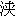

| 龍馬暗殺の謎 諸説を徹底検証 (PHP新書) | |
| 木村幸比古 | |
| PHP研究所 (2007) | |
龍馬暗殺の謎
――諸説を徹底検証
木村幸比古
はじめに
丸くとも一かどあれや人心
あまりまろきはころびやすきぞ
龍馬の心情を吐露した一首である。土佐の精神性である「いごっそう」の一徹が、その人間力、行動力、決断力の源となった。
龍馬三十三年の生涯の終焉は、暗殺という結末だった。
二〇〇六年秋、ＮＨＫのテレビ番組「歴史の選択――坂本龍馬暗殺 黒幕は誰か？――」で、その犯人は幕府か、薩摩かを視聴者に問いかける企画があった。
私も微力ながら協力したが、研究者はとかく史料文献中心主義のあまり、文献をつなぎあわせるだけの評論ばかりで、木をみて森をみずの感がある。むしろ時代に即応した解釈が必要なのではないかという一念から、本書を著すこととした。
龍馬は慶応三年（一八六七）十一月十五日、下宿の近江屋の一室で、刺客の一団に襲撃された。なぜ刺客に狙われたのだろうか。京都の治安維持にあたり、龍馬暗殺の刺客と有力視される幕府見廻組隊士の今井信郎は、「龍馬は幕府のためにも朝廷にも不要の人物」とのちに暗殺の理由として語っている。
現在、実行犯は見廻組という説が有力であるが、その裏で操っていた黒幕は一体誰であろうか。これまでも様々な黒幕がとりざたされてきたが、その中でも幕府（見廻組）説と薩摩説が中心であった。
龍馬の大きな業績をあげれば薩長同盟と大政奉還を実現させたことであろう。
幕府説では、幕政の衰退を危惧した重臣らの焦りが、暗殺という形になったと考えられる。一方、薩摩説は、薩長同盟を遵守し武力討幕にこだわる薩摩が、龍馬の無血による大政奉還を目障りとしていたことによっている。
暗殺現場となった近江屋は、京都守護職の警備区域で、見廻組が担当していた。見廻組は新選組と異なり幕府御家人集団で、最も忠誠心が強く、京都守護職をつとめる会津藩主・松平容保と厚い信頼関係で結ばれていた。
会津藩公用方の手代木直右衛門と実弟の佐々木只三郎が見廻組の指揮を握り、佐々木が見廻組与頭をつとめた。
近年、暗殺翌日に手代木から彦根藩金奉行に出された密書が発見され、話題となった。「極内密に話したいことがあるので祇園一力亭まで来られたし」という内容で、彦根藩関与説が浮上した。
手代木は明治三十七年（一九〇四）、臨終に際し、暗殺は会津藩主・松平容保の指令であると告白している。
一方の薩摩説では、大政奉還により薩長同盟の趣旨がまったく異なってしまったことに対する薩摩の怒りによる犯行であったとされる。肥後藩の密偵は「坂本害するも薩人なるべく候」と報告しており、また、大政奉還の推進者であった越前藩主・松平春嶽も、暗殺翌日の書状に「芋侍の仕業」と綴っている。
たしかに、西郷と親密な関係にあった龍馬のほうも、「西郷は理解に苦しむところがある」と周囲にもらしていたという。
維新後、不可解なことに西郷は、見廻組であった今井信郎の戊辰戦争の際の刑を「厳罰に処すべきところを寛典をもって禁固に処す」と、一年半あまりで釈放させている。また、今井も西郷とは面識もないのに恩返しとして西南戦争に援軍を送ることを企てた。
薩摩と見廻組の関係といえば、慶応三年（一八六七）三月、両者が水面下でつながった事件がある。京都北野天満宮近くの上七軒のお茶屋で幕府歩兵隊士が遊女に乱暴狼藉をはたらき、駆けつけた見廻組と歩兵隊士の衝突となった。「実にもって見廻組方は当地警衛と申す御役前にも似ぬ所行」（黒川秀波筆記）。このとき見廻組と幕府歩兵隊士双方の仲介の労をとったのが薩摩であった。いわば見廻組は薩摩に貸しができたのである。
はたして、こうした関係が龍馬暗殺に何らかの影響を及ぼしたのであろうか。
他方、最後まで幕府に忠節を貫いた会津藩からすれば、禁門の変で長州を追い落としたのは薩摩であったにもかかわらず、その長州と薩摩が同盟を密かに結び、新国家建設を目論んだことに強くいら立ちをおぼえたであろう。本来、その鉾先は薩摩に向けられるべきところを、仲介役の龍馬に向けた。そればかりか、龍馬は大政奉還の青写真として「船中八策」を示し、将軍・慶喜を議長にした共和政治をほのめかした。慶喜は幕政に策なしと大政奉還を受け容れざるをえなかった。
慶喜の意志は固く、慶応三年（一八六七）十月、会津藩主の松平容保は、大政奉還に渋々同意したという。しかし会津藩内では、「容保公が認めても、承服しかねる」と不満をもらす藩士が多かった。当時の状況は土佐藩士の報告によると、「表向きは同心候えども、油断は出来申さず候」というものだった。新選組から離脱した高台寺党の伊東甲子太郎も、京都守護職の配下である見廻組や新選組らの不穏な探索を察知し、龍馬に身の危険があることを忠告したほどであった。
一方、公卿の岩倉具視はじめ、薩摩の西郷、大久保らは平和裡に政権返上させる大政奉還ではなく、あくまで武力による討幕を唱えていた。
薩摩藩士の中には、「おそらく幕府は大政奉還を拒否するにちがいない。そのときをみはからって長州とともに討幕の兵をあげれば、武力討幕は実現する。その具体策として薩摩藩邸の藩士をもって会津藩邸を焼討ちにし、国元から三〇〇〇人を率兵上京させ、大坂城を急襲し慶喜を血祭りにあげよう」という意見が強かった。
そんな中で、岩倉は薩長の重臣と討幕の密勅を練り、慶喜を賊臣として討つことを確認した。
議論づくめで政権を奪取するというような龍馬の案では、真の近代国家建設に無理があるとみていた西郷は、幕府は幕政改革を断行してきたが実があげられなかった以上、議論は無用、近代国家には刷新が不可欠という考えであった。
だが、薩土盟約を結んでいることから、薩摩は龍馬暗殺について一切他言しない組織と手を結ばねばならず、それが見廻組であったというのが、薩摩説を有力視する考えであるが、はたしてどうであろうか。
龍馬本人も暗殺される危険を感じ、才谷梅太郎など変名を使い、髷の形を他藩のものに変え、懐中にはアメリカ製のピストルをしのばせて、下宿も酢屋から近江屋に移すなどした。龍馬は潜伏先として薩摩、土佐の両藩邸は使いたくない、薩摩藩邸に入るぐらいなら一戦交えるとまでいっていたという。
会津あるいは薩摩から暗殺指令を受けた見廻組与頭の佐々木は、かねがね龍馬の存在は四方に累が及びかねないと考えていたため決行を急いだ。佐々木は趣味の和歌を通じ、薩摩藩士と親交があった。さらに、薩摩藩士・海江田信義と見廻組・渡辺篤との親交も浅からぬものがあったという。
こうしてみると薩摩と見廻組、幕府と見廻組との間につながりが浮かびあがってくる。
龍馬はしのび寄る暗殺者の影を詠んでいたのであろうか。
梅のはな都の霜にしぼみけり
伏見の雪はしのぎしものを
梅の花は、龍馬の変名の才谷梅太郎のこと。市中ではおおっぴらに歩き回ることもできないと嘆き、伏見の寺田屋で襲撃されたときは、なんとか幕吏をピストルで応戦してしのいだことを回想している。
暗殺の実行犯とされる見廻組は、小者の増次郎を密偵に仕立て、龍馬の居場所をつきとめた。佐々木の指揮のもと、桂早之助らが龍馬の部屋に突入した。
このとき、龍馬は数日前から風邪気味であった。剣術も二十八歳のときに脱藩して以来、五年間稽古らしいことはしていない。一方、桂早之助らは日々稽古に励んでいた。
剣の腕におぼえのある龍馬は、とっさにピストルを構えることなく、無意識に床の間にあった剣のほうに体が動いたのだろうか。今となっては知るよしもないが、龍馬の斬られる瞬間については、ともに遭難し重傷を負いながらも語った土佐藩士・中岡慎太郎の証言が、龍馬の最期を伝える唯一のものとなった。
二〇〇七年は龍馬没後百四十年、西郷没後百三十年にあたり、あらためて幕末史が見直されている。本書は龍馬暗殺にまつわる諸説の謎の解明を試みることで、幕末史の真相に迫ってみた。さらに龍馬の行動と、「船中八策」から「藩論」におよぶ思想にも言及した。
ひとつ残念なことは、原史料が散逸し、関係書から孫引きせざるをえなかったことである。本来ならば引用のすべてに注釈をつけるべきだが、紙数上それもできなかった。研究者諸賢に感謝している次第である。
二〇〇七年三月
木村幸比古
第一章 維新への道
昭和九年（一九三四）、京都円山公園に建立された坂本龍馬と中岡慎太郎の銅像撰文には、海軍大将・吉松茂太郎によって次のように書き残されている。
三条（実美）、岩倉（具視）両卿ノ提携、薩長二藩ノ連合、大政返上ノ建白ハ両先生ノ画策スル所ナリ。之カ為メニ幕人ノ怨恨ヲ買ヒ、慶応三年十一月十五日夜、京都旅寓ニ於テ刺客ノ兇刃ニ斃ル。
龍馬と慎太郎は、幕府を一日も早く崩壊させ新国家を建設することを画策したが、その維新への道のりには、混迷する時局の連続の中での紆余曲折があった。本章では、その軌跡を辿りながら、「幕人ノ怨恨」を買うに至った経緯までを考えてみたい。
龍馬や慎太郎が大局的に政治に向きあうことになったのは、土佐勤王党への加盟からであった。各地でわき起こる攘夷運動に触発され、土佐でも藩論を一藩勤王にすべきと武市瑞山は唱えた。
攘夷運動の震源地は水戸藩で、江戸では剣術修行で三大道場の千葉、斎藤、桃井各道場に通う諸藩の有志が互いに酒をくみかわしつつ談じて親交を深め、討幕のための連係組織をつくるなどしていった。土佐の武市瑞山、大石弥太郎、長州の久坂玄瑞、薩摩の樺山三円らである。
武市は文久元年（一八六一）、土佐勤王党の盟主となって、土佐の一藩勤王を目指した。大石弥太郎は盟約書を起草し、その趣旨を明確にした。
堂々たる神州、戎狄の辱しめをうけ、古より伝はれる大和魂も今は既に絶えなんと、帝（孝明天皇）は深く歎き玉ふ。しかれども久しく治まれる御代の因循委惰といふ俗に習ひて、独りも此心を振ひ挙て皇国の禍を攘ふ人なし。かしこくも我老公夙に此事を憂ひ玉ひて有司の人々に云ひ争ひ玉へども、却ってその為に罪を得玉ひぬ。斯く有難き御心に在しますをなど（なぜ）此罪には落入り玉ひぬる。君辱しめらるれば臣死すと。況んや皇国の今にも衽を左にせんとするを他にや見るべき。彼の大和魂を奮ひ起して異姓兄弟の結びをなし、一点の私意を挟まず、相謀りて国家興復の万一に裨補（たすけおぎなう）せんとす。錦旗（皇軍の旗）一たび揚らば、団結して水火を踏むと、爰に神明に誓ひ、上は帝の大御心をやすめ奉り、我老公の御心を継ぎ、下は万民の患を払はんとす。されど私もて何にかく争ふものあらば、神の怒り罪し給ふをまたで人々寄りつどひて腹かき切らせと、おのれおのれが名を書きしるしをおさめおきぬ。
土佐には谷秦山の南学をはじめ山崎闇斎の垂加神道、本居宣長の国学が学問の主流をなしていたこともあって、土佐勤王党にも「堂々たる神州、戎狄の辱しめをうけ、古より伝はれる大和魂も今は既に絶えなんと、帝は深くき玉ふ」の一文がみえる。神州観念をもって「夷人に日本を穢させたくないと孝明天皇も御心を痛められ、今や武士の精神である大和魂の気概すら感じられない。本来、君主が辱めを受けたときは臣下も死をも覚悟すべきである。錦の御旗がひるがえったときは、心をひとつに団結して国家のために尽くさねばならない」としている。
「尊王」という言葉の重みは感じられるが、その中に武力討幕は直接つながらない。「尊攘」とは、「尊王」と「攘夷」という次元の異なった運動が、時代の潮流によって結びつき、「尊攘派」と呼ばれる志士が生まれたのである。さらに運動を展開するうちに、尊攘運動を阻止しようとする幕府を排除する者を「勤王家」と呼ぶようになり、幕府と対峙する中で勤王運動が全国的に広まっていった。
土佐勤王党の盟約書の中で「錦の御旗」についてすでにふれている。錦の御旗といえば、公家の岩倉具視が密かにつくり、鳥羽伏見の戦いで新政府軍を皇軍にして勝利させたことでよく知られている。
これについては、慶応三年（一八六七）六月二十五日、岩倉村に幽居中の岩倉具視のもとに中岡慎太郎が龍馬を伴って訪れているが、時局を談じる中で勤王党の盟約書にある「錦の御旗」について龍馬が語ったことは十分ありうるのではないだろうか。岩倉は同年十月、薩摩の大久保利通に「一件袋」と記した袋から錦旗づくりの原案を出してみせている。このことは岩倉と薩摩の項でくわしく述べるとして、土佐勤王党の一藩勤王運動は形を変えて討幕に拍車をかけたことは間違いない。
盟約書に賛同した者は一九二名におよび、龍馬は九番目に名を連ね、上士は宮川助五郎ら数名にとどまった。上士の中にも勤王党に理解を示す者がいた。谷干城、佐々木三四郎、小南五郎右衛門らであるが、意見を同一にしながらも加盟するに至らなかったのは、身分の違いの厳しさがあったためであろう。
一方、北川村の大庄屋の出である中岡慎太郎も、一藩勤王運動に共鳴していった。
村方庄屋にも差別支配があり、龍馬がまだ六歳頃の天保十二年（一八四一）には「天保庄屋同盟」が起こっている。土佐、吾川、長同の庄屋が起こしたこの運動は、高岡、香美にも波及し、領主である大名に対して盟文が起草され回覧された。
「庄屋は賤吏たりといえども、かたじけなくも神勅正統の職業たるべき事」に始まり「其（日本）の総守はかしこくも天皇尊、御代官は将軍、御与頭は諸大名、是は烹鮮（国政）の職といふ。小頭は庄屋にて土地人物の総宰を預り申し候。夫を物に譬へていはば、大名は庄屋の丸薬なり。庄屋は大名の散薬なり」また「知行所は根元王地にて、作人は即ち皇民の儀に付、心の儘に課役を言付、譜代の家来同然に取扱申す儀は、有り難きなる道理にて候」とある。
この国は天皇を総主とすべきで、次に将軍、大名、庄屋とつづき、上士（武士）が介入しないことに言及している。さらに王政復古の実現を含んだ趣旨であり、大胆な思想であった。
天保庄屋同盟の発想は、土佐勤王党に流れたと考えるべきであろう。土佐脱藩第一号になった吉村寅太郎も、高岡郡檮原の庄屋出身であった。
◆坂龍飛謄
土佐勤王党結成のきっかけとなったのは、江戸の桃井道場で塾頭をつとめていた武市瑞山が攘夷の高まりを感じ、万延元年（一八六〇）七月頃、剣術修行と称して中国、九州を旅し、西南諸藩の形勢をつぶさにみたことである。帰国後、武市は再び江戸に行き、長州の久坂玄瑞、薩摩の樺山三円らと薩長土の三藩連合による勤王運動を約束した。武市は土佐勤王党を結成し、藩庁に尊攘を迫り、同志を西南諸藩にも赴かせて情勢をさぐらせた。
武市の同志である樋口真吉の日記「遣倦録」によると、文久元年（一八六一）十一月、龍馬は讚州（香川）丸亀の城下、矢野市之丞のもとを訪れている。名目は剣術詮議であったという。国暇が満期につき翌二年二月まで延長を願い、その後も安芸（広島）坊ノ砂に渡った。
この頃、龍馬は武市の唱える一藩勤王に疑問を感じはじめたのではないだろうか。龍馬が文久二年（一八六二）一月十四日から約十日間萩に滞在したことが、久坂玄瑞の日記「江月斎日乗」にくわしく記されている。表紙に「此書十年後に至て出さざれば禍の連及する事一形ならず依レ之堅他人の覧閲を禁ずるもの也」とある。
日記が漏洩すると本人のみならず他藩士にも累がおよぶばかりか藩益にもならないため、みだりに見せることを厳禁することを断っている。
十四日、翳 土州坂本龍馬、武市書翰を携え来る。松洞に托す。夜前街道の逆旅に宿せしむ。
通説では、武市が龍馬に久坂への紹介状を書きもたせたことになっている。ところが久坂は風邪気味だったのか、吉田松陰の松下村塾の門下生だった絵師の松浦松洞に接待を頼んだ。
十五日、晴、龍馬来話、午後文武修行館へ遣す。是日佐世、寺島、岡部、松洞など来る。藁束を斬る。是日詩経休、坂本生などの周旋もこれありを以て也。夜、寺島に与え薩人が訪れる。夜半帰家す。薩人は田上藤七（田上藤蔵）と申す男にてこれあり候。
「防長回天史」によると、龍馬は小栗流の日根野弁治の門人である津田政治、三宮新右衛門の二人を同行させていたとある。表向きは剣術修行だが、龍馬は長州の形勢を知ることに重きをなしていた。久坂は龍馬と談ずる中で、師である吉田松陰の「草莽崛起論」を熱弁したと思われる。
午後から文武修行館を見学させた、とある。松陰門下の佐世八一郎のちの前原一誠、岡部富太郎、松浦松洞らも見学に来て、龍馬は得意の試し斬りを披露した。小栗流の中には居合術一五本が含まれていた。
余談になるが、ここで龍馬の修行した小栗流にふれてみる。龍馬は十四歳で小栗流の日根野弁治道場に入門している。この流派は剣術ばかりでなく、和（柔）術の道場でもあった。流祖は小栗仁右衛門で、「剣聖」と呼ばれた柳生宗矩の高弟・出淵平兵衛に剣を学び、剣友の駿河鷲之助と和術を編み出したという。柳生流の剣、槍、抜刀、なぎなた、水馬、水泳、騎射の七業に和術を加え、表裏七二の形で元和二年（一六一六）に小栗新流の一派を立てた。
龍馬が江戸の剣術修行で師匠である千葉定吉の娘・さな子を稽古中に投げ飛ばした逸話があるが、この和術を使ったのだろう。
小栗仁右衛門の高弟・朝比奈丹左衛門は、小栗流を下級武士の武術として定着させた。土佐藩主・山内忠義、忠豊、豊昌に和術師匠役として仕え、知行二〇〇石と馬廻役の格式を賜った。小栗流五代目・足達茂兵衛正靖は土佐英信流居合術九代目・林六太夫の三男で、小栗流に土佐英信流居合術一五本を加えた。
父・林六太夫は英信流に大森流居合術を取り入れた人で、江戸勤番中に英信流居合術八代目・荒井勢哲清信に奥儀を伝授した。帰藩後、藩主の料理人頭をつとめ知行八〇石、弓馬、槍、書画、礼節、謡曲なども極めた。四代藩主の豊昌より八代藩主の豊敷まで仕え、知行一五〇石、馬廻役となり、享保十七年（一七三二）病没した。行年七十だった。
大森流は、六太夫の剣術の師である大森六郎左衛門が、神陰古流に林崎神伝流を加えた業で、英信流に大森流一一本の正座の居合をつけ加えたものである。六太夫によって英信流は土佐藩の御止流となった。
龍馬の小栗流の目録をみると、現在の無双直伝英信流の業前一五本が記されていて、抜刀の腕前も相当だったことが窺い知れる。
龍馬の姉・千鶴は安芸郡安田村の郷士・高松順蔵に嫁ぎ、龍馬はかわいがられているが、順蔵は英信流の名手で、足の指の間にはさんだ銀杏をいとも簡単に抜刀で斬り割ったというから、抜き打ちの妙技を習得していたのだろう。順蔵の子・太郎はのち龍馬の土佐海援隊に入っている。
さて、久坂との「来話」とは、どんな内容であったのだろうか。先にも述べたが、久坂は「草莽崛起論」をもって討幕を唱えたのだろう。
「草莽」とは、官に仕えない在野の人のことで、その多くは脱藩し志士となって政治勢力をつくり、尊王主義をもって討幕運動を行った。
「草莽」の語源について『幕末の志士』（高木俊輔、中公新書）には、「中国の周代の『孟子』に国に在るを市井の臣といい、野に在るを草莽の臣という。皆庶人をいう」とある。
松陰は野村和作宛に「草莽崛起の豪傑ありて神州の墨夷（アメリカ）の支配を受けぬ様にあたりし。然れども他国人（長州以外）共崛起して吾が藩人（長州人）虚空にして居るなり。吾が藩に忠臣あらば、早くいずれにか崛起して、外より吾が藩を救ふ手段あるべし」と書き送っている。
松陰は門下生に、在野の志ある者が尊王攘夷のために立ちあがるべきであるのに、いまだ長州人はその気運すらない、長州外でも志をもって決起してくればわが藩を救うこともありうる、と檄を飛ばした。
龍馬は土佐一藩勤王論に傾倒したものの、おのずと料簡の狭さを感じ、こうした草莽崛起の考えを認識したのだろう。
武市の命を受けて来萩したのは、龍馬がはじめてではなかった。前年の文久元年（一九六一）末に大石団蔵、山本喜三之進の二人が久坂を訪ね、さらに九州の動向をさぐって帰藩している。
龍馬が久坂と談じた夜、薩摩の樺山三円の密命を受けて、田中藤蔵が寺島忠三郎邸を訪れていた。
久坂の日記をみると、
十六日、晴、佐世、寺島、松洞来る。
十七日、晴、訪土人薩人、是日山根、吉松、太楽などの所に参る。
この日、久坂、龍馬は、薩摩の田中を交えて情勢を談じたのだろう。のち薩長同盟に龍馬が奔走したのは、このときの会談があり、薩摩の協力がなければ新しい国家樹立は不可能なことを知ったためだろう。
十八日、夜雨、風邪（久坂）にて引籠。
十九日、大雪、風邪（久坂）、真五、松洞など来。
近年、龍馬直筆の茶碗が萩の旧家で発見された。著者は鑑定を求められ調査したところ、この十九日、久坂が風邪で寝込み、絵師の松浦松洞に龍馬を萩の町を案内させ、菊が浜の松原から指月山を散策したことが思い当たった。
見つかった茶碗には外側に松林の絵と「龍馬」の名前が記され、反対側には松洞が描いたのであろう茶碗の内側から外側に続く山の絵と、「豊嶺」「雪鶴」「玉枝」の文字がある。内側には、一羽の鶴が描かれている。現在の玉江の地名は、幕末には玉枝と書かれていた。
この風景をのぞめるのは松陰の菩提寺の泉福寺であり、雪鶴は、松洞が大雪の中に、松陰を鶴にたとえたもので、龍馬との合作だった。茶碗を焼いたのは、長州藩の御用窯だった坂窯と判明した。
松洞は焼きあがったら龍馬に贈るつもりであったようだが、二カ月後に龍馬は土佐を脱藩してしまい、送り届けることはできず、龍馬の手には届かなかった。
二十日、雨、風邪（久坂）、中谷賓卿来宿、松洞、寺島など来る。
二十一日、晴、土人（龍馬）の寓する修行館を訪れ、是の日薩人訪れる。中谷（正亮）と同行。
久坂から武市宛二十一日付の書状が、龍馬に託された。
ついに諸侯（大名）恃むに足らず、公卿恃むに足らず、草莽志士糾合義挙の外には迚も策これなしの事と私共同志中申し合せ候事に御座候。失敬ながら尊藩（土佐）も弊藩（長州）も滅亡しても大義ならば苦しからず。
内容は、松陰の草莽崛起論そのものであった。
二十二日、昨夜より風邪（久坂）に付祷臥。
二十三日、是日をもって土州人（龍馬ら）去る。午後薩人訪れる。
萩を訪れたとき、龍馬は二十八歳、久坂二十三歳だった。久坂は風邪で伏せることが多かったが、その中で武市宛の書を認めた。
龍馬が試し斬りをした萩の有備館は剣、槍の稽古場で、十三代藩主毛利敬親のとき、嘉永二年（一八四九）、堀内から江向へ移された。龍馬らもここで試合をしている。
龍馬は萩に十日間滞在した。大坂をまわり同志と打ちあわせた上で、二月二十九日夜、帰藩し武市に久坂の書状を手渡した。武市は久坂の言動を好ましく思わなかったのだろう。あくまで土佐の藩論を勤王に変えるつもりでいた。一方の龍馬は耳目の学である。長州の熱狂にちかい情熱は土佐勤王党の中には数人しかいない。吉村寅太郎、宮地宣蔵、沢村惣之丞（のちの関雄之助）らと龍馬は談ずるようになった。
文久二年（一八六二）春、久坂は同志と脱藩し上京する。「回瀾条議」を著わし尊攘を唱え、松陰の草莽崛起論を実践に移し朝廷をも動かして、公武合体派の長井雅楽の「航海遠略策」をしりぞけた。
「航海遠略策」とは、朝廷と幕府の双方が協力すべきとする考え方である。幕府は諸外国とすでに通商条約を締結しており、攘夷や条約破棄を唱えても不可能に近い。国難を乗りきるためには公武合体は不可欠であるというものだった。
しかし、久坂はこの公武合体そのものが幕府の失策から発したものであり、諸外国のいいなりになった幕府寄りの公武合体など、とうてい受け入れられるものではないとして、開国主義を推進する幕政を批判した。そして長州の藩論を攘夷の方向に統一するよう奔走した。
土佐でも公武合体を藩主・容堂自ら推進し、参政の吉田東洋は藩論として土佐勤王党を封じ込めていた。武市は冷静沈着に物事にあたり、挙藩一致を目論んでいたが、勤王党には血気に走る者もいた。
三月四日、吉村寅太郎がまず脱藩した。脱藩第一号である。その二十日後の二十四日、龍馬は同志である沢村惣之丞と脱藩した。龍馬の向かった先は、薩摩であった。萩で談じあい、薩摩の存在に注目したのだろう。かつて土佐の絵師・河田小龍から西洋文化の先見性を耳にしたこともあって、薩摩の反射炉や洋式設備をつぶさに見たかった。
というのも、十九歳でペリー来航の黒船にカルチャーショックを受け、西洋砲術家の佐久間象山から「東洋の道徳、西洋の芸術」つまり、大和魂をもって、一方で西洋の芸術つまり技術をもってすれば日本の将来は明るい、と諭されたことが影響していた。和魂洋才思想であった。
武市は龍馬の脱藩のことを土佐勤王党の同志から知らされ、「土佐の国ではあだたぬ奴だ」といった。土佐弁で「あだたぬ」とは、包容しきれぬ男であるというのである。武市は龍馬の気持ちが痛いほど理解できた。
龍馬は久坂から教えられた一首、松陰がアメリカへ密航を企てる際にその心情を詠んだ歌が脳裡をかすめたことだろう。
世の人はよしあしごともいわばいえ
賤が誠は神ぞ知るらん
世の中の人は密航のことを知ったら、何を血迷ったことをしたものだ、家族はどうなると非難するだろう。しかし、百聞は一見にしかず、外国をみないで論ずることほど愚かなことはない。私の国を憂う真心は神だけが知っているにちがいない、という心境であった。
だが、龍馬は結局、目指した薩摩に入ることはできず、京都を目指した。
その頃、土佐では大事件が起きていた。四月八日、参政の吉田東洋が土佐勤王党の連中によって暗殺されてしまったのである。
偶然にも龍馬の姿が城下から消えている。嫌疑は龍馬にかけられた。
龍馬の同志・平井収二郎は、京都の公卿・三条実美の奥女中になっていた妹の加尾に一書を認めた。
坂本龍馬昨廿四（二十四）日之夜亡命、定めて其地へ参り申へく、龍馬国を出る前々日、其許の事に付、相談に逢候。たとひ龍馬よりいかなる事を相談いたし候とも決して承知致すべからず。其許は家にありて父母にしたがふ身分なれば、他人の為に人に遣はれ候事は出来申さず候。元より龍馬は人物なれども、書物を読ぬ故、時としては間違ひし事も御座候は、よくよく御心得あるへく候。只々拙者も其許も報恩の節を失せず、忠孝の道に欠けさる様、致され度候。めてたくかしく。
収二郎にすれば、三条実美は朝廷中でも急進派公卿として知られ、尊攘派の志士と気脈を通じていると聞く。実美の弟・公睦の妻・信受院（名は恆）は藩主・容堂の実妹でもある。三条家に恆が嫁いだ折に加尾は土佐から従い、そのまま奥女中になっていた。
龍馬は脱藩する半年前（文久元年〈一九六一〉九月十三日付）に、初恋の人である加尾に謎めいた一書を送っていた。
先づ々々御無事と存じ上候。天下の時勢切迫致し候に付、
一、高マチ袴
一、ブツサキ羽織
一、宗十郎頭巾
外に細き大小一腰各々一ツ、御用意あり度と存じ上候。
龍馬は思いもよらぬ発想の持ち主である。三条家の奥女中に男装させて攘夷運動の手先に使おうと考えていたのだろうか。加尾は男まさりで勤王の志士の間でも名が知れていたという。
兄の収二郎も、妹・加尾が間違って龍馬にだまされ利用されはすまいかと心配でならなかった。
晩年、加尾は「涙痕録」の中で「龍馬の奇行ハ今に始めぬことながら、定めて一大事を思ひ立ちしものならん、と女史（加尾）ハ人目もあれバ、袴地と羽織とハ親戚への土産物にかこつけて用意した」と述懐している。
加尾は龍馬の発想を「奇行」と綴るが、余人には計り難いものがあった。
龍馬が脱藩後の土佐では、藩論が一変していた。吉田東洋の暗殺によって前藩主・容堂の政治的求心力は低下し、武市瑞山の土佐勤王党が台頭して、平井善之丞、小南五郎右衛門、渡辺弥久馬らが藩に登用され、瑞山の進上は意のままとなった。まさに我が世の春といったところであった。一方、容堂は一筋縄ではいかない策士家・瑞山を身近に置くことで、土佐勤王党を牛耳ろうとしたのだろう。
文久二年（一八六二）八月、十六代藩主・豊範は参勤交代の途路、入洛し、薩摩、長州といった大藩とともに国事周旋の勅諚（天皇の命令）を賜った。十月、三条実美、姉小路公知に従って江戸に入ったが、このとき、瑞山は「柳河左門」と名乗って公知卿の護衛役をつとめた。
土佐勤王党の中でも優秀な間崎哲馬は、江戸で容堂の補佐役をつとめ実績をあげた。
「続再夢記事」によると、龍馬が越前を訪れた際、間崎哲馬と近藤長次郎らも赴き、畿内における海防策を進言したとある。
越前藩の前藩主・松平春嶽は、幕府政事総裁の要職にあり、龍馬は春嶽の紹介状をもって幕臣・勝海舟に面会を求めたという。海舟は龍馬の志に感銘したのだろう。海軍を富まそうではないかということになった。
さらに春嶽は肥後の横井小楠を龍馬に紹介した。小楠は春嶽に招かれ越前藩の政治顧問として同藩に四回赴き、三岡八郎（のちの由利公正）と財政の立て直しを図り、外国との不平等条約を破棄して殖産興業によって積極的に国力をつけるためにも開国策をとるべきと、破約必戦論を唱えた。
この頃から龍馬は土佐勤王党の攘夷一辺倒から、海舟、小楠、公正の新生日本を見据えた開国論者へと転向していった。
この龍馬と越前との関係を裏づける書状が平成十三年（二〇〇一）発見された。
文久三年（一八六三）七月八日付、龍馬二十九歳のときの書状と推定され、京都の越前藩邸にいた重臣の村田巳三郎宛である。
唯今肥後邸ニ横井（小楠）を尋候ところ、夜前申し含み候通り伏水（伏見）ニ相付（着か）と申て今日八ツ時頃（午後二時頃）出足ニテ候よし。下拙ニ於ても一言神戸へまて申し遣し度く儀もこれあり。また先刻御談申せし儀も有て薩邸ニも早々参多し故ニ、今夜伏水ニ下り明朝上京を存付候間、吉井（幸輔）への状一封今夜中何卒遣しの程奉希候。頓首々。
八日 （書判） 坂本龍馬
村田巳三郎様 直陰 足下
この書状は、文面からみて京都に滞在していた龍馬が肥後京都藩邸において横井小楠と会談したことを村田に報告していることがわかる。ところが他の文献上では前年十二月の士道忘却事件で小楠は越前に滞在しているので、どのようにして京都に来たか疑問が残る。文面では、「小楠は夜前に伏見に着き、同日午後二時頃上洛した」ということだった。龍馬は神戸へ戻り勝海舟と同志に相談しようと思っているという旨があり、また先に談じた件について「伏見の薩摩藩邸に出向いて話したいことがある。今夜伏見に下り、明朝また上京する多忙さなので、今夜中に薩摩の吉井幸輔へ（国事の一件を）一報しておいてほしい」と依頼した内容だった。
文末の書判の「龍馬」の文字があるが、これは花押の一種で、龍の字の上に馬の字を重ねたものである。
文献上では同年六月二十九日、龍馬は村田と国事の一件を話し合っており、これに関する内容と一致する。
村田と小楠の関係は、安政四年（一八五七）四月、春嶽が思想家として有能な肥後の小楠を招き、藩校・明道館の教官にと考え、交渉を村田に命じたことに始まる。その後、小楠を招き入れ、藩の政治顧問とした。春嶽が幕府の政事総裁職に就任したため、小楠の構想はそのまま幕政に反映されることとなった。
文献上では龍馬は、元治元年（一八六四）八月、勝海舟の使者としてはじめて薩摩の西郷隆盛に会っているが、この書状から、前年の文久三年（一八六三）、すでに国事の一件で龍馬は薩摩藩と親密な関係をもっていたことがわかる。
しかし、龍馬は書状を八日に発信したものの、村田は七月六日帰藩しており、後日に受け取ることになった。
書状には、大きな意味が含まれていた。それは、龍馬が村田と会談した「国事」の内容である。「国事」とは「挙藩上洛計画」であった。文久三年（一八六三）三月、春嶽は公武合体策にゆきづまり、幕府になんの相談もなしに政事総裁職を辞任し帰藩してしまった。
幕府は、春嶽に対し閉門し自邸にこもる「逼塞」を命じたため、越前藩は幕政に関与できなくなった。
京都から春嶽の姿が消え、公武合体派の山内容堂、伊達宗城らも帰藩、洛中は尊攘派志士が「天誅」と称したテロ行為に走り、幕府と与した者を次々と暗殺したのである。
そうした状況にあって、越前藩では藩をあげてのクーデター計画を小楠ら改革派が画策していた。政情からみると幕府は尊攘派勢力に屈し、ついに五月十日を攘夷決行の期日と決めてしまった。このまま幕府が横浜を鎖港すれば、イギリス、アメリカらは大坂湾に軍艦を入れてきっと朝廷に談判を申し入れるだろう。
小楠の同志宛の書状でも、次のとおりある。
何にしても戦争近々に相成候勢に之有り候。（中略）唯々祈り候処は京都、関東御一致に御成り成され候へば、外国はどふとも御都合出来仕る可く、誠に痛心の至に御座候。（文久三年三月十日付）
小楠が案じたのは、国内不和の内患に、イギリス、アメリカ、フランス、オランダの四カ国との外交は困難とみえたからだ。現に鎖港外交交渉でこじれ、険悪な状態となっていた。
小楠は「挙藩上洛計画」を同志に呼びかけた。村田はじめ由利公正、松平主馬、牧野主殿介、長谷部甚平、堤正誼、青山小三郎（貞）らも賛同し、藩論を統一し上洛計画を推進した。
小楠の構想は、諸外国が大坂湾に入り込む前に、春嶽をもって率兵上京し、朝廷と幕府に建言する。すでに幕府は攘夷を拒絶している以上は、これを守り、在留の各国公使を京都に招き、朝廷側は関白、幕府側は将軍はじめ重臣らと談判すべきである。その中で、開鎖か和戦を決めようではないか。越前藩は開国論を死守している以上、これをなすには精兵四〇〇〇名と農兵をもって出動させる計画であるから、薩摩、加賀、肥後へも特使をもって同意を求めようとした。
村田は龍馬と六月二十九日に会談した際、これらの緊迫した情勢をうちあけたと思われる。
村田もその手記で「外国に対する事ハ姑らく聞き、内地に於て公武の御不和を醸し成すハ勿論、列侯も亦不服を申立てけれハ、最早外人摂海（大坂湾）に来り迫るに当り上京する様の手ぬるき事にてハ、時機に適はさるへし」と攘夷を簡単に判断すべきではなく、公議をもって決すべきであると述べている。
さらに「今後ハ朝廷ニ於て裁断の権を主宰せられ、賢明諸侯をして機務に参与せしめ、又諸有司撰挙方も幕下の士のミに限らず、列藩中よりも広く当器の士を撰抜ある事ニ定められ然るへし、是今日の要務なりとの旨趣なりき」と、失政をするのは幕府の人材不足にほかならず、広く列藩から有能な人材を登用すべきと結んでいる。
この内容は、前年文久二年（一八六二）、春嶽が幕政改革に着手するにあたり、小楠が建策した「国是七条」をそのまま綴っていた。
「国是七条」は、のち龍馬の「船中八策」にも組み込まれたもので、大政奉還という倒幕に用いられたものだった。
「国是七条」には次のようにある。
一、大将軍上洛謝二列世之無礼一（将軍が朝廷に対して謝罪する）。
一、止二諸侯参勤一為二述職一（参勤交代を廃止する）。
一、帰二諸侯室家一（江戸にいる諸侯夫人を国許に戻す）。
一、不レ限二外藩譜代一撰レ賢為二政官一（外様、譜代の区別なく有能な人物を登用する）。
一、大開二言路一与二天下一為二公共之政一（大いに公議政治を行う）。
一、興二海軍一強二兵威一（海軍を設置し、強化する）。
一、止二相対交易一為二官交易一（自由貿易をやめて官における交易とする）。
小楠は「挙藩上洛計画」をもって、これらのことを実現させようとしたのであった。
一方、海舟は、文久三年（一八六三）四月二十七日、神戸海軍操練所の取締役を命ぜられた。実際に開設されるのは約一年後の元治元年（一八六四）であったが、それまで龍馬は海舟の私塾で海軍技術を学んでいた。文久三年五月十六日、龍馬は海舟の命を受けて海軍操練所の資金援助を春嶽に依頼し五〇〇〇両の内諾を得ていた。
また、越前藩内では五月二十六日、挙藩上洛が正式に決まり、六月一日にはいよいよ春嶽と藩主・茂昭が藩士を城中に集合させ、実施の布告を発表、士気を高めることもあって酒肴が振る舞われた。
ところが、中根雪江が京都から帰藩し、朝廷や幕臣、雄藩の重臣らと会談をもった結果、時機尚早と報告したため、六月四日、あらためて重臣会議が開かれた。小楠は挙藩上洛は決定したことだが、再度、京都に人を遣わし情勢を見極めようと主張し、春嶽も同意した。
藩は村田はじめ牧野主殿介、青山小三郎らを京都に派遣し、薩摩、肥後、尾張らの藩に挙藩上洛が決定したことを伝えようとした。
そこへ予想外のことが起こった。六月六日、十四代将軍・家茂が急遽江戸に帰るとの報告が藩にもたらされた。これでは小楠の構想する朝廷、将軍ら同席のもとで藩論を訴える大義名分が消えてしまう。加えて七月には茂昭が江戸参府にあたっていたが、ちょうど将軍が再上洛ということもあって参府自体が見直されることとなった。
六月七日、重臣による緊急会議がもたれ、保守派の中根はこの計画は無謀すぎると反対意見を述べ、改革派の小楠はあくまで実行すべしと一歩も譲らなかった。会議は再三もたれたが、七月二十三日、挙藩上洛計画は中止されることとなり、小楠、村田ら改革派は挫折、春嶽の親書を持って薩摩、肥後へ挙藩上洛のための両藩主の賛同を求めに赴いていた由利、岡部豊後らも帰藩次第処罰される決定がなされた。小楠も八月十一日、責任を取って肥後に帰藩してしまった。
最近、横井小楠研究家の徳永洋氏が発見された薩摩藩家老・小松帯刀から越前藩士・海福雪宛の書状では、「何ともお気の毒千万」と計画の失敗を嘆いていた。
計画の頓挫により、越前藩は幕政から遠のき、表舞台に登場することは大政奉還までなかった。
先にも述べた、龍馬が春嶽に依頼した海軍操練所の軍資金調達の五〇〇〇両は、藩の一年分の予算に相当する額であった。調達に成功したこともあって、小楠と由利は龍馬を囲み、酒宴を開いた。挙藩上洛計画を画策中で、成功すれば公議政体論にもとづく共和政治をやろうと龍馬と由利に語ったのだろう。龍馬は気をよくして一首を詠んでいる。
君がため捨つる命は惜しまねど
心にかかる国の行末
龍馬は越前藩政治顧問の小楠から頼まれたとあって、かなり気分をよくしたのだろう。六月二十九日付の姉・乙女宛の書状の中で「一大藩によくよく心中を見込て頼みにせられ、今何事かでき候得バ」と綴っている。「一大藩」とは越前藩のことであろうと推察できる。
新史料の七月八日付の村田宛の書状は、今まで空白であった越前藩との関わりをうめる一級史料ではないかと思う。
越前藩の計画はならなかったが、同年八月十八日、薩摩と会津が世にいう「八・一八の政変」を起こし、越前藩の計画をここで実現した。長州を中心とする尊攘派勢力を京都から一掃したばかりか、朝廷内の「急進派」と呼ばれた三条実美らの公卿たちも長州へ都落ちした。このクーデター挫折の論考は、徳永洋氏『横井小楠』（新潮新書）、三上一夫氏『横井小楠の新政治社会像』（思文閣出版）にくわしく取り上げられている。
一方、神戸海軍操練所の創設は、ペリー来航によって江戸湾のみならず、畿内の海防についても、朝廷から幕府に強い要望が再三あったことによるものであった。
文久三年（一八六三）四月二十三日、将軍・家茂は、大坂湾周辺の警備視察を行い、軍艦「順道丸」で和田岬に上陸した。このとき海軍奉行をつとめていた勝海舟は海防の急務を唱えた。
内容は、海軍操練所をつくり、各藩から有能な人材を入所させ海防の強化を図りつつ、海軍士官の養成を語ったもので、家茂は即決で設置を認めた。
海舟は、海軍に志す者であればたとえ脱藩浪人でもよいと、龍馬が集めた同志をもって私塾の「勝塾」を開いた。海舟はこれについて、次のようにふれている。
之を殺すの拙なるを以て、唯其方向を一転せしめんと大に鼓舞して他日の要を期するに有り。故に先づ神戸の地に海軍局を設け、此輩を集合し、船舶の実地運転に従事せしめ、遠く上海、天津、朝鮮地方に航し、其地理を目撃し、人情を洞察せしめんとす。幸ひに土州之人坂本龍馬氏わが塾に入り、大に此挙を可とし、激徒を鼓舞す。（「海軍歴史」）
海舟は操練所の塾頭に庄内藩士の佐藤与之助を置き、十月、勝塾の塾頭に龍馬がなった。操練所ができるまで大坂淀川に置き、完成したのは元治元年（一八六四）二月頃であった。このとき、海舟のもとで海軍に励んだ者は総勢二〇〇名ほどであった。
六月頃、龍馬は脱藩浪士を集め、ロシアの南下政策を封じ込めることもあって、蝦夷地（北海道）の開拓に二〇〇名ほどを投入する計画を周囲にもらしていた。
六月五日、京都で池田屋事件が起こった。肥後の宮部鼎蔵を首謀者として長州、土佐の浪士らが密会していたところ、不逞浪士の取締りを強化していた新選組によって浪士多数が斬り殺され、また捕えられた。
問題となったのは、勝塾の塾生だった龍馬の同志で土佐の望月亀弥太が、その密会に加わっていたことであった。京都守護職・松平容保は畿内における指揮権を有していたこともあって、九月中旬、勝塾の塾生の姓名出所について内糺を行った。いわば強制捜査であった。
これにより十一月十日、海舟は御役御免となった。「海舟日記」では冒頭に、龍馬から京都の最新情報を聞くとある。龍馬は新選組を「壬生浪士」と呼び、「探索」の名目で「財宝を私すること甚だし」「下民、是が為に災を蒙るもっとも多く」と批判した。また「我微力を以て奉仕することここに三年。其間、死生を弁ぜず、尽力すること、無致。唯邦国の安危存亡を以て任とし、顧みず言用られず、志達せず、終に俗吏の為に塞がれ、如何ともすること能はず」と、無念さをにじませた。
翌慶応元年（一八六五）三月十八日付で神戸海軍操練所は廃止に追い込まれた。
◆亀山社中
京都守護職ならびに新選組は、龍馬とその同志らを厳しい目でみることになった。
操練所の廃止で活動の拠点のなくなった龍馬は、慶応元年（一八六五）六月、長崎に亀山社中を設立した。
姉・乙女宛には「二十人ばかりの同志引きつれ、いま長崎の方に出で稽古方仕り候。御国より出しものの内一人西洋イギリス学問所にいりをり候」（九月九日付）と伝えている。
この頃、龍馬率いる亀山社中は、白袴をはいて長崎の丸山あたりを闊歩していたことから「社中の白袴」と呼ばれていた。薩摩藩の小松帯刀、西郷隆盛の援助で、一人三両二分（約八万円）の活動費が月々支給された。
商売は、海軍にかかわる仕事が主で、長崎のグラバー商会から買いつけた軍艦や銃器を薩摩藩名義で購入、そのまま長州へ売却するというものであった。
この商業取引が、薩長間を親密にさせ、政治路線も歩みよることとなった。
此年春、長州人井上聞多、伊藤俊助、土州人楠本文吉等長崎ニ来り。直柔（龍馬）ノ同志千屋寅之助、高松太郎ニ依テ小銃買得ノ事ヲ依頼スルニ、氏直ニ唯諾シ近藤昶次郎ヲシテ、小松帯刀ノ旅寓ニ行カシメ備サニ事ヲ談ス。（「坂本龍馬の事歴」岩倉具視対岳文庫蔵）
幕府は征長戦後、長州の外国からの武器等の取引きを厳しく取締まっていた。めざとい龍馬は薩摩の小松帯刀の地位を利用し、薩摩から長州への商業取引に踏みきった。
既往ノ疑念を氷釈し帰藩ノ後之ヲ藩主ニ説ク。（前掲）
伊藤と井上は、龍馬の仲介で薩摩との永年にわたるわだかまりを解消できたと、藩主・敬親に報告した。感激した敬親は、龍馬に短刀一口を贈り労をねぎらった。
高杉晋作と龍馬は日頃から意気投合していたこともあって、一席を設け大盃を傾けあい談じあった。
晋作觴ヲ揚ケ朗詠シテ曰ク
カクスレバ カクナルモノト 知リナガラ
止ムニヤマレヌ ヤマトダマシヒ
直柔（龍馬）亦朗詠シテ之ニ和ス曰ク
カクスレバ カクナルモノト 我モ知ル
ナホヤムベキカ ヤマトダマシヒ（前掲）
高杉の朗詠した歌は、松下村塾の師・吉田松陰が国禁を犯して海外密航を企てた罪で、江戸送りになった際に詠んだもの。龍馬も松陰の志を慕い、歌をもじって詠みかえし、日本の将来を語った。
その後、薩長同盟に龍馬は一役買うことになる。
◆薩長同盟
長州の支藩の長府藩士・印藤肇宛に、龍馬は次のように書き送っている。
いまだ咄合も不レ仕候所なれども、案ズルニ今日中ニ事すミと相成可レ申か、山口より八木（桂）小五郎よりも長々敷手紙参、半日も早く上京をうながされ候。然レ共此度の上京私一人外当時船の乗組一人位の事なるべくたれか京ニ御出しなれバ、はなはだつがふ（都合）能しかるべし。（慶応元年十二月二十九日付）
一日も早く桂（のち木戸孝允）は京都に上り、薩長同盟を成立させたい。そこで龍馬は同行者を印藤に依頼した。「咄合」は、薩摩から長州が買入れることになった「桜島丸」使用権紛議であった。同行者は、長州藩士・三吉慎蔵となり、船で十六日に兵庫に上陸した。
十八日、龍馬は大坂の薩摩屋敷に身を寄せ、その夜、三吉とともに大物の幕臣・大久保一翁に面会を求めた。一翁は海舟の才を認め、幕閣に推挙した人物だった。その一翁から龍馬は、身辺厳重に警戒するよううながされた。
十九日、龍馬は一翁の忠告どおり薩摩藩の＋○船印を揚げ淀川を遡航し、伏見寺田屋に入った。薩長同盟は暗礁に乗り上げ両藩のメンツもあって双方、話を切り出すどころか毎晩宴会ばかりで一向に進展せず、ついに木戸は帰郷を決意していた。
あわてた龍馬は西郷隆盛に詰め寄り、政権の鍵を握るのは薩摩であり、今の幕府では日本の再建は不可能であると説いた。西郷も日本とか国家といわれれば、国あっての薩摩であるとの認識をあらたにし、慶応二年（一八六六）一月二十二日、薩長同盟は成立した。
会談の出席者は、薩摩から小松帯刀、西郷隆盛、吉井幸輔、長州から木戸孝允、仲介は龍馬だった。同盟は密約のため文章化されず、のち木戸が龍馬に六カ条の同盟の裏書を求めたことにより明らかとなった。
一、戦いに入ったときは、薩摩はすみやかに兵二〇〇〇を率兵上京させ、また大坂へも一〇〇〇人ほど遣わし、京坂を固めること。
一、長州の旗色がよくなったら、ただちに朝廷側に働きかけて長州を支援し、講和成立に尽力すること。
一、万一、長州の敗色が濃くなっても、半年や一年で潰滅はありえないので、その間に援護策を講ずること。
一、幕府軍が関東へ引き揚げたならば、ただちに朝廷に諮って、長州の冤罪を取り除くよう努力すること。
一、一橋、会津、桑名などが朝廷を利用し、薩摩の周旋をさまたげるときは、すぐさま決戦にいどむこと。
一、冤罪が晴れたうえは、薩長は誠意をもって皇国のために尽力し、天皇親政を実現すること。
同盟を機に薩摩は幕府と一線を引き、しだいに武力討幕に転じ長州と歩調を揃えるようになる。
同盟成立を首を長くして待っていた三吉は、寺田屋で龍馬の知らせを待ちわびていた。そこへ龍馬が笑顔満面でやってきて、二人で祝盃をあげているところへ、伏見奉行の捕り手が寺田屋を包囲した。
そのときの様子は、お龍の後日談によると、次のとおりであった。
風呂に入って居りました処、外から私の肩先へ槍を突出しましたから、片手で槍を捉え、わざと二階へ聞こえるような大声で、女が風呂へ入っているのに槍で突くなんて誰だ誰だと云ふと静かにせい殺すぞと云ふからお前さんらに殺される私じゃないと庭へ飛び下りて、濡れ肌に袷をひっかけ、帯をする間もなく、はだしで駆け出すと、槍を持った男が私の胸倉を取って、二階に客が有るに相違ない。名を云へと云ひますから、薩摩の西郷小次郎（隆盛）さんと一人は知らぬとでたらめを云ひますと、ウム能く教へたとかなんとか云って表へバタバタと行きました。私は裏の秘密梯子から駆け上って、捕り手が来ました。御油断なりませぬと云ふと、よし心得たと三吉さんは手早く袴をつけ槍を取って身構え、龍馬は六連発の短銃を握って待ち構えました。（「土陽新聞」）
龍馬はお龍の機転で、高杉から贈られた上海土産のスミス・アンド・ウェッソン・モデル・アーミーピストルで応戦し、幕吏数名を射殺、三吉と虎口を脱し、伏見の薩摩屋敷に逃げ込んだ。龍馬はおたずね者となり幕吏の標的にされた。
このことを裏づける史料として、幕吏が放った密偵の成尾屋与三郎は「伏見の一件実に大変のよし、坂本儀は伏見表に薩摩御屋敷これあり全者逃げ込み、当時疵養生これあり」と、事件二十日後に幕府へ報告、さらに「久太夫（密偵）と申すもの当時佐倉丸（桜島丸、原名ユニオン）水夫頭ボツマ役（ボートマン）あい勤め候よし、坂本過日登船のみぎり、金子請け取り与三郎（密偵）より取り次ぎ候趣承り候」とも報告している。
龍馬率いる亀山社中が乗船する「桜島丸」にも、中村新吾と貝野幸之丞という内通者が密かに乗り込み、龍馬の動向を探っていたのである。
寺田屋事件は偶発的に起こったものではなく、計画的な襲撃の可能性があった。
この頃の龍馬はむやみに行動していたわけではない。横井小楠が越前藩や幕府に進言した意見書がその青写真になっていた。小楠は肥後熊本で実学党を結成し、「行える学問」を目指していた。長州の吉田松陰もこれを実践した一人だった。
龍馬も小楠の思想的影響を色濃く受けついだ。そのひとつに富国論、つまり殖産興業の振興があった。
小楠は万延元年（一八六〇）に「国是三論」をかかげ、富国、強兵、士道の三つを極めることが急務であると唱えた。さらに文久二年（一八六二）に「国是七条」で幕政批判をし、諸藩による公議政治の断行、富国強兵、殖産興業を説いた。
そうしたなかで、龍馬はひとつの構想を描いた。蝦夷地開発計画であった。脱藩浪士のエネルギーを新天地に向け、ロシアの南下政策を防ごうというものであった。
そこで薩摩藩を利用して洋型帆船の「大極丸」を入手した。船の買い主は兵庫の商人・鳴海屋与三郎、請人は長崎の小曾根英四郎、周旋人は亀山社中の高松太郎という形をとったが、実際は薩摩名義で、つまり保証つきで長崎に駐在していた薩摩の会計吏・汾陽五郎右衛門と亀山社中の間で交渉が成立した。船主はプロシヤ商人チョルチであった。
慶応二年（一八六六）十月二十八日、龍馬は船を入手すると、念願であった蝦夷地開発計画を練りはじめた。下関の亀山社中の出張所であった伊藤方「自然堂」で因州の河田佐久馬に胸のうちを綴った書状には、次のようにある。
其儀は彼の先年御同様彼の北門の方へ手初め致し候を、又思出たり。此度は己に北行の船も借受け申し候。其期限は三月中旬より四月朔日（一日）には多分出帆仕り度と心積り致し申し、上件を相初候時は必ずや貴兄留守ではこまり候事故も、薩の方へは申し遣はさずこれあり候。（慶応三年三月十四日付）
このように、龍馬は因州の実力者の河田に参加するよう求めたが、結局実現しなかった。目的は蝦夷地の物産を大坂の土佐堀あたりで売りさばき、その利潤をもとに政治活動にあてることであった。
この発想については、阿波の岡本韋庵が、慶応二年（一八六六）長崎で龍馬に会った際に樺太のことを語ったという記述が、岡本氏自伝にみえる。岡本はロシアの南下政策に危機感をつのらせた先覚者で、いちはやく、蝦夷地の開拓と物産の振興を唱え、その後、樺太で農工者四〇〇人を率いて開発に尽力した。
だが、思わぬことに、「大極丸」の船価をめぐって紛議が起こる。支払いの結末は、亀山社中が土佐海援隊へ改称したことにより土佐藩の管轄となったため、後藤象二郎が処理した。
長崎駐在の土佐商会につとめていた山崎直之進の日記に「右大極丸の義（儀か）は去寅（慶応二）十月、薩摩人買入、船将其外三人雇入、兵庫港に航海せしめ、滞泊中、今卯（慶応三）七月、土佐へ買入、直に崎陽（長崎）へ着船せり」とある。
諸事情で蝦夷地開発問題は一時中断を余儀なくされたが龍馬はあきらめきれず、芸州藩士・林謙三に書状を送った。
そが中にも蝦夷の一条は別して兼て存込の事故、元より御同意仕候。――扨、今朝永井玄蕃方に参り色々談し候処、天下の事は危共、御気の毒とも言葉に尽し申されず候。大兄御事も今しばらく命を御大事に成され度、実はなすべきの時は今にて候。やがて方向を定めてシュラ（修羅）か極楽かに御供申すべく存じ奉り候。（慶応三年十一月十一日）
当時、林は薩摩の海軍に聘用され、維新後は安保清康と改名し、のち男爵、海軍中将になった人物。永井玄蕃（尚志・主水正）は幕臣で若年寄、大政奉還の際には龍馬と気脈を通じた開明的な人物だった。
薩摩と長州は、あくまで武力討幕をもって政権の一掃を目論んでいたため、内戦は決して得策としない龍馬と、くい違いを生じていた。
龍馬が林に訴えたかったことは、有能な人材を一人でも多く蝦夷地開発に加わらせ、その利潤をもって海軍の充実を図りたいということであった。そのため、海軍の専門家である林に相談し、幕臣の永井にも理解を求めたのである。
この頃の龍馬には、新日本建設に対する自信があった。
新国家の方針とすべき八カ条にわたる案を、慶応三年（一八六七）六月十五日、「船中八策」にまとめた。
一、天下の政権を朝廷に奉還せしめ、政令宜しく朝廷より出づべき事
一、上下議政局を設け、議員を置き、万機を参賛せしめ、万機宜しく公議に決すべき事
一、有材之公卿諸侯及び天下之人材を顧問に備へ、官爵を賜ひ、宜しく従来有名無実の官を除くべき事
一、外国の交際広く公議を採り、新に至当之規約を立つべき事
一、古来の律令を折衷し、新に無窮の大典を撰定すべき事
一、海軍宜しく拡張すべき事
一、御親兵を置き帝都を守衛せしむる事
一、金銀物価宜しく外国と平均の法を設くべき事
以上八策は方今（ただ今）天下の勢を察し、之を宇内万国に徴するに、之を捨てて他に済時之急務あるなし。苟くも此数策を断行せば、皇国を挽回し国勢を拡弘し、万国と並行するも亦敢て難しとせず。伏て願くは公明正大之道理に基づき、一大英断を以て天下を更始一新せん。
第二条「万機宜しく公議に決すべき事」は、由利公正の「議事之体大意」の第五条「万機公論に決し私に論するなかれ」に通じ、国家の政治はあくまでも公議公論にすべきとする横井小楠の考えに共通する。
龍馬は兄・権平宛で「当時天下之人物と云ハ――越前にてハ三岡八郎（由利公正）――肥後ニ横井平四郎（小楠）」と書き送っている。小楠とその弟子である由利の二人から政治と財政に強い影響を受け継いでいた。
最近、龍馬の「船中八策」より、さらに一カ月前に、宮津藩士・嵯峨根良吉という人物が同じ内容の七項目を意見書にまとめていたものが子孫宅から発見され、話題となった。
●鹿児島藩士寺島宗則等の推挙する処あり、同藩に聘せらる慶応二年両寅十月、鹿児島に至り藩の子弟を訓督する。五月、時勢改正の件数項を建議せり。其要綱に曰く。
●一、天幕御合体、諸藩一和、御国体相立候。根本は、天朝の権を増し徳を奉備、併に公平に国事を議し、即ち六宰相を置き、国政を主裁し、銭貸出納、外国交際、海陸軍事、刑法、租税を司らしめ、議政司上下二局を設け全国より百三十人の選良を出し、国事を議決、朝廷に上奏裁可（天皇の許可）の上、布令すべしとの趣意なり。
●二、人才御教育の儀、御国是相立候。基本に御座候事、即ち江戸、大坂、長崎、箱館、新潟等の各市に大小学校を設け、大学には西洋人数人を聘し、全国の有志を教導せしめ、大坂に兵学校を設け西洋人を教師として教育し、又、所在法律度量学科を奨め、漸次学校を増設し、文明の教育を確立すべしとの趣意なり。
●三、国中の人民平等に御撫教相成、人々其性に準じて充分力を尽させ候事、即ち従前人民の労逸（労苦と安逸）等しからず、農に重く他は遊民多し、爾今農の負担を減じ、士、商、工、僧、山伏、社人を問はず、平等に賦課せしめ贅余品に重課し、人に労逸の差同なからしめ士人民の職を繁くし、遊民を督して其業に就かしむるを以て治国の本源とすべしとの趣意なり。
●四、是迄の通用金銀総て御改め、万国普通の銭貨御通用相成、国中の人口と物品と銭貨の平均を得候。御算定の事、即ち万国一般円形にして、其価規定あり。故に金銀銅貨列国と同品位に改鋳し、国際貿易上の損害を避け、又国人をして融貨の便を得せしめ、盛に工業製造を発達せしむべしとの趣意なり。
●五、海陸軍御兵備の儀は、治世と乱世との法を別ち国の貧富に応じて御算定の事、即ち兵は熟練兵器精良を主とす。治平常備兵数は約二万八千人と予定し、歩二万千人、砲四千人、騎二千人と分ち、工兵輜重兵（運輸などに任じた兵）とし、幕下諸藩士より撰抜四年交代に就役せしめ、士官其の他の官吏は朝廷之を任命せられ、三都其他要地に駐屯警備に充てん常備兵外は、士衆を問はず所在に徴募し教官を派遣して、教練せしめ有志の徒士官学校に就学せしめん。又士にして商工業に就く者は之を許して其常職を減ぜん。海軍は先づ海軍局に洋人教師を聘して全国中より三千人を募り士官水兵を教育し成業に随ひ、戦艦を新造又は購買すべし。即今、常備海軍は在来の戦艦を修理し船員を補充すべし。爾今、国力の増進に従ひ兵制を改正し、漸次拡張せん。有事に臨んでは国中の男子皆兵となるの制を定むるを大本とすべしとの趣意なり。
●六、戦艦併ニ大小銃其外兵器、或ハ常用の諸器械衣食等、製造の機関初ハ外国より御取寄せ国中是に仍て物品に不足なき様、御処置之事。即ち各船製造局ハ運輸の便利の他所に撰定し洋人を教師に聘して伝習せしめ、国内職工を増して製造に従事せしめば、海陸兵用の利器を充すに至るべし。洋人雇聘は毎一人月費二百五十金に上るも其金、又国内に消費せん。其携帯し去るは僅かならんのみ故に洋人雇使は、毫も厭ふべきことなからん。是れ兵器製作は必須且速急を要すべしとの趣意なり。
●七、良質の人馬及ヒ鳥獣の類、御殖種の事。即ち欧人種は亜人種に勝れり。須らく良種の人を殖育して人才を増さん。軍馬又然りとす。牛羊鶏豚の類、衣食の料に有益なるものを繁殖せしめ、国民をして肉食を常として羊絨を被服に充てしめば、識見体格健強なり。富国強兵の基たるべしとの趣意なり。
当時、嵯峨根が薩摩藩に意見書として上書したものを後人が明治末期にまとめたものであるが、かなり開明的な内容である。龍馬との接点は文献上見出せないが、嵯峨根は海舟と親交があり、龍馬と会い談じたか、もしくは薩摩藩士から風聞した可能性は十分に考えられる。嵯峨根は天保八年（一八三七）三月生まれであるから、龍馬より二歳若い。
この文献には、次のようにある。
（嵯峨根）良吉丹後宮津住、嵯峨根丹海季重の男なり。幼にして文武の芸術を修め歳十六、蘭学に志し大坂住、緒方洪庵の門に入りて業を受け更に長崎に赴き英学を修む。特に西洋兵書に通ず。後江戸に至り、幕司江川太郎左衛門贈正四位の招請に応じ其門弟に砲術を授く。会々幕府初めて蒸気船を製造す。良吉、勝安芳故伯爵、榎本武揚故子爵、伊澤謹吾等と乗船近海を航行測量す。途次鹿児島に至る。幕侯島津斉彬贈正一位、乗船大ニ良吉等の技能を感じ物を贈りて之を犒ふ。尋て斎藤篤信弥九郎贈正五位の塾頭となり、剣を門生に授く。良吉、文武の技能卓越なる。
履歴をみても、かなり優秀なる人物であったことが窺い知れる。安政五年（一八五八）幕府の軍艦「日本丸」に乗って鹿児島を訪れ、それが縁となって寺島宗則の推挙により慶応二年（一八六六）十月、薩摩藩に招聘された。翌年五月、藩庁に時勢改革の意見数項を建議した。その要は、朝幕合体の統一政体、議政局設置、人材教育、学校設置、軍制改革等にわたるもので、これが容れられて、十月、藩士の列に加えられ、十二月、船奉行添役となり、また開成所助教を命ぜられた。講義の傍ら英国海軍法規を翻訳した。明治元年（一八六八）六月、三十二歳で病没した。
龍馬の「船中八策」と嵯峨根の意見書は酷似しているばかりか、具体性があり、今後研究の課題となろう。
龍馬は「船中八策」（慶応三年六月十五日）と自筆の「新政府綱領八策」（同年十一月上旬）を著した。「船中八策」は、大政奉還を将軍にうながすもので、「新政府綱領八策」は王政復古後の新政府樹立のためのもので、表現も少し異なっている。「新政府綱領八策」は現在、国立国会図書館憲政資料室と下関市立長府博物館に所蔵されている。
新政府綱領八策（慶応三年十一月）
第一義
天下有名の人材ヲ招致し顧問に供ふ。
第二義
●●有材の諸侯を撰用し朝廷の官爵を賜ひ現今有名無実の官を除く。
第三義
外国ノ交際を議定す。
第四義
律令を撰し新ニ無窮の大典を定む。律令既に定れば諸侯伯皆此を奉じて部下を率す。
第五義
上下議政所。
第六義
海陸軍局。
第七義
親兵。
第八義
皇国今日の金銀物価を外国と平均す。
右預メ二三の明眼士と議定し、諸侯会盟の日を待って云々○○○自ら盟主と為り、此を以て朝廷に奉り始て天下万民に公布云々強抗非礼公議に違ふ者は断然征討す。権門貴族も貸借することなし。
慶応丁卯十一月 坂本直柔
◆大政奉還
「船中八策」は、慶応三年（一八六七）六月九日、龍馬が後藤象二郎と藩船「夕顔」に乗り、長崎から兵庫に向かう船中で八カ条の意見書を作成して後藤に示したものである。海援隊書記の長岡謙吉は、かつて医者を目指していたこともあって、カルテのように八カ条の名文にまとめた。これは妙案と後藤は前藩主・山内容堂に上申し、これが将軍に大政を奉還させるきっかけになった。
「新政府綱領八策」は、大政奉還後に龍馬が同志の戸田雅楽と中島作太郎と相談し、新国家の方針になる内容に作成したもので、時期的には、越前で由利公正を訪問し京都へ戻った直後といわれている。
「船中八策」の「天下の政権を朝廷に奉還せしめ」は、将軍・慶喜が政権を返上し目的が達せられたこともあって、削除された。
「○○○自ら盟主と為り」は、前将軍・徳川慶喜を暗示させた内容にした。龍馬は、政治と屏風は同じで、折れて曲がらなければ立たないことを熟知していた。
研究者にいわせれば、龍馬は真剣に「慶喜公」を新政府の議長席に座らせるつもりでいたという。天皇親政が実現すれば、二百六十五年の徳川幕府に議長ポストの恩典を与えてもよいと龍馬は考えていたが、猛反対の薩長はあくまで武力討幕で貫き、龍馬の存在そのものが必要なくなってきた。そこで密かに暗殺が企てられたという説も生まれた。
くわしくは後述するが、龍馬はむしろ権力欲の強い大名らに自らを自画自賛させるために「○○○」と空白にしたと思われる。自らの名を入れ新政府に夢をはせさせたというのである。
大政奉還後も旧職制はそのまま残り、王政復古の大号令によってはじめて幕府の役職は消えた。しかし、各藩には藩主がおり、藩の存在の解体までには時間を要したのである。
龍馬の存在が新政府を樹立する上で目ざわりであったのは事実であり、それは、あまりにも薩長間の往来で両藩の実情を知りすぎたという一面があったためであろう。
新国家を建設するには、国の方針が必要不可欠であったが、それが定まったとき、すでに龍馬は暗殺されていた。
由利は、慶応四年（一八六八）正月十日に「議事之体大意」、つまり議会政治が目指すべき綱領の作成を示した。
●一、庶民志を遂け人心をして倦まさらしむるを欲す。
●一、士民（武士と庶民）心を一にし盛に経綸（経済発展）を行ふを要す。
●一、知識を世界に求め、広く皇基（天皇が国を治める基礎）を振起（盛ん）すべし。
●一、貢士（藩からの推挙の役人）期限を以て賢才（才能ある実力者）に譲るべし。
●一、万機公論（政治は世論の方向に従う）に決し私（私的）に論するなかれ。
諸侯会議（天皇と諸侯が誓約する会議）之御趣意右等の筋ニ仰出されるべく哉。
この由利案に加筆した土佐藩士の福岡孝弟は、龍馬が唱えた公議政体論を強調する内容に変更した。福岡が意図するところは、彼の立場上から出たものであった。福岡は慶応三年（一八六七）藩の参政になり大政奉還に尽力、王政復古後は武力討幕派を抑え、公議政体論を主張したのである。これは後藤象二郎と藩政改革を推進し、藩論を死守したかったのだろう。
福岡は「会盟」として慶応四年（一八六八）正月十日頃に案を出した。
「会盟」とは会議をもって盟約を結ぶことで、諸大名による列侯会議を示し、あくまで議事政治をかかげた。
一、列侯会議を興し万機公論に決すべし。
一、官武一途（太政官と武家が協力）庶民に至る迄各其志を遂げ人心をして倦まざらしむるを欲す。
一、上下（由利案の士民から上下にしたのは、福岡の階級意識からという）心を一にし盛に経綸を行ふべし。
一、智識を世界に求め大に皇基を振起すべし。
一、徴士（新政府が藩士から任意で選んだ役人）期限を以て賢才に譲るべし。
右等之御趣意仰出されべき哉、且右会盟相立ち候処にて大赦之令仰出されべき哉（諸侯会盟が成立した時点で赦免を行うべきか）。
一、列侯会盟の式（列侯のための儀式）。
一、列藩巡見使の式（諸侯が盟約を結ぶかを調べる使者）。
さらに長州藩士の木戸孝允は、福岡案に加筆し、慶応四年（一八六八）正月中頃に「誓」として出した。木戸は近代化のための外交に力を入れ、開国和親を貫こうとした。
一、列侯会議を興し万機公論に決すべし。
一、官武一途庶民に至る迄各其志を遂げ人心をして倦まざらしむるを欲す。
一、上下心を一つにして盛に経綸を行ふべし。
一、智識を世界に求め大に皇基を振起すべし。
一、旧来の陋習（攘夷的な保守の習慣）を破り宇内（万国公法）の通義に従ふべし。
右の条々公平簡易に基き、朕列侯庶民協力同力、唯我日本を保全するを要とし、盟を立る事如斯背く所ある勿れ。
このように加筆、訂正が繰り返され「五箇条の御誓文」が、慶応四年（一八六八）三月十四日に成立した。
一、広く会議を興し万機公論に決すべし。
一、上下心を一にして盛に経綸を行ふべし。
一、官武一途庶民に至る迄各其志を遂げ人心をして倦ざらしめん事を要す。
一、旧来の陋習を破り天地の公道に基くべし。
一、智識を世界に求め大に皇基を振起すべし。
我国未曾有の変革を為しとし、朕躬を以て衆に先じ天地神明に誓ひ大に斯国是を定め万民保全の道を立んとす。衆亦此旨趣ニ基き協力努力せよ。
明治天皇は、慶応四年（一八六八）三月十四日、公卿、諸侯、殿上人、徴士らの前で、京都御所紫宸殿において、国家の基本方針となるべき「五箇条の御誓文」を神々に誓う形をとった。天皇にかわり奉読を三条実美が行い、現在、御物として京都御所東山御文庫の所蔵となっている。
由利の草稿「議事之体大意」は、福井県立図書館の所蔵となっている。
平成十七年に由利の「議事之体大意」を福井県が東京の古書店から購入した記念講演会に著者は招かれ講演したが、龍馬の「船中八策」と由利の思想的なものが非常に似ていて、「五箇条の御誓文」に組み込まれたと述べた。
「議事之体大意」から「五箇条の御誓文」の経過は、猪飼隆明大阪大学大学院教授の「五箇条の御誓文と由利公正」（福井県発行）パンフレットを参照した。
第二章 龍馬暗殺事件の謎
幕末最大のミステリーといわれる龍馬暗殺事件。それは、今もって謎につつまれている。慶応三年（一八六七）十一月十五日、大政奉還（同年十月）と王政復古（同年十二月）のはざまでその事件は起きた。
同年四月には、龍馬が乗船した「いろは丸」が紀州藩船と瀬戸内で衝突しており、賠償金八万三〇〇〇両をめぐって紀州藩と対立している最中でもあった。龍馬率いる土佐海援隊士は、その事件の報復で紀州藩が龍馬を暗殺したという紀州説を信じていた。
一方、越前藩の前藩主・松平春嶽は、龍馬を暗殺せねばならない状況に追いやったのは薩摩藩であると思い込んでいた。龍馬暗殺にふれ、春嶽は京都から国元の藩主・茂昭に一書を認めた。
昨十五日夜、土藩才谷梅太郎（龍馬の変名）外一人（中岡慎太郎）殺害せられたり。殺人者分り居候趣ながら藤次（福岡孝弟）も不申聞候。段々藤次の咄承り候処、此度土藩尽力ニより芋藩の姦策已ニ破れたる形勢ナリ。（慶応三年十一月十六日付）
春嶽は幕府の政事総裁職をつとめたこともあり、公武合体を推進していた土佐藩参政・福岡孝弟とともに、将軍・慶喜の大政奉還に尽力した。その二人の会談の中で、「芋藩」つまり薩摩藩が武力討幕に失敗した結果、龍馬を逆恨みして陰謀を企てたに違いないと政治形勢から直感した、と春嶽は綴っている。春嶽と福岡は薩摩による陰謀説を唱えた。
同じ土佐藩でも谷干城は、新選組による犯行と信じていた。暗殺の二日前に、元新選組幹部で離脱した高台寺党の伊東甲子太郎が龍馬の下宿を訪れ、龍馬と中岡に「新選組が狙っているのでくれぐれも気をつけられよ」と忠告した。このとき、中岡は忠告に感謝の意を表したが、日頃、護身用のアメリカ製のピストル、スミス・アンド・ウェッソンを懐にしのばせていたためか、龍馬は「天下国家のために奔走する者はつねに危険にさらされて当然のこと」と平然としていたという。
刺客の存在に気づいた龍馬は、慶応三年（一八六七）十月十八日付、望月清平宛で「二本松（薩摩藩邸）ニ身をひそめ候ハ、実ニいやミで候得バ、万一の時もこれあり候時ハ、主従共ニ此処ニ一戦の上、屋舗（土佐藩邸）ニ引取申べしと決心仕りおり申し候」と、綴っている。薩摩藩京都屋敷は洛外の二本松にあって、音曲の聴こえない田舎暮らしはとうてい我慢できそうもなくイヤである。刺客に襲われたそのときは、一戦交える覚悟はできていて、身の危険を感じたならば、河原町にある土佐藩京都屋敷に逃げ込み、藩の世話になろうと心に決めているというのである。
当時、龍馬は高瀬川畔の材木商酢屋の二階を借り入れ、土佐海援隊京都事務所を置いていた。この事務所では長崎や下関のような営業活動は一切なく、むしろここを拠点に将軍・慶喜に政権を返上させるべく奔走していた。だが、この場所も安住の地とはいえず、幕吏の目が光っていた。
そこで龍馬は、醤油商・近江屋新助宅の奥二階の部屋を借りて住むようになった。新助は安政六年（一八五九）に二十二歳で家業を継ぎ、まもなく土佐藩邸に出入りする御用商人となっていた。新助は温厚な人柄で、土佐藩士を支援した。
余談だが、新助は慶応二年（一八六六）十一月末頃、高瀬川あたりで行き倒れになっていた志士を連れ帰り、介抱した。維新後の明治十七年（一八八四）、滋賀県知事の使者として旧土佐藩士で警察部長の片岡直温が新助を訪ねてきた。驚いたことに、あのとき行き倒れていた志士が、実は薩摩藩士の中井弘で、滋賀県知事になっているという。
龍馬が新助の世話になったのは、文久三年（一八六三）二月のことで、脱藩罪の赦免のため、藩邸内で七日間謹慎を命ぜられた経緯があり、藩の世話にだけはなりたくないと同志にもらしていた。
「坂龍飛謄」と評されたように、各地を旅し、活動した龍馬だが、その最後の旅となったのは、慶応三年（一八六七）十月二十四日からの越前行きで、同志の岡本健三郎を伴っていた。岡本は下横目の役にあり、いわば土佐藩の警察官であった。十月二十四日付の書状には、次のように綴られている。
今日四ツ時（午前十時）に彼是取遣候為、私より後藤の方参り候はずに致候。大兄（岡本健三郎）御同行のことはまだ申さず候得ども、今日は申出し必御同行と存じおり申し候。それであなた及私し家来一人〆三人にて今日出足七ツ時（午後四時）頃よりも出かけ致度、その御心積にて、先き触大津の方迄御出し遣られべく候よふ御頼み申し入れ候。ひそかに聞く、越前侯（松平春嶽）は廿八（二十八）日、国を発し上京と。それで我等はよふ出足を急ぐところなり。
文中の後藤とは、土佐藩参政の後藤象二郎のことで、公議政体を説いた龍馬の「船中八策」に啓発され、前土佐藩主の山内容堂を動かして将軍・慶喜に大政奉還を建白していた。龍馬は十一月一日、越前で松平春嶽に謁して、後藤からの伝言で上京を要請していた。翌日、蟄居中の由利公正と会談し、新政府樹立後の財政について論じ合っている。
この越前行きは大政奉還の十日後で、情勢は緊迫していた。龍馬は文中に、必ず岡本に同行してほしいと依頼し、龍馬自身も警護に家来一人を連れて行く予定であると述べている。
この家来一人とは誰であろうか。
龍馬とともに近江屋で暗殺された中に、従僕の藤吉という人物がいる。当時十九歳の青年でかつて雲井龍の醜名をもつ京都の相撲取りであったが、勝負根性に欠けており、昇格が望めず廃業したという。
その後、先斗町の料亭武乃屋の出前持ちになり、酢屋にあった土佐海援隊京都事務所に出入りするうちに龍馬と顔みしりとなった。志士になる夢を抱いていたようで、しばしば三条河原で剣術のまねごとをしていたところ、土佐藩邸出入りの貸本屋の倅である菊屋峰吉と知りあい、峰吉の紹介で、龍馬の用心棒兼世話役となったという。
文中の「家来一人」とは、峰吉から紹介を受けていた藤吉のことだろうか。そうすると、越前でのボディガードが認められて、正式に従僕にとりたてられたことになる。
この年十月十四日、慶喜は大政奉還によって将軍職を辞したものの、二十四日、朝廷は意外にも将軍職辞表を留保した。受理すれば将軍の官職は返上されるが、徳川家の莫大な領地は残ってしまう。公卿・岩倉具視や武力討幕派の薩摩の西郷隆盛、大久保利通、長州の木戸孝允らは、新政府樹立後の財政面を考え苦慮した。そこで岩倉は天皇親政をもって王政復古の大号令を発し、将軍職を廃止、同時に辞官納地を徳川家に迫ろうと考えていた。
一方、慶喜は側近の西周に西洋の議会制度を調査させ、二院制による議会草案をまとめさせていた。
新政権で慶喜が議長席を確保すれば、武力討幕を画策する薩長を封じ込めることが可能となる。問題なのは、薩長間ならびに公卿らと自由に新政府構想を論じる龍馬の存在であった。
そうした状況の中、事件は起きた。
《新選組説の謎》
龍馬とともに暗殺された中岡慎太郎の率いる土佐陸援隊で、暗殺実行の翌十六日、村山謙吉という不審者が陸援隊屯所で捕縛された。
当時は密偵がいて、情報収集に奔走していた。村山は新選組隊士とも、新選組によって密偵に仕立てられたともいわれる人物である。『新選組大人名事典』（新人物往来社）の村山謙吉の項には次のようにある。
生年未詳～慶応四年四月（閏四月か）、新選組隊士であったとも、弱みを握った新選組が脅迫して手なずけ、間者に仕立てたともいわれる人物。健吉とも。長州出身と自称する。前歴については不明だが、慶応三年九月上旬、長州藩士と称して、土佐藩白川邸に屯集する陸援隊に、密偵として潜入している。その後、十月七日になって新選組の忍び廻りの手により松原通りの大丸呉服店において尋問を受け、六条新地米市場にて先ごろ押し借りを働いた浪士に似ているということで、屯所に連行されている。ところが人違いだということが判明し、村山が土佐藩士だと主張したことから、新選組では「風俗言語など少々御藩に違い候ところも相見え候へども、一応お問い合わせ申儀に候」として、白川邸の横山勘蔵（中岡の変名）と津田良助に対して書面をもって問い合わせ、身元の確認を取ったうえで釈放した。近藤勇は九日になって、「十月十五日を限りとして、薩摩や長州に討幕挙兵の陰謀があり、白川邸の浪士も呼応する予定である」と会津藩に対して報告している。「会津藩文書」によれば――右の儀、（村山）謙吉、（伊東）甲子太郎口より出で候抔申す儀、彼の方へ聞こえ候はゝ、直ぐさま殺害致されしは差し見え候儀に候間、極々機密に成し下され度し――とあり、前述の「会津藩文書」から、伊東甲子太郎も陸援隊に情報源を持っていたはずであり、それは水野八郎（新選組当時に橋本會助と名のる）以外には考えられない。水野は、同様の密偵ということを見破られないために、御陵衛士側の判断に基づき先手を打って密告したものと考えられる。そのため村山は、土佐藩の小監察らに捕縛されて河原町藩邸内の牢にほうり込まれ、十七日に取り調べが行われている。土佐藩士・神山左多衛の日記に、「十六日、白川邸浪人の内、新撰組一人これあり、小目付一同立ち越させ召捕、河原町牢に入れ候事」とあって、さらに、「十七日、白川に置きこれある一の浪人、今度入牢者を、今日詰問の事」とある。この「一の浪人」とされる陸援隊隊士は、水野であったのだろうか。
その後の村山の足取りは不明であったが、赦免ののちに、慶応四年（一八六八）四月（閏四月か）に旧陸援隊に発見されて七軒町において斬殺されたという。
龍馬暗殺直後、実行犯は新選組という噂が、市中に流れていた。西本願寺の寺侍だった西村兼文著「新撰組始末記」には、次のように綴られている。
同年卯十一月、土州藩士坂本龍馬直柔は上京して、京都河原町四条北、酒商近江屋某方に止宿す。このさい伊藤摂津（伊東甲子太郎）は藤堂平助をともない、坂本の旅寓に来り、坂本の同藩中岡慎太郎と同席、両人に面会して夷情切迫、国事多端の形況を語り、およそ二時間ばかり長談におよび、決別にさいし、伊東は坂本、中岡の両士にむかい、このごろ新撰組、見廻組の者ども君を附覘（不法）するよしを聞く。かかる市屋に両君あるは危殆（危険）言うばかりなし。至急に居を藩邸に移し、躬を国家のために保護せられよ、と密報す。
龍馬が暗殺された当日、伊東は二時間にわたり国事を論じ、その中で新選組、見廻組が狙っていると告げたというのである。前述の村山謙吉のように、当時、新選組はつねに志士らを探索していた。龍馬は前年に寺田屋で襲撃を受けた際に幕吏を射殺しており、いわば手配人であった。
伊東は、かつて新選組の幹部であり、この頃は高台寺党党首となり薩摩の援助を受けながら勤王運動に奔走していた。伊東がなぜ、龍馬に密告したかについて、志士時代に薩長間で尽力した広島藩士の船越衛は回想している。
（伊東がいうには）決して嘘でない。新選組はいろいろ変遷して来て、今日でははなはだよくないことになっておる。それでお前等は天下の名士であって、国家のために尽くすということは承知しておる。、承知しておるので助けたい。今日（暗殺当日）、私はその方針に向かって天下の名士を助けようと思うから、どうかお前も私の言を用いて、なるべく危険を避けて貰いたいと忠告した。
はたして、近藤勇の率いる新選組が実行犯だったのか。だが、近藤自身にはアリバイがあった。「旧夢会津白虎隊」（永岡清治）によると、次のとおりであった。
慶応三年春、勇は会津藩の山本覚馬（当時四十歳）に会津の刀工である三善長道の刀を二振打ちおろしてはくれまいかと依頼した。さっそく覚馬は親友のある国表の永岡権之助という藩士に、近藤先生の特別注文ということで頼みます。そして二振の刀ができ洛中の研ぎ師に出し出来上ったのが、龍馬が襲われた十一月十五日だったのです。この頃、覚馬はすでに目がほとんど見えません。覚馬の手を引き権之助とその子清治（白虎隊一番隊に所属）が連れだって、七条にあった新選組の勇宅を訪ねました。勇は非常に喜び、さっそく酒宴になり、その頃、龍馬は暗殺されていたのです。深夜になり覚馬ら三人は勇宅を出て覚馬の小川町にある家にもどる途中の油小路三条に至った時、向うから息をきらせ会津藩士の遠山仲次と柳田虎雄が駆けつけて来た。二人曰く――只今河原町通り三条上ル旅舎に於て、土佐人なる坂本龍馬直柔、中岡慎太郎道正殺害せられ慎太郎は息なお絶えず、なかなかの騒動にて、総体に人気穏かならず、其の下手人は佐々木只三郎とも、近藤勇とも取沙汰すれども、確と言う所は分らず――という。覚馬はこの時、今迄、勇とは酒をくみ交わして来たのだから新選組とは何かの間違いだと思いつつ、下手人は幾人かと問えば――柳田は二人なり――と答えた。
暗殺現場の近江屋あたりは、京都守護職である会津藩主・松平容保の警備区域であり、いちはやく、情報が流れたとしても不思議ではない。佐々木は見廻組与頭の肩書きのある、いわば幹部であって、見廻組は守護職の下部団体にあたり、的確な情報がもたらされたはずであったが、密かに実行されたのだろう。近藤にも嫌疑がかけられた。
慶応四年（一八六八）正月二十三日、刑法事務局第五一により暗殺禁止令が布告され、京都二条城に掲示された。
●近来所々において暗殺候内には、罪状相認め
死骸に添えこれ有り候も少なからず、何れも陰悪陰謀等を憤り候にて、この所業これあるべく、全体不埒の者どもは得と吟味の上刑典をもって、厳重の御裁許を仰せつけられ事につき、大政一新の折柄なおさら御為筋を心掛け公然と申し出すべくのところ、その儀これなく私に殺害致し候は、朝廷を憚らず致し方につき、右等の者これにおいては、吟味の上、屹度厳刑に処せられべく候間心得違いこれなきよう致すべく事。
とあり、翌三年（第九四四により）消滅した。
要するに、いかなることがあっても暗殺は今後においては厳重に処罰する。これ以前については不問、ということになる。したがって龍馬暗殺は、犯人が捕えられても極刑に処することは事実上不可能になった。
慶応四年（一八六八）四月二十五日、近藤は甲州勝沼の戦いで敗れ、板橋の刑場で斬首され、その後、京都三条河原に晒された。首は盗まれないよう五寸釘で打ちつけられ、斬奸状には次のようにあった。
右は天来浮浪の者にて、初め在京新選組の頭を務め、後に江戸に住居致し、大久保大和と変名し、甲州並びに下総流山において官軍に手向ひ致し、或ひは徳川の内命を承り候などと偽り唱え、容易ならざる企てに及び候段、上は朝廷、下は徳川の名を偽り候次第。その罪、数ふるに暇あらず。よって死刑に行い梟首（さらし首）せしむる者なり。
近藤は反乱軍の主謀者として、新政府軍の血祭にあげられた。
箱館戦争ののち、旧幕府軍降伏人の新選組隊士らは、龍馬暗殺を糾問された。
箱館降伏人元新選組
兵部省口書
横倉甚五郎
午三十七歳
土州藩坂本龍馬討候義は一向不レ存候得共、同人討候者は先方にては、新撰組の内にて打殺候様申居候間油断致す間敷旨、勇（近藤）方より隊中へ申通候事承候而巳に御坐候。其余ハ一向存不レ申候。
午二月（明治三年〈一八七〇〉二月）
横倉は龍馬暗殺については存ぜずといい、近藤から、龍馬には油断すべきではないと命じられたのみであったという。横倉は多摩の千人同心の出で、剣は天然理心流の道場時代から近藤にかわいがられ、新選組へは元治元年（一八六四）十月、近藤の江戸隊士募集で入隊した。
新政府軍が横倉に注目したのは、近藤、土方に極めて近い人物とみなしたためで、その後、兵部省のみならず、江戸（東京）の刑部省に身柄を移し、厳しい尋問をつづけたようである。たとえ、暗殺での罪は問えなくても、幕府の重臣がどのあたりまで実行に関与していたかを取り調べようとしたことが窺い知れる。
横倉同様に拘留された相馬肇の場合も、かなり厳しい拘留だったのだろう。翌三年八月十五日、獄死した。行年三十七だった。辞世の歌が残っている。
義のためにつくせしことも水の泡
打よす浪に消えて流るる
箱館降伏人
元新選組相馬肇事
兵部省口書
年二十八才
坂本龍馬儀ハ私は一向存知不レ申候得共、隊中ヘ廻文ヲ以テ右之者暗殺致候嫌疑相晴候趣全見廻り組にて暗殺致候由之趣初而承知仕候。
横倉同様、相馬もこの一件については存ぜずと証言した。新選組は暗殺の関与がなく、実行は見廻組の仕業であると、兵部省ははじめて知ったという。
相馬の新選組入隊は遅く慶応三年（一八六七）六月頃で、近藤が板橋で処刑される際に土方への伝令役をつとめていた。箱館戦争では陸軍奉行添役となった。
それでもなお今井信郎、横倉甚五郎、大石鍬次郎らは、降伏人として明治三年（一八七〇）二月二十一日、龍馬暗殺の嫌疑のためか、兵部省から刑部省へ移送された。十月十日、相馬への判決は伊豆諸島新島へ「流罪終身」であった。同五年（一八七二）十月十三日、赦免された。その後、妻マツに「何事が起きても一切他言無用」と伝え自刃したという。
大石は明治三年の刑部省の取り調べに対しても、兵部省の場合と同様に「龍馬と石川（中岡）の暗殺は、新選組では決してない。見廻組の四人で実行し、この件は近藤も承知していた。薩摩の加納伊豆太郎に捕えられ、拷問を逃れるために暗殺をほのめかした」と述べている。
元一橋家来大石捨二郎倅
兵部省口書
大石鍬二郎事
新吉
午（明治三年〈一八七〇〉）三十三歳
口書
且同年十月比、土州藩坂本龍馬、石川清之助両人ヲ暗殺之儀、私共ノ所業には無レ之、是は見廻り組海野某、高橋某、今井信郎外壱人にて暗殺致候由、勇（近藤）より慥に承知仕候。先達薩藩加納伊豆太郎に被二召捕一候節、私共暗殺に及び候段申立候得共、是は全く彼の薩の拷問を逃れ候為にて、実は前申上候通に御坐候。
加納とは、元新選組の加納鷲雄のことで、伊東甲子太郎らと新選組を離脱して高台寺党を結成、その後、薩摩藩に所属し新政府軍として戦っていた。
大石は武州出身、一橋家の家臣大石捨二郎の長男で、はじめは一橋家に仕えていたが、脱藩し浪人となった。剣は小野派一刀流だったが居合抜きの名人で、「人斬り鍬次郎」と呼ばれていた。近藤が江戸で隊士募集を行った元治元年（一八六四）十月に入隊した。沖田の一番隊に配属され、目付となった。高台寺党の伊東を暗殺したことで、加納は大石を厳しく追及したようである。
大石は明治三年（一八七〇）十月十日、小塚原刑場で斬首された。行年三十三だった。一説には伊東殺害についての罪科と伝えられるが、明治政府は、慶応四年（一八六八）正月二十三日以前の犯罪については不問にすると明言している以上、この斬首は反乱軍としての罪科とみるべきであろう。
龍馬暗殺の新選組説は、当時、市中で流された噂や、各藩の思惑が独り歩きした風聞、伝聞の色彩が濃いといわざるをえない。
《薩摩藩陰謀説の謎》
見廻組で肝煎をつとめた今井信郎は、次のような実歴談を残している。
「私も坂本なんと云ふ奴は幕府のためにもならねば、朝廷の御ためにもなるものではない」
見廻組の今井からすると、龍馬は倒幕を企てた大奸物である。
一方の討幕側にも、幕府が大政奉還したため、新体制の中で龍馬の存在は不必要だと考える者もいた。朝廷、つまり公卿（ここでは岩倉具視ら）と武力討幕派の薩長としては、新国家の体制はあくまで藩閥で決めたい。
ところが龍馬は、公議政体によって民の声を政治に活かすべきで、それが自由貿易を目指す土佐海援隊にとっては有利であると考えていた。幕府がある限り規制緩和はできない。経世済民、つまり経済に国境はなく、外交をさかんにして国を富ませることが近代化の道と考えていたためである。
慶応三年（一八六七）十一月頃の龍馬への評価は、今井のいうとおり、幕府側からも討幕側からも目ざわりな存在であったのだろう。
明治二年（一八六九）、箱館戦争の降伏人として反乱罪で取り調べを受け、龍馬暗殺にも関わっていたことも加えられて検挙された見廻組の今井は、西郷隆盛の助命により一命をとりとめたといわれる。それゆえ、龍馬暗殺に薩摩の関与があったという疑惑は、つねにぬぐいきれないことも事実である。たとえ実行犯が見廻組であったとしても、指揮に薩摩が関わっていたのではないかという疑惑が残る。
今井には、西南戦争の際の言動に不可解なことがあった。『坂本竜馬を斬った男』（今井幸彦、新人物往来社）にくわしい。
明治十年六月三十日依頼免のあとに、信郎の履歴書には次の三項目がある。
一、仝（同）年七月九日一等中警部心得被申付
一、仝年八月二十七日解散
一、仝年仝日曩ニ西南騒擾ノ際ニ方リ能ク報国ノ義務ヲ弁ジ速カニ応募出京候段奇特ノ事ニテ候、依ッテ慰労トシテ金二十円下賜候事、警視局
今井は官職を辞し、表向きは西郷討伐隊を組織するようにみせかけ、かつての上州岩鼻の代官所剣道教授方時代の門人などを集めて一隊をつくり、浜松まで行った。だが、西郷軍が八月十六～十七日の延岡の決戦で敗走し全滅状態という一報を受け、今井は西郷に恩をかえすこともできずむなしく帰京し、八月二十七日、千葉習志野で解団したという。この件について、息子の健彦が口述している。
（息子の健彦が語るに）おやじは西郷さんが骨を折って命を助けてくれたという恩義を感じていたので、この西南戦争でなんとか西郷さんを助けてやりたいという気持があったが、表向きにはそうもできないので、西郷隆盛追討隊というのを編成する決心をして、自ら二個大隊の巡査を募集した......（これらを）習志野で訓練して、イザ出陣して浜松まで行った時に、西南戦争が終わってしまったということを聞いてガッカリしてしまった。この時のおやじの気持は、行く時は西郷の追討隊でも、向うへ着いたら寝返って西郷を助けるという腹であった。そんな腹の中のことは誰も知らんから、今井の奴、恩義知らずの怪しからん奴だと、当時の仲間からいわれたぐらいだったが、西南戦争が終わったということで万事休す、ということになり、役人もやめて初倉村に入ってしまったのだ。
ところが、明治政府の警視局は、金二〇円の慰労金を今井らに下賜した。受け取るほうの気持ちもさぞ複雑なものと推測されるが、今井と西郷との間には相通じるものがあったのだろうか。
今井らが訓練をしたという習志野操練所についての余談だが、明治六年（一八七三）六月二十九日、陸軍元帥・近衛都督の西郷隆盛とともに、大和田原で行われた明治天皇観覧の陸軍大演習に、篠原国幹は参加した。翌日、暴風雨で天皇自らも全身ずぶぬれになる中、篠原が指揮をとり、見事な奮戦ぶりを示した。天皇が篠原を近くに召し、「篠原に習え」という意味から、「今日よりこの地を『習志野原』と名づけ、操練場と定む」と褒めたたえたのが、習志野の地名の由来となった。篠原は、四年後の西南戦争で一番大隊長として参戦し、戦死した。
薩摩藩陰謀の噂については暗殺現場の遺留品に関して「尾張藩雑記１ 慶応三年ノ四」（蓬左文庫蔵）がくわしくふれているが、薩摩藩が関与した記述が散見するのが興味深い。
卯十一月十七日夜（十五日）、河原町土佐屋敷、近江屋新助方ニ止宿罷リ在候土州藩中ニテ浪士頭ノ良
諸事何事モ承知、名士の良
斉谷梅太郎（才谷梅太郎は龍馬の変名）
右方（近江屋）エ何者共分ラズ九人斗帯刀人這入、梅太郎切害ニ及ビ其節残リ居候品、刀身一本、下駄弐足、右下駄焼印之有リ、一足ハ二軒茶屋中村屋印、一足ハ下河原......堂印之有ル段々承リ様候処、祇園町南側永楽方ヘ遊興ニ罷越候者三人ノ内、一人ハ土佐藩ノ良申立テ、二人ハ佐土原藩ノ良申立テ居候良ニ候ヘ共、全クハ当時白川ニ旅宿罷在候坂本龍馬ノ徒党ノ者ノ良、相聞候ヘ共、聢ト佐様ハ未ダ相分カラズ、猶探索ノ上、巨細申上グベク候。以上
（慶応三年〈一八六七〉）十一月廿（二十）日
風聞、伝聞の史料だが、龍馬暗殺は何者とも判明しがたい者九人ほどが襲ったという。ここでは刀の鞘ではなく刀身というから、銘（作刀者）があったかもしれない。
下駄二足については、二軒茶屋中村屋印があったという。この茶屋には土佐藩士がよく出入りし、また新選組の土方歳三らも出掛けていた。下河原というのは菊渓川がよくあふれ、町内が河原になったことから呼ぶようになった。夕方になると軒の提灯に火が入ったことから蛍茶屋とも呼ばれ、「山根子」という芸子衆が茶席から声がかかれば出向いた。ちなみに、中岡慎太郎のなじみのお蘭も山根子であった。
堂というのは料亭々堂のことである。「永楽方」とあるのは永楽堂のことで、南側ではなく北側にあった。
そこで遊んだ三人のうち一人は土佐藩の者、あと二人は薩摩藩支藩の佐土原藩士で、実は白川の土佐控屋敷に旅宿している龍馬の同志というが、白川は土佐陸援隊の事務所があり、中岡の同志の間違いである。今、探索中でくわしいことは判明していないと結んでいる。
龍馬が襲われた五日後の探索書としては、情報をよく把握している。それにしても薩摩の支藩である佐土原藩（宮崎）の名が気にかかる。
ちなみに、下駄の印の件については、当時は茶屋では下駄の使い廻しをしていたこともあって、刻印だけでは決め手にはなりえない。
一方、「鳥取藩慶応丁卯筆記」（東京大学史料編纂所蔵）には、次のようにある。
慶応三年十一月廿三（二十三）日 鳥取藩記録 坂本龍馬、中岡慎太郎遭害ノ件筆記廿三（二三）
一、十一月十六日（十五日）夜五ツ時分（午後八時頃）、河原町通四条上ル弐丁目西側土州屋敷前但シ同屋敷ノ横稲荷社（岬神社）ノ図子ヨリ行当リノ家醤油商近江屋新助方ニ（中略）何者共不レ分侍ヒ八九人計乱入、矢庭ニ二階ヘ抜刀ヲ振テ罷上リ三人エ切テ懸リ（中略）死骸夫々取片付候処、跡ニ残シ置候品ハ刀ノ鞘壱本黒塗、下駄弐足印付、右壱足ハ中村屋、今一足ハ下河原々堂（中略）恐ラクハ右切害人ハ宮川ノ徒哉モ難レ計趣ニモ仄ニ相聞候由堅ク口外ヲ憚リ申候事。
この探索書も風聞、伝聞の域を出ていない。ただ朱鞘ではなく黒鞘といい、下駄の一件は尾張藩と同様の内容である。
刺客については「宮川ノ徒」といい、土佐の宮川助五郎のことであろうか。宮川は、慶応二年（一八六六）九月十三日夜、三条橋畔の幕府制札を引き抜こうとしたところ、警備中の新選組に捕えられた人物である。このとき、土佐藩浪士の安藤鎌次と藤崎吉五郎は闘死した。岡山貞六、本川安太郎、松嶋和介、沢田屯兵衛、中山鎌太郎らは現場から逃走し、薩摩藩に助けを求めたという。
これを裏付けるものとして、薩摩藩士・中村半次郎（桐野利秋）「京在日記 利秋」に次のようにある。
十月六日の條、土藩士、松嶋和介、豊永貫一郎、本川安次郎、岡山禎六、前島吉平、此者共儀昨年九月十三日ヨリ故有テ御屋敷エ召入被レ置候ヘ共、此度亦故（有）御暇被レ下候事。今日ヨリ十津川ノ方エ越シ候事。
三条制札事件後、一年余も薩摩藩で庇護されていて、故あって十津川へ行ったというのである。近江屋を訪れた刺客は、「十津川の者だが」と札名刺を出した。そこから「宮川ノ徒哉モ」で薩摩藩陰謀説まで結びつけた内容であり、飛躍があるのだが参考までに紹介しておく。
もうひとつ疑問になるのが、中村半次郎についてである。半次郎は、本来文字が書けず、研究者の中でもこの日記の存在自体を疑問視する声もある。半次郎には、よく宴席で他人に金を支払い詩文をつくってもらったという話もある。新政府後の詩書にはこのたぐいが実に多いこともあり、今後の研究を待ちたい。
もうひとつ、薩摩藩陰謀説の根拠となっている書状がある。旗本・松平主税の家臣・岡又蔵宛の書簡で、日付は慶応三年（一八六七）十二月十九日、差出人は海援隊士の佐々木多門である。この隊士の名は聞きおぼえがないが、山内家史料の慶応四年（一八六八）二月の項には、
海援隊士・石田英吉、同長岡謙吉等連署シテ佐渡及伊豆諸島鎮撫ノ命ヲ稟ケン事ヲ朝ニ請フ。讚岐小豆島亦同ジ。
とあり、署名者四名の中に佐々木多門の名前と花押がある。この時期は、長岡が新海援隊長に就任し、旧幕府領の小豆島、塩飽諸島などの鎮撫を受けもっていた。佐々木多門なる人物は、いつ頃から海援隊で活動していたのであろうか。
さて、書状には次のように綴られていた。
右ノ外、才谷（龍馬の変名）殺害人姓名迄相分リ、是ニ付テ薩摩ノ所置等、種々愉快ノ義コレアリ。何レ後便、聞取リ申上グベクト存ジ奉リ候。申上ゲ度キ儀、海山々御座候ヘ共、取急ギ右、貴答申上ゲ度、此ノ如クニ御座候。以上
宛先は先述したが「松平主税様御内、岡又蔵様」とある。主税は幕府講武所師範。文久三年（一八六三）に浪士取扱役として、近藤勇ら浪士組を入洛させた人物である。
この書面をもって薩摩関与説とみる歴史家もいるが、はたしてそうだろうか。
内容から推察すると、一見、薩摩の犯行のようにもとれるが、龍馬暗殺の犯人を探索中に土佐藩監察・毛利恭助と谷守部は、次のとおり重大な証言を得たという。
昨日御邸（土佐藩邸）へ駆け込み候新撰（新選組）、薩（薩摩藩邸）へはしり（走り）候由、其の者の口にて梅太郎（龍馬の変名）一事大要分り候事（「神山郡廉日記」）
新選組隊士で離脱した高台寺党の阿部十郎、内海次郎が、河原町の土佐藩邸に十一月十七日に逃げ込もうとしたが断られ、翌日、二本松の薩摩藩邸に逃げ込んだという。両名は近江屋の一件についてどうも何か知っている様子なので、薩摩の大久保利通が土佐藩へその旨を通達し、伏見の薩摩藩邸に阿部、内海、篠原泰之進らがいるので糾問してはいかがかということになった。さっそく毛利と谷が三人を取り調べた結果、遺留品の朱鞘は新選組の原田左之助の所持品に間違いないという証言を得た。
佐々木多聞書簡にある「才谷（龍馬）殺害人姓名迄相分リ」とは、原田のことを示したと思われる。「薩摩ノ所置」とは、大久保が土佐藩に配慮して、実行犯の探索に協力したことであろう。「種々愉快ノ義」で、実に爽快で解決の糸口がみえてきたとしているが、「海山々御座候ヘ共」と、犯人を捕えるには諸問題があるであろう、と述べている。
大久保は、武力討幕派公卿の岩倉具視宛で「石川（中岡慎太郎）もなくなり候由、実に以て慨すべく惜しむべき事」と綴り、同志への追悼を述べている。
また「改訂肥後藩国事史料・巻七」にも「坂本（龍馬）を害し候も薩人なるべく候事」とあり、風聞、伝聞といえども薩摩の関与をにおわせるものが市中に流れていたことがうかがえる。
たしかに薩長の武力討幕派は、公議政体を目論む龍馬の大政奉還での倒幕に不満をもっていても不思議ではない。一方の幕府側の会津、桑名の両藩も大政奉還をこころよくは受けとめず、強硬な戦力をもって一戦を交えるつもりでいた。
前にも述べたが、大政奉還から王政復古で問題になったのは、徳川が領有する土地についてである。新政府樹立後の財政が、武力討幕派の悩みの種であった。王政復古によって、目標にかかげた天皇親政を実現できたが、その一方で諸問題は先送りばかりであった。
そんな中で龍馬暗殺が起きた。各藩でこの事件に対する思惑が飛び交い、風聞、伝聞にしろ記述をとどめていることは、いかに関心がもたれていたかの証である。
薩摩陰謀説を主張した国際法学者の蜷川新は、昭和九年（一九三四）四月『歴史公論』に「幕末維新の陰謀政治とその表裏」を発表し、薩摩が龍馬暗殺に関与したことを唱えた。さらに昭和二十七年（一九五二）、自著『維新正観』では、
この日、坂本暗殺の報を聞き、土州人中島信行（海援隊士）は現場に駆けつけ、旅館の女中に向かい、その折の様子をたずねてみた。その女中ひそかに暗殺人は逃げていく際に二、三の私語をしたが、それはたしかに鹿児島弁の節があったと答えたといわれる。この事実は伝記の植村澄三郎（維新史料編纂官の関係者か不明）が史料と文献とによる調査の上で一時ひそかに話されたものである。
と述べている。
しかし、中島は当時、龍馬の命を受けて長崎出張中で現場に駆けつけること自体不可能であり、植村の史料も文献上いまだ見当たらず、この薩摩藩陰謀説には不自然なところが多い。
だが、薩摩藩陰謀説については、蜷川説にもとづく映画『六人の暗殺者』をはじめ、小説などでも話題に事欠かない。
《見廻組説の謎》
後年、龍馬暗殺の刺客で有力視されたのが、幕府の京都見廻組であった。刺客の一人である今井信郎は『坂本龍馬』（明治四十五年六月、東亜堂書房）の著者・和田天華（恒彦）の質問に答えている。
要スルニ幕府ハ攘夷因循兵力ノ微弱ナルヲ曝露シ、所謂志士ナル火事場盗賊ニ苦ルシメラレ、土崩瓦解セルモ、勤王愛国ノ念慮（想い）ハ毫モ衰弱シタルモノニ是レナクハ事実ノ上ニ顕然タリ。近藤勇、新見錦、芹沢鴨ノ如、立場ニ依テ其名ヲ異ニ致ス者ト信ジ候。実ニ玉石混交ノ時世、是歟非歟後世ノ史論ニ譲リ左ニ御回答仕リ候。
一、暗殺に非ズ、幕府ノ命令ニ依リ職務ヲ以、捕縛ニ向格闘シタルナリ。
二、新撰組ト関係ナシ。余ハ当時京都見廻リ組与カ頭ナリシ。
三、彼レ曾テ伏見ニ於テ同心三名ヲ銃撃シ、逸走シタル問罪ノ為ナリ。
四、場所ハ京都蛸薬師角近江屋ト云醤油店ノ二階ナリ。
（明治四十二年〈一九〇九〉）十二月十七日
遠州初倉村
今井信郎
大阪新報社
和田天華殿
見廻組からみれば志士は「火事場盗賊」と同様で始末に困り果てるが、取り締まる側の幕府の弱腰も志士らに見破られる。「土崩瓦解」と、もはや事は漸次に崩壊しつつどうしようもないが、勤王の精神だけは少しは残っていて、近藤勇ら新選組とは立場は変われども、その国を憂うることだけは信じたい、と前置きしている。
龍馬暗殺に関して、今井は暗殺の行為そのものを否定、あくまで見廻組は幕命を受けての「職務」であって、捕縛に行き斬り合いになったと弁明した。さらに新選組はこの件に一切関わっていないと、断言している。
今井に関しては、明治九年（一八七六）に西本願寺寺侍であった西村兼文「文明史略」（寿楽堂）の中で、
十六日夜、土州藩坂本立馬直柔、中岡慎太郎道正京師ノ旅寓（近江屋）ニ於テ、幕府ノ臣今井某等ノ為メニ殺サル。蓋シ直柔ハ積年勤王ノ労アリ、諸州ヲ奔走シテ大ニ謀ル処アルヲ以テ、佐幕ノ士之ヲ忌ミ今井等此ノ夜、十津川郷士ノ偽名ヲ仮リ以テ斃セリ。
と、かなり克明に綴っている。十津川郷士の名をかたり近江屋を訪れて、今井ら見廻組一統で斬ったという。噂だけでは知りえないことだけに、この情報の入手先が気にかかる。
中岡慎太郎の朋友で、暗殺現場にいちはやく駆けつけた旧陸援隊士の田中光顕は、昭和三年（一九二八）の『維新風雲回顧録』（講談社）では「最近の調査では、小太刀の名人早川桂之助（桂早之助）、渡辺（吉）太郎の所為であるといわれておる」と、見廻組の桂早之助、渡辺吉太郎の二人をあげている。文献の中で渡辺吉太郎と渡辺一郎（篤）を同一人物としているが、吉太郎は桑名出身、一郎は京都出身で別人で渡辺一郎（篤）の誤りである。
桂早之助のことを新選組隊士の結城無二三が晩年語るに、「ことに桂は大わざで、ひとたび太刀を振りかざすと、すかりすかりと心地よく斬れる達人の域に達していた」ということだった。
今井も近江屋を急襲した際、龍馬の部屋に突入した人物の筆頭として、桂早之助の名前を「兵部省口書」（明治三年〈一八七〇〉二月）で自白している。
暗殺の諸説が乱れ飛んでいる中で、近年、一通の密書が発見された。内容は彦根藩の関与をにおわせるものだった。
会津藩重臣の手代木直右衛門から彦根藩士宛であった。
拝呈仕り候。時下寒威弥増し候処、弥御清穆（無事や健康を祝う）渉らせられ賀し奉り候。御上京後も心外御無音仕り敬謝奉り候。然らば差し向き極内密に伺い奉り度事件これあり、御旅宿迄御尋ね申し上げ候処、御出仕中の趣御家臣より承知、程なく後退出ニも成らせられるべき迄に付、何共御苦労を懸け奉り恐縮ニ御座得共、万亭（祇園一力の別称）ニて待ち奉り候間何卒御来臨成しくださる様伏して願い奉り候、万端其時ニ草々申し上げ残し候。
頓首
石黒伝右衛門様
手代木直右衛門
差し向キ御内用御直披
密書を認めた手代木は、会津藩主・松平容保の京都守護職着任に伴い、公用方として文久二年（一八六二）十一月二十四日、京都に入っている。
公用方の主な任務は、二条城を管理する所司代、町奉行を総括することだった。翌三年、幕府は江戸で浪士組をつのり、二百余名を将軍警護と市中治安維持のために京都に送り込んだ。浪士組幹部に手代木の実弟・佐々木只三郎がいた。清河八郎の寝返りを知った幕府は浪士組を東帰させたが、一部の者が残留し、のち新選組が結成された。
佐々木は再入洛した際、見廻組与頭であった。手代木は見廻組をもって、「天誅」と称するテロ行為を行う不逞浪士の取り締まりを強化、その実績を会津藩から認められて軍事奉行副役となり、慶応元年（一八六五）正式に会津藩京都勤務公用方となり、同三年、将軍慶喜から積年の功によって金子および着物地を賜った。慶喜に対しての忠誠心を強く抱いていたという。
さて、密書には日付が、「霜月十六日」とだけある。これを慶応三年となぜ断定できるのかという見方もありうるが、維新後に手代木は名前を勝任へと、この書状の宛先の彦根藩京都屋敷の金奉行・石黒伝右衛門は、務へと、それぞれ改名しており、呼称から推測すると手代木の入洛中の文久二年から慶応三年の間に認めたことになる。
密書の中で「極内密に伺い奉り度事件これあり」とあるが、会津藩庁記録には「霜月十六日」に該当する事件は龍馬暗殺以外にない。
会津と彦根両藩の接点については、嘉永六年（一八五三）ペリー来航の際にあった。相模沿岸の警備を彦根、房総半島を会津が受け持ち、会津は彦根の井伊大老から絶大な信頼を寄せられ、両藩の関係は親密なものになった。
本来、緊急時に設けられた京都守護職の特別職は、京都に一番近い彦根藩主がその任にあたってきた経過がある。しかし、井伊大老が断行した安政の大獄の反動は、桜田門外で井伊大老が水戸の浪士らに暗殺されるという大失態となり、幕府の求心力は低下した。
彦根藩では、家老の岡本黄石が井伊大老に重用されていた家臣を一掃し、藩論を一変させたものの、文久二年（一八六二）十一月、彦根藩は幕命で一〇万石を削られて二五万石となり、京都守護職の任も解かれ、会津藩主・松平容保が就任することになった。
密書の宛先の石黒は、家老である岡本の人材登用によって抜擢され、幕府の復権を目論んで奔走していた。だが、龍馬暗殺当時の彦根藩では幕府との関係が悪化する一方で、藩論は朝廷側に傾きつつあった。
彦根藩の本来の姿は、慶喜支持にまわるのが当然で、選択の余地などないはずであった。大政奉還がなされた今、慶喜を新政府の役職につけることが藩の唯一の使命であった。
「御上京後も心外御無音仕り敬謝奉り候」とあるように、手代木と石黒の双方とも一時的に連絡が途絶えていた。
幕府側にすれば龍馬を一日でも早く葬り去ることで、徳川家を延命させることを夢に描いていた。手代木と石黒との間で、龍馬暗殺の件で確約がなされていたのだろう。
結局、手代木は十一月十五日、実弟の佐々木只三郎ら幕府見廻組を刺客にして龍馬を消すことができたのであろう。「極内密に伺い奉り」と、例の暗殺は成功したが、その後のことで話を詰めたいと申し入れている。
彦根、会津の密約とは何であったのか。
これに関する史料の発見が望まれるが、ともかく両藩には薩長に一矢を報いたいという一心があったのだろう。
「何共御苦労を懸け奉り恐縮ニ御座候得共、万亭ニて待ち奉り候」とあるように、当日中に結論を出して、京都守護職・松平容保に報告せねばならなかったのだろうか、手代木は一力で待っている。
この密書は、サラッと読み流せばそれだけだが、政局が混沌とし切迫していた時期だけに、彦根藩と会津藩が、水面下で極秘の策として慶喜の復権を画策していたことが窺い知れる。
『明治維新人名辞典』の石黒の項には、次のようにある。
慶応三年十二月、藩が朝命遵奉を決したとき、家老岡本半介（黄石）に与し、慶喜を新政府に参加せしめよと主張し、軽輩組の無条件遵奉説に敗れた。
岡本、石黒の思惑は挫折し、慶喜の再登場は実現せず、藩論は新政府側となった。
龍馬暗殺を指揮した見廻組与頭の佐々木只三郎と、それを命じた実兄の会津藩士・手代木直右衛門の伝記が、それぞれ刊行されている。
『手代木直右衛門伝』（以下、『手代木伝』）は、養嗣の手代木良策が大正十二年（一九二三）六月三日に刊行の私家版。『佐々木只三郎伝』（以下、『佐々木伝』）は、子孫の大田収の依頼で高橋一雄氏が昭和十三年（一九三八）十二月に刊行した私家版である。
『手代木伝』に「坂本龍馬を殺す」の小見出しで次のようにある。入手困難な書籍なので全文紹介する。
坂本龍馬が慶応三年十一月十五日に、京都河原町蛸薬師の醤油屋方に於て幕府の壮士の刺殺されたることは史乗に詳なる所なるも、其の下手人の何者たるは今に及ぶまで明かならず。手代木翁死に先たつこと数日、人に語りて曰く坂本を殺したるは実弟只三郎なり。当時坂本は薩長の聯合を謀り、又土佐の藩論を覆して討幕に一致せしめたるを以て、深く幕府の嫌忌を買ひたり。此時只三郎見廻組頭として在京せしが、某諸侯の命を受け、壮士二人を率ゐ、蛸薬師なる坂本の隠家を襲ひ之を斬殺したりと。蓋し某諸侯とは所司代桑名侯を指したるなり。桑名侯は会津侯の実弟なりしを以て、手代木氏は之が累を及ぼすを憚り、終生此事を口にせざりしならん。前年静岡県の今井信郎（旧幕臣）なる人坂本を殺したるは自分なりとて、史談会に於て其の勲を叙し、彼は佐々木只三郎に坂本殺害の相談を受け、同人及び渡辺吉太郎なる人と同行したりといへり。是れ正に手代木翁の言に符合せり。余輩は手代木翁の人格を信じて、其の事の真実なるを疑はず。
また、「只三郎の人と為り」の小見出しで佐々木只三郎について、次のように記している。
容貌傀偉、総角の頃既に槍剣の奥義に達し又和歌を好み、殊に長歌に長せりといふ。其の清川（八郎）を斬るや懐中の書類を奪ひ悠々として去り顔色毫も変せす。又坂本（龍馬）を刺すや、悠揚として橋弁慶の一節を謡ひ南の麒麟児をして其の瀕死の口より「彼も亦好漢」と感嘆せしめたるが如も、亦其の胆気ノ大なるを知るに足る。
『手代木伝』は、京城府（韓国ソウル）明治町二丁目二一番地の糀谷印刷所印行で刷られた稀覯本である。
内容も興味津々で、重要項目をあげてみよう。
○暗殺者は佐々木只三郎で、見廻組部下の今井信郎と渡辺吉太郎を同行させ、三人で龍馬の下宿を急襲した。
○暗殺理由は薩長連合と、土佐の藩論を討幕に一致させて幕府の嫌忌を買ったことである。
○暗殺の指令者は京都所司代をつとめていた桑名藩主・松平定敬で、公表しなかったことについて手代木は、定敬が京都守護職・松平容保の実弟であるからという。
これらには疑問視せざるをえない部分がある。刺客の三人説は今井信郎が箱館降伏の際に残した口述とくい違う。
今井信郎は直心影流の榊原鍵吉門下の剣客。今井は口述の中で暗殺者にふれ、指揮をとったのは佐々木只三郎、二階に登ったのは渡辺吉太郎、桂早之助、高橋安次郎の三人、階下の見張り役に桜井大二郎、土肥仲蔵、今井信郎で、計七人と自白し、これが文献上から有力視されている。今井らは十月中頃に見廻組与頭の佐々木から直接に暗殺をほのめかされたと、箱館戦争後の取り調べで述べている。
『手代木伝』の三人というのは、直接手をくだしたという意味なのか。しかし、三人で暗殺現場に行ったと断言しているから、合計で三人説なのであろう。
暗殺理由については、薩長連合というのは理解できるが、龍馬が土佐の藩論を討幕に一致させたという史実はない。むしろ土佐勤王党が藩論統一に失敗し、前藩主・山内容堂は公武合体を推進、龍馬の同志が処刑されている。龍馬のような一介の藩士に、藩論を直接、動かすことなど不可能に近かった。
暗殺の指令者を松平定敬と言明したのはなぜか。渡辺吉太郎は桑名藩士であるから、定敬が命じても不思議ではない。
『佐々木伝』の中の「坂本龍馬・中岡慎太郎の暗殺」には、次のようにある。この書籍も入手困難なので全文紹介する。
君（佐々木只三郎のこと）がその部下の見廻組隊員を率ひて、坂本龍馬、中岡慎太郎を斬りに行ったのは慶応三年十一月十五日夜のことで、君が見廻組隊員と共に上洛してから三年目のことである。
その頃はもう徳川幕府のいよいよの大詰で、征長軍は連利不利に終る。将軍家茂は薨ずる（死去）。薩長の同盟は成る。比較的親幕派なる土佐の山内容堂さへ大政奉還を献言するといふ始末で、十月には遂に十五代将軍慶喜の大政奉還の奏上となり、いよいよ三百年の徳川時代に最後の幕が下りようとする。この時君は将軍のこの大政奉還の挙を非常に遺憾とし諸藩の間を奔走して大いに幕権の回復のために尽力するところがあった。
例の坂本、中岡等の暗殺は、この未曾有の天下の大変動の真唯中に行はれたのである。
当時坂本は大政奉還の運動のために上洛して来てゐて、河原町三条下ル蛸薬師角の醤油商近江屋新助方に寄寓してゐた。近江屋は、元治以来土佐藩邸の用達をしてゐた関係から、またその主人新助は頗る義侠心に富む男であったので、土佐のみならず薩長の志士たちのためにいろいろと便宜を計ってゐた。さうした関係から龍馬はこの家に寄寓してゐたのであるが、当時彼は幕吏につけ狙はれてゐて身辺甚だ危険であったのでその所在を秘し、且つ近江屋では特に龍馬のために裏庭の土蔵の中に一室を設けて、ここに起き臥し出来るようにし、寝具飲食までこの部屋に運び入れて出入の者にも気づかれぬ様にし、万一の場合には裏手の誓願寺の境内に逃られるように梯子の準備さへもしてあった。
かくも厳重に警戒してゐたものを如何にして君たちの一行がその所在をつきとめ得たものか判らないが、龍馬は近江屋へ移ってからも大胆に日夜同志と往来し、屡々家人に注意されたといふ位であるから、幕吏のためにいつとなく所在を探知せられたものであろう。
龍馬は兇難に遭ふその日は、両三日前から風邪気味で熱があり、便用のために母屋まで降りて来るのが大儀であったので、その前日、即ち十四日の朝から母屋の二階の奧座敷の八畳の間に来てゐたのであった。
君はその日、見廻組の部下渡辺吉太郎、高橋安次郎、桂早之助、土肥仲蔵、桜井大蔵、今井信郎等六人を率ひ（渡辺は肝煎、桂、高橋は伍長である）午後二時頃、一度近江屋を訪問したところが、不在であったので（龍馬は当日外出しなかったので不在といふのは今なほ疑問となってゐる）先斗町の瓢亭へ行き、そこで時を過し、見張りの者を立てて、近江屋の様子をうかがってゐた。近江屋と瓢亭とは、ほんの目と鼻の先にあり、その間にリレー式に見張りの者立てて連絡をとってゐたといふ。（川田瑞穂談）
待つほどに、夕方六時頃に一人の武士（中岡慎太郎のこと）が近江屋にはいって行ったといふ報に接した。それから七時すぎになると十五六の少年（峰吉のこと）がはいって行き、ついでまたもう一人の別の武士（岡本健三郎のこと）が、近江屋へはいっていったとの報を得た。そしてそれらは暫く立っても出て来ないので、漸く龍馬が在宅するらしいことを確め得た。この頃にはもう君の一行は瓢亭を出て、揃って近江屋附近に待機してゐたであろう。それからまた暫く待つと、後からはいっていった少年と武士とが、相連れ立って出てゆくのを見た。それが八時半頃のことであった。
かくして龍馬在宅の確証を握った一行は、いよいよ準備し、まず指揮者の君が近江屋へはいって案内を乞ふと、二階から下僕らしいもの（龍馬の僕、藤吉である）が下りて来て取次ぎに出たので懐中からかねて用意の名刺をとり出し、「拙者は十津川郷の某と申すものであるが、坂本先生在宿ならば御意を得たい」といふと、下僕は別に怪しむ様な様子もなく、名刺を持って楷段を上って行った。その隙に、かねて手筈の如く一行の中の渡辺、高橋、桂の三人が、そのあとを尾してひそかに楷段を上り、下僕が名刺を龍馬に渡して出て来るのを、一人が出会ひ頭に斬りつけて先づ倒し、同時に他の二人がいきなり奧座敷へ跳り込んで、突嗟の間に坂本、中岡の両人を倒したのである。今においては、右の三人の中、誰が坂本を倒し、誰が中岡を斬ったのか不明であるが、とにかく三人して下僕を倒し、坂本を殺害し、中岡に重傷（後に死亡）を負はしめたのであった。
坂本はその時、奧の八畳の間で、中岡と行灯を真中にして対座して会談して居った。すると下僕の藤吉が来客を報じて名刺を渡したので、頭を行灯に近づけて見ようとする時、バタリと大きな物音がしたので、「ほたへな」（ふざけるな）といふ関西弁を言って、店の者が戯れてゐるのだと思って叱りつけた。その瞬間に疾風のごとく渡辺、高橋、桂の三人が八畳の間に跳り込んで来て一人は慎太郎の後頭部に斬りつけ、一人は龍馬の前額部を横に払った。龍馬は佩刀を後の床の間に置いてあったので、これを取らうとうしろ向きになったところを、また右の肩先から左の背骨にかけて大袈裟に斬られた。しかし彼はそれにもひるまず刀をとって立ち上ったが、その瞬間にまた三の太刀が来たので、刀を抜く暇なく、それを鞘のままで受けとめやうとしたが、その家の天井は東の軒に向って低く傾斜してゐたので鞘の鐺が天井に当ってそれを突き破り、敵の刀は鞘越しに三寸ほど龍馬の刀身を斜に削り、更に流れて龍馬の前額を鉢巻なりに横に薙ぎ去った。殊に初太刀は脳漿の白く汾出するほどの重傷であったので、もはやたまらず「石川刀はないか、石川刀はないか」と叫びつつその場に昏倒した。
慎太郎の方は彼も佩刀を屏風の後においてゐたので、それを取る間もなく短刀をとって立ち上ったが、これも抜く暇なく、鞘のままで渡り合った。しかしこれも初太刀の痛手に進退意の如くならず、更に左右の手と両足をやられそのうち右手は皮を止どめて殆ど切断されてしまったので、終にこれもたまらず失神して倒れてしまったが、襲撃者は更に臀部を二太刀ほど骨に達するまで斬りつけ、慎太郎の死んだ様なのを確めて「もうよい、もうよい」と言って楷段を降りて去った。
その時君は楷段の上り口を警戒し、他の三人即ち土肥、桜井、今井の三名はその辺に待機してゐたが、近江屋の家の者が騒ぎ立てるので、その取り鎮めに当り、再び楷段口に来た時に、二階へ跳りこんだ連中が既に事を終って降りて来るのに会し、そのまま一同連れ立って外に出たのである。一説にはこの時只三郎は「義経少しも騒がず......」と鞍馬天狗の謡を唄って落ちつき払って悠然と去ったとあるがいまだ確証を得ない。恐らく後人の潤色ではあるまいか。
この坂本、中岡の暗殺は、随分後までその真の下手人が判らず、当時はこれを新選組の連中のやったものと誤認し、坂本、中岡の率ひてゐた海援隊、陸援隊の隊士によって新選組に対する復讐まで企図されたものであるが、のち近藤勇が野州（下野）流山で捕縛された際もそれについて糾問したところ、彼はそれを頑強に否定したので、それ以来この問題は五里霧中をさまよってゐたのである。
しかるに明治三十三年に至って暗殺に向った一行の中の一人今井信郎が自ら下手人と名乗り出て、それをきっかけに色々探索が進んで漸く右の事実が明らかにされたものである。なほ、君の長兄手代木直右衛門が明治三十六年逝去するとき、その死に先だつ数日前に、ある人に坂本龍馬を殺したものは実弟只三郎であり、それは某諸侯の命によるものであることを始めて語ったといふ。某諸侯といふのは、のちに見廻組の属した京都守護職松平容保即ち手代木の藩主を指すのであるが、この事実を公にすると、累を藩主に及ぼす恐れがあるので、直右衛門はずっと後代まで沈黙を守ってゐたのである。
同様に重要項目をあげてみよう。
○暗殺の理由は「大政奉還の挙を非常に遺憾とし諸藩の間を奔走」と、薩長は討幕を目指していたにもかかわらず、龍馬は土佐の後藤象二郎を通して上申した「船中八策」をもって公武合体を推す前藩主・山内容堂を動かし、将軍慶喜に大政奉還させた。実質上、徳川政権は倒れた。これは「討幕」ではなく、「倒幕」であって、薩長の反感を買ったのみならず、幕府にとっても目ざわり以外のなにものでもなかったことをあげている。
○龍馬が近江屋に下宿したのは、「近江屋は、元治以来土佐藩邸の用達をしてゐた」と、土佐藩御用商人をつとめていたためとしている。幕吏の探索をかわすために土蔵に身を潜め、万一の際には裏の誓願寺に逃げ込むため梯子まで用意していた、と暗殺前の様子をくわしく伝えている。
○龍馬は遭難の三日前から風邪をひき、十四日朝から近江屋の二階奥座敷の八畳の間にいた。
○刺客は、佐々木只三郎率いる見廻組で、隊士の渡辺吉太郎、高橋安次郎、桂早之助、土肥仲蔵、桜井大三郎、今井信郎の七人説としている。
午後二時頃、彼らは近江屋を訪問したが、龍馬は不在であった。近江屋と先斗町の料亭瓢亭とは目と鼻の先にあり、交代で見張り、連絡を取ったという。この談話は土佐出身の維新史料編纂官で後に早稲田大学教授になった川田瑞穂の証言をもとにする記述で信憑性が高い。
実際のところ事件当日、龍馬は風邪にもかかわらず二度外出していた。宮地彦三郎の談話では、龍馬は近江屋の三軒南側の大和屋に下宿する土佐の福岡孝弟のところへ、三時頃と五時頃の二回訪ねたが、あいにく不在であった。福岡の愛人の白拍子のお嘉代に、福岡が帰るまで私の下宿に遊びにこないかと龍馬はさそったという。余談だが福岡には妻の敏子がいて、明治三十五年（一九〇二）に病没し、後妻にお嘉代がおさまって、昭和九年（一九三四）に没している。
○龍馬の下宿には三人の来客があった。夕方六時頃に中岡慎太郎、七時すぎに土佐藩下横目の岡本健三郎と貸本屋の倅の菊屋峰吉であった。三人が出てこないので佐々木は龍馬が在宅であると確認した。
実はこの日、もう一人の来客があった。海援隊士の宮地彦三郎で、大坂から京都に戻った際に近江屋に立ち寄ったというのである。
坂本龍馬との宿所、河原町近江屋の側を過ぎ、階上と途上と互いに言を交え、辞して帰宿せり。（『宮地彦三郎伝』）
とみえ、二階の龍馬と階下の宮地は互いに言葉を交わした。龍馬ら三人は何のために密会を持ったかについて宮地は、
坂本は二階座敷にありて中岡慎太郎と、さきに事によりて会津藩吏に捕えられし宮川某（助五郎）等を、藩へ引き取りの件につき密議中なりし
と、慶応二年（一八六六）八月二十九日夜に起こった三条制札事件で、幕府の制札を墨で塗りつぶし、鴨川に投げ捨てた元土佐勤王党の宮川助五郎が、会津藩からの命で出動していた新選組に捕えられたその身柄の引き取りを論議していたという。宮川は脱藩者で身分も上士、龍馬らの下士とわけが違う。土佐に送還されれば、当然ながら死罪に処せられる。この一件について密会をもったという。
○文中の「少年と武士とが、相連れ立って出てゆく」は八時半頃で、峰吉と岡本のことである。中岡だけが引きつづき龍馬と話し合った。シャモ鍋を二人で食べることになり、峰吉にシャモ肉を買いに鳥新まで使いに走らせた。
○佐々木は近江屋を訪れ、下僕（山田藤吉）に名刺を渡し、十津川の者と名乗った。龍馬は十津川郷士と親交があり、そのあたりを巧みに利用したのだろう。
○見廻組隊士で二階へ上ったのは、渡辺（吉）、高橋、桂の三人で、名刺を渡して龍馬の部屋から出てきた藤吉を一人がまず斬り、あとの二人が龍馬と慎太郎を斬り倒した。この三人のうち、誰が龍馬を斬ったかは不明としている。
○見廻組の一人が、龍馬の前額部を横に払い、龍馬が床の間の刀を取ろうとしたところを背中、右肩先から左の脊骨にかけて大袈裟に斬った。さらに龍馬はその刀を抜くことなく鞘のままで受けとめたが、天井に刀の鐺をあてて突き破ってしまった。龍馬は刀の鞘越しに三寸ほど刀身を削られ、その際、前額を鉢巻なりに斬られた。三太刀浴びせられたという。
○慎太郎は短刀をもって、抜く暇なく応戦した。左右の手と両足を斬られ、右手は皮一枚をとどめるのみで、さらに臀部に二太刀を浴びた。この状況から判断して、まず龍馬が斬られ、つづいて慎太郎が襲われたのだろう。
○佐々木はこのとき、階段の上り口を固め、土肥、桜井、今井の三人は階下で見張り役をつとめた、と配置まで明言している。
○佐々木は一同を率いて近江屋を去るとき、『鞍馬天狗』の謡曲を唄い、悠々と去った。これは『手代木伝』にも同じ記述がある。
二つの伝記での大きなくい違いは、暗殺を命じたのが、京都所司代・松平定敬説と京都守護職・松平容保説に分かれていることである。近江屋の警備区域の管轄は京都守護職であり、その下部組織の見廻組を刺客に仕立てたと考えるのが当然と思われる。手代木が定敬といったのは、容保に累がおよぶことを懸念したからだろうか。
さらに、『手代木伝』は刺客三人説、『佐々木伝』は七人説をとっている。
『佐々木伝』は、維新史料編纂所の丸山国雄、原平三、元編纂官の川田瑞穂らの調査研究をもとに刊行されたこともあって充実した内容で、見廻組の犯行とし、これは暗殺ではなく、あくまで公務であることを強調している。
もともと今井家は旗本の出身ではなかった。信郎は、嘉永三年（一八五〇）、十歳で部屋住みから中間明跡へ抱えられた。剣術は、直心影流の男谷精一郎の門人で講武所師範の榊原鍵吉に学び、二十歳で免許を受けた。文久三年（一八六三）、神奈川奉行支配定役、のち同定役元締、慶応二年（一八六六）五月、二の丸火の番に転役、関東郡代岩鼻陣屋で剣術教授となった。
慶応三年（一八六七）五月、見廻組を命じられ、十月に上京、昇進し肝煎となり、龍馬暗殺では刺客の一人となった。
今井信郎の子孫である今井幸彦著『坂本竜馬を斬った男』（新人物往来社）は、事件の様子を次のように描いている。
問題の十五日、渡辺と連れだって家を出た信郎は与力頭佐々木唯（只）三郎の居所を訪れた。この日佐々木から呼出を受けたのは信郎のほか、渡辺吉太郎、高橋安次郎、桂隼（早）之助、土肥仲蔵、桜井大三郎の六人。佐々木が一同に告げるには、坂本竜馬の挙動不審であり、かつ前年伏見の寺田屋に逮捕に向ったさいには短筒（ピストル）で同心二名を殺害、逃走中のところ、最近河原町三条下ル醤油業近江屋新助方二階に潜伏中との情報あり、今回は絶対取逃がさぬよう、同宿者などあって手に余る折は討取りも差支えないとのことであった。
見廻組与頭の佐々木以下七人で龍馬を暗殺したと伝えている。
今井は、箱館戦争で旧幕府軍の衝鉾隊士となって参戦、新政府軍に敗れ、降伏人として捕えられた。兵部省事務局糺問所で反乱軍兵士として訊問追及され、その際、龍馬暗殺をほのめかしたため、明治三年（一八七〇）二月二十二日、身柄を刑部省伝馬牢へ移された。このとき、龍馬暗殺の嫌疑で元新選組の相馬肇、大石鍬次郎、横倉勘五郎の三人も移送されたことはすでに述べた。
今井の口供書には、次のようにある。
坂本龍馬ヲ殺害ノ義（儀）ハ、見廻組与頭佐々木唯三郎より差図ニテ、龍馬事不軌ヲ謀り候ニ付、先達テ（寺田屋）召捕ニ懸リ候所、取リ逃シ候ニ付、此度ハ屹度召捕申すべく、万一手余候節ハ打果シ（暗殺）申すべく旨達シ（命令）これあり。私義（儀）ハ上京（江戸から入洛）草々の事故、委細（くわしい内容）ノ儀ハ承知仕らず候得共、佐々木唯三郎（見廻組与頭）先立、渡辺吉太郎、高橋安次郎、桂隼之助、土肥仲蔵、桜井大三郎私共都合七人ニテ、瓦町（河原町）三条下ル龍馬旅宿（近江屋）之昼参リ候処、同人留守ニテ、其夜五ツ（八時頃）再び参リ候処在宅ニ付、佐々木唯三郎先へ参、跡より直ニ桂隼之助、渡辺吉太郎、高橋安次郎弐楷（二階）へ上り、土居仲蔵、桜井大三郎ハ下ニ扣居候処、弐楷（二階）之様子は存知申さず候得共、二楷（二階）より下り申聞候ニハ召捕申すべく之処、両三人居合セ候間拠ろなく打果シ（暗殺）候旨申聞直ニ立退ケト申事故、一同右場所立退、二条通リニテ高橋、渡辺両人は見廻組屋敷へ帰リ、佐々木ハ帰リ（此処誤脱ナラン）、外私共ハ旅宿ニ居り候間、旅宿ヘ帰リ申候。
たしかに口供書は、内容が理路整然としていて説得力があり、指揮系統、襲撃時間、暗殺の目的については、刺客に加わった者でしか知りえないものであった。暗殺からわずか二年あまりの経過にすぎず、信憑性がある。この口供書は龍馬暗殺に関し、見廻組説を有力なものにした。
龍馬暗殺が一般に認識されたのは、明治三十九年（一九〇六）、霊山招魂社（昭和十四年〈一九三九〉内務省令により京都霊山護国神社と改称）において行われた谷干城の演説「『近畿評論』を駁す」による。
谷が指摘したのは『近畿評論』（十七号・明治三十三年〈一九〇〇〉五月発刊）の「今井信郎氏実歴談」で、筆者は、新選組結城無二三の子・礼一郎であった。その問題となった所をあげてみる。
御維新の時、坂本龍馬と中岡慎太郎を斬ったのは世間では近藤勇と土方歳三だと思って居ますし、歴史にもそうあれば其当時の人も大概そうだと思って居ましたが、実は私です。
本文は談話筆記であるが、本来は「暗殺に実は私は加わっています」と述べたところ、興味本位にまとめあげられた。刑部省での今井の口供書から三十年がすぎたとはいえ、今井は敬虔なクリスチャンで、自らを英雄視するなど、とうてい考えられないのである。
次に今井は、自分の信念で公務として暗殺に加わったことを述べている。
私も坂本なんと云ふ奴は幕府のためにもならねば、朝廷の御ためにもなるものではない。只事を好んで京都を騒がせる悪漢故、是非斬って仕舞はねばならぬ、とは思ひましたが、さて何れが坂本で何処に居るのか少しも解りませんので、是れには余程困りました。併し幸ひにも不図したことから蛸薬師に居る西谷（才谷梅太郎と変名）と云ふのが坂本だと云ふことを確めましたから、益やって仕舞ふことにきめました。
慶応三年（一八六七）十月十四日、十五代将軍・徳川慶喜が大政奉還したため無政府状態であり、見廻組の中では、どっちつかずの龍馬の存在をうとましく思っていた。こういう人物を葬らねば、今後何かにつけて幕府として新政府との交渉が難航するのではないかという理由で決行することになった。
それで十一月十五日の晩、今夜は是非と云ふので桑名藩の渡辺吉太郎と云ふのと、京都の与力の桂迅之助（桂早之助）と云ふのと、外にもう一人、都合四人で出掛けました。私は一番の年上で廿六（二十六）歳、渡辺は廿四歳（実際は二十六）、桂は廿一（実際は二十八）だったと思ひます。私は其頃は今出川に居りましたが、夕方四人其処へ集って未だ少し早いから、何時かで時を過さうぢゃないかと申して、先斗町へ行って十時過まで酒を呑んで、それから揃って出掛けました。渡辺ですが、松村と云って居りました。仲々胆のすわった男で、桂も若いに似合はぬ腕の利いて居た人です。惜しいことに二人とも鳥羽で討死して仕舞ひました。
なぜ今井が七人説から急に四人説（佐々木、渡辺、桂、高橋の実行犯）に供述をひるがえしたのか疑問が残るが、当初二階に上った渡辺吉太郎と桂早之助についてはくわしく述べ、襲撃までの時間をつぶしたことまで語った。すでに記憶が薄れてきたのか、頭の中で整理がつかなかったのか、実行犯だけを語ったのか、今となっては知るよしもないが、供述がぴったり合うことはかえって不自然であろう。
次に記者は、重大なもう一人の暗殺者について問うた。
此時記者は外にモウ一人と云ふその一人は誰れですかと問ひし処、今井氏はそれはまだ生きて居る人です。そしてその人が己の死ぬまでは決して己れの名を言ふて呉れるなと呉れぐも頼みましたから今申上げることは出来ませんと答へ、強て請へども遂ひに口を開らかざりき。思ふに、今尚ほ或る一部の人の間に坂本を斬りたる者の中には意外の人ありとの説伝へられ、或ひは其人は今某々の顕官に在りと云ふが如き風評の行はれつつあるは必竟此の辺の消息を洩らしたるにあらざるなきか。今井氏にして語らず、其人にして語らずんば、維新歴史の此の重要なる事実は遂ひに其幾分を暗黒の裡に葬り去らざるべからず。惜しみても尚余りあることを云ふべし。
今井の供述を不自然にした要因が、もう一人の暗殺者の存在であった。その人物は、新政府高官になっているため、今さら暗殺の真実を語っても、百害あって一利なしであると考えて慎重に答えた。見廻組はいわば警察組織であり、幕府が崩壊したとはいえ、不利益なことは語らず墓場へ持っていくという教育が生きていることがうかがわれる。
今井は次に暗殺の模様を語るが、明治三年（一八七〇）の口供書では見張役であり、知るよしもない二階の暗殺現場の様子をなぜ語ったのか。この筆禍が後の災いを招く元となった。
六畳の方には書生が三人居て、八畳の方には坂本に中岡が机を中に挟んで坐って居りました。中岡当時改名して石川清之助と云って居りました。けれども私は初めての事であり、どれが坂本だか少しも存じませず、外の三人も勿論知りませんので早速機転をきかして、ヤゝ坂本さん暫らくと云ひますと、入口に坐って居た方の人が、どなたでしたねえと答へたのです。そこでソレと云ひさま、手早く抜いて斬りつけました。最初、横髪を一つたゝいて置いて、体をすくめる拍子、横に左の腹を斬って、それから踏み込んで右から又一つ腹を斬りました。此の二太刀で流石の坂本もウンと云って仆れて仕舞ひましたから、私はモウいきついた事だと思ひましたが、後で聞きますと、明日の朝まで生きて居ったさうです。
記者は今井を実行犯にみたて、渡辺か桂の犯行を代弁させた。
机を挟んでは火鉢の間違いで、書生三人は暗殺される直前まで龍馬と中岡と密会をもっていた。その三人とは、土佐の下横目の岡本健三郎、従僕の山田藤吉、本屋の倅・菊屋峰吉のことであろう。龍馬を斬った状況にも、多少なりともくい違いがあるが、もし、仮にその場にいたとしても、たしかに一瞬の行為であるから斬りつけた所まで記憶することは困難であろう。それより注目したいのは、龍馬が翌朝まで生存していたと語っていることである。
筆者は以前、自著『龍馬暗殺の真犯人は誰か』（新人物往来社）でも述べたが、龍馬が即死で十一月十五日に没したことには異議をもっている。京都霊山にある龍馬の墓碑の裏面には「慶応丁卯十一月十六日闘死」とあり、寺田屋お勢がつくった龍馬の位牌にも十一月十六日に没したことを刻んでいる。なにより「招魂社碑明細帳」の中で「慶応三年丁卯十一月十六日死 旧高知藩坂本龍馬直柔」と、京都府から明治政府への通達書にも十六日とある。さらに田中光顕がＮＨＫ京都放送の番組の中でも十六日に没したことを語っている。今井も龍馬が翌朝まで生存していたことを伝えている。
今井は、次に中岡について語っている。
それから中岡の方です。これは私共も中岡とは知らず、坂本さへ知らなかったのですから無理はありません。坂本をやってから、手早く脳天を三つ程続けて叩きましたら、そのまゝ仆れて仕舞ひました。御話しすれば長いのですが此の間はホントに電光石火で、一瞬間にやって仕舞ったのです。然し室へ這入ります前に私のすぐ後へ渡辺がついて参りましたが、それが腰の鞘を立てゝ梯子を上りましたので、六畳に居た書生が、怪しいと見てソレッと声を掛けましたから、少し手順が狂ったのです。それでなければ四人とも坂本の室へ這入り込む処でしたが、書生が声をかけたゝめ、渡辺と桂は、早速に抜いて六畳で書生と斬り合ひ其間に私共は八畳の方でやっゝけたのです。書生は渡辺と桂に斬り立てられて、窓から屋根伝ひに逃げて仕舞ひました。私は其晩前に御話し申しました佐々木只三郎の処へ参って泊りまして、翌日市中の噂を聞くと仲々大変な騒ぎです。
今井の供述では、まず龍馬を討ち果たし、次に中岡を斬ったとしている。だから龍馬が斬られた一瞬の行為を中岡が語れたのである。屋根伝いに書生が逃げたというのは、中岡が逃げたことと混同している。
さらに市中の噂を伝えている。
皆是れは新選組の仕業だろう、多分は紀州の三浦休太郎（のち安）が新選組と合体してやったのだろうと云ふ風評です。それに其晩渡辺が六畳へ鞘を置て返って来ましたが、その鞘が能く紀州の士の差したる鞘に似て居りましたから、益々是れは三浦の仕業に違ひないと云ふ事でした。暫らくたつと果して土佐の若い者が三浦の家を襲ひました。すると其時丁度近藤（勇）が其処に居合せて一所になって追ひ帰しましたので益々斬ったのは三浦と近藤だと云ふ風評が高くなりました。
当時は新選組説が有力視されていたことや、紀州藩の三浦とその警護を頼まれた新選組隊士が天満屋で宴会をしているところ、「いろは丸」事件で敵対していた土佐海援隊の陸奥宗光が同志とともに急襲したことにふれ、暗殺現場に残された鞘は、実は渡辺のものであると重大な証言をしている。
暗殺現場の遺留の下駄については、瓢亭の焼印があったので近江屋の主人新助が先斗町の瓢亭に持参したところ、新選組に貸したという。
ところが、この今井の実歴談に不快感を示した人物がいた。旧土佐藩士の子爵・谷干城である。明治三十九年（一九〇六）十一月十五日、龍馬、中岡四十周年祭を京都霊山の墓前で斎行した際、一〇〇〇名にもおよぶ参列者を前に、谷干城は記念講演で、次のように語っている。
今井と云ふ人が手を下して斬ったものとすれば、此書いたものに言ふたことは間違って居るに相違ない。何れにしても今井が斬ったといふ事は、此証拠の上では認められぬと思ふ。どうぞ尚ほ御記憶の上で御研究を願ひたいと思ふ。随分誰がやった彼がやったと云ふことには、大変間違がある。且つ又何ぞあの自分の書いたものでも押へぬと、随分あの時分は斬自慢をする世の中であったから、誰がやった彼がやったと云ふことは、実に当てにならぬと思ふ。
暗殺後に数十年経てから斬自慢するような史料は信じがたい、事件直後の史料が出ない限り信用することはできない、と今井刺客説に反論し、やはりあくまで新選組の仕業だと言い切った。
『近畿評論』の記事は、一部が捏造されていたことが大正十三年（一九二四）になって発覚した。『近畿評論』へ寄稿した結城礼一郎は「お前たちのおじい様」の手記で、次のように綴っている。
今井さんと云ふ人は謙遜の人だった。尤も以前はそんなでもなかったさうだが、基督信者になってからガラリと変って、御維新当時の事なぞ誰が何と云っても喋った事なく、敬虔なる信者として篤実なる老農として余生を送って居た。今井さんから伺った話を其まゝ蔵って置くのは勿体ないと思ったから、少し経って甲斐新聞へ書いた。素より新聞の続き物として書いたのだから事実も多少修飾し、龍馬を斬った瞬間の光景なぞ大いに芝居がゝりで大向ふをやんやと言はせるつもりで書いた。処が之れが悪かった。後になって大変な事になって仕舞った。と云ふのは其の時甲斐新聞の編輯長に岩田鶴城と云ふ男が居た。京都の人で、其の後お父さんが大阪で帝国新聞を起した時にも参加して京都支局で働いてた者だ。此の岩田が甲斐新聞をやめて京都へ帰った時、京都で発行されてる近畿評論と云ふ雑誌へお父さんの書いた今井信郎の話をそっくり其のまゝ寄稿した。確か明治三十三年頃の事だったと思ふ。左様すると其れを見て、之れは怪しからぬ事実を誤ってると云って怒り出したのが谷干城さんだ。谷さんは坂本の殺された時逸早く駆けつけた人で、其の時未だ死に切れずに居る中岡慎太郎から斬られた刹那の有様を一通り聴いて居たので、其れを近畿評論と比較して、此処が違ってる彼処が違ってる、話は何様しても捏造したものとしか思へぬと云って公開の席で演説したり又其の演説の筆記を処方へ配ったりした。島内登志衛編『谷干城遺稿』の中にもちゃんと蒐録してある。谷さんは第一、今井と云ふ男が近頃になって私が坂本を殺しましたと名乗って出るのが怪しい、畢竟売名の手段に過ぎぬとまで罵って居るが、之れは谷さんの方が無理だ。今井さんは決して自ら名乗って出たのでも何でもない。滅多に口を開かなかったのを、自分の旧友の息子が強ひてとせがんだので止むを得ず話したのだ。無論それが新聞や雑誌へ出されようとは思って居なかったのだ。谷さんも近畿評論の記事の出所を御調べになったら、彼んなにまでムキになる必要もなかったらう。本当に残念な事をした。と同時に又お父さんは、お父さんの軽々しき筆の綾から今井さんに飛んだ迷惑をかけた事を衷心から御詫びする。
今井の実歴談のうち、どこまでが今井の証言で、どの部分を捏造されたのかが語られていないのが残念である。
今井はその後、誰に指揮されて暗殺におよんだかについて、重大な内容を綴っていた。
明治四十二年（一九〇九）二月二十八日付の書状で、岩鼻陣屋時代の剣術門人内山義城宛には、次のようにある。
元見廻組小笠原河内守、後に弥八郎よりは、予て手に余りたる者は斬殺するも取逃すべからざる様、厳重申付たる旨又云ふ見廻組より部下へ坂本等の如き手剛き者は斬殺不苦と予達せしならんなりし由。龍馬暗殺の指令は、見廻役小笠原河内守（旗本、四五〇〇石）に命じられてゐる。
だが、小笠原は刑部省に対して、静岡藩を通じ「一切関知せず」と答えていた。
今井の罪状については次のとおりである。
申渡
庚午九月二十日 静岡藩
宮崎少判事達
元京都見廻組 今井信郎
小嶋中解部
岡部少判事 扱
其方儀、京都見廻組在勤中、与頭佐々木唯三郎差図ヲ受、同組のものと共ニ、高知藩坂本龍馬捕縛ニ罷越討果候節、手ヲ下サズト雖モ、右事件ニ関係致し、加レ之其後及二脱走一屡々官軍ニ抗撃遂降伏いたし候とは乍レ申、右始末不届ニ付屹度可レ処二厳科一処、先般被二仰出一之御趣意ニ基キ寛典ヲ以、禁錮申付ル。
但、静岡藩之引渡遣ス。
右申渡趣受書申付ル。
静岡藩士族
高倉清太郎
右之通申渡、信郎引渡候間得二其意一。
この明治三年（一八七〇）の判決は、いささか不条理なものであった。本来は新政府樹立前のものについては一切関知しないと公言しながら龍馬暗殺にふれ、さらに戊辰戦争の反乱軍について厳科に処した。この罪状ならば死罪に処せられても不思議ではない。
このとき薩摩の西郷隆盛の助命によって一命を取りとめたともいわれ、暗に薩摩の陰謀があったのではという噂が囁かれたほどであった。今井は、明治五年（一八七二）特赦放免となった。
今井の裁判記録は、一般にはほとんど知られていなかった。司法省記録「断刑伺書」（明治二～八年）分類記号Ｙ３００・Ｓ１・４０、明治三年の部に収められていた。記録が公にならなかったこともあり、一般には明治末期まで、刺客は新選組であると思われていた。ただ明治九年（一八七六）五月、西本願寺寺侍の西村兼文が、その著『文明史略』（寿楽堂）で次のように述べている。
十六日（十五日）夜土州藩坂本立（龍）馬直柔、中岡慎太郎道正、京師ノ旅寓ニ於て幕府ノ臣今井某（信郎）等ノ為メニ殺サル。蓋シ直柔ハ積年勤王ノ労アリ諸州ヲ奔走シテ大ニ謀ル処アルヲ以テ佐幕ノ士之ヲ忌ミ今井等此ノ夜十津川郷士ノ偽名ヲ仮リ以テ斃セリ。
と、刺客は今井であると、書籍ではじめて明記した。
このもととなる史料をどのように入手したのだろうか。大正元年（一九一二）『維新土佐勤王史』（坂崎斌）が刊行され、ここではじめて今井の兵部省での自供が活字化されて、見廻組説が文献上登場することになる。同書の司法省記録は研究者の目に止まり、大正四年（一九一五）、文部省維新史料編纂会嘱託（のち編纂官）岩崎英重によって写本されたものが同会採集史料となった。表題には『坂本龍馬謀殺一件書抜・全』「兵部省、刑部省口書及届書十通、明治三年瑞山会採集史料之内」、奥付には「台本出処瑞山会所蔵写本校定終了、大正四年六月二十八日」、校定者欄に岩崎英重の署名と捺印がある。現在、東京大学史料編纂所所蔵となっている。
この史料は大正十五年（一九二六）『坂本龍馬関係文書一』（岩崎英重編）に所収され、見廻組説が文献上からも定説となり、各種の書籍に引用されている。
今井のその後の略歴は、次のとおりである。
明治十一年（一八七八）、静岡県榛原郡牧之原に入植、政治結社三養社を結成し自由民権運動に走り、キリスト教に入信する。初倉村村会議員、同村長を歴任。大正七年（一九一八）六月二十五日病没した。行年七十八だった。
余談だが、著者が勤める霊山歴史館は今井信郎所用脇差を今井家から買い上げ、所蔵している。銘は菊紋、山城守源一法、長さ一尺三寸（三九・四センチ）、目釘穴一個。龍馬暗殺時に今井が所持していたと伝えられ、戊辰戦争の際に軍資金調達のため同志に譲っていたが、再度買い戻したという。
見廻組肝煎の渡辺篤（一郎）が綴った文書としては、「渡辺家由緒暦代系図履暦書」（明治四十四年〈一九一一〉八月十九日）がある。
ここには龍馬暗殺に関する謎めいた史実も含まれ、注目されている。この履歴書は、大正四年（一九一五）八月五日付の大阪朝日新聞に掲載されたが、全文に至っては公表されることがなかった。
昭和五十三年（一九七八）六月、ＮＨＫ「歴史への招待」で放映され、それを機に滋賀県大津市在住の遊佐武彦氏から、履歴書の内容について意見を求められた。
遊佐氏の母の父親が渡辺篤で、氏は孫にあたるということだった。履歴書を全文読んだが、古文書のため読みきれない所も多くあったので、コピーを取り、読み下した。その後、遊佐氏の快諾を得たので、コピーと解読書を龍馬研究家の宮地佐一郎氏と川本直水氏に贈った。宮地氏は『坂本龍馬全集』の増補改訂版にそのコピーと解読書を収録された。
その後、履歴書は公開されなかったので、原文を確認したのは私だけではないかと思われる。
龍馬暗殺の見廻組説を裏づける一級史料として、私はＮＨＫ全国ニュースに出演、さらに全国紙や歴史雑誌にも執筆したことが記憶に残っている。
その原本の冒頭には、「此書別ニ巻物ニ認有レ之候得共認メ洩レ之廉々有レ之ニ付、改テ相記候也」とあり、この他に巻物があると記されていた。また、最終にも「生前モ短縮致居候事ニ付、拙者幼少之時ヨリ之動作ヲ摘書シ相記、子孫ニ相示シ置キ候也」とあった。
私はＮＨＫと再度協議の上、原本を遊佐氏が公開されるならば、出演してもよいと返答した結果、公開されることになった。
ところが、当時の京都高知県人会会長であった川本直水氏が履歴書を買い上げたいと申し出られ、一切の史料のコピーも写真撮影も遊佐氏から認められず、ＮＨＫの収録の一時間前の打ち合わせの際の読み取りだけの許可を得ることができた。
遊佐氏は原本の巻子のほか、佐々木只三郎からの指令書らしきメモ書き、佐々木自筆の比較的短文の書状数通を持参された。
履歴書原本は、非常に短い巻子で表装も新しいように見受けられ、簡潔にまとめられていた。渡辺篤が三十八歳の明治十三年（一八八〇）六月二十五日に綴ったもので、この時期は、まだ今井の口供書が公表されていなかった。
同年（慶応三年）十一月、土佐藩士坂本良馬なる者、潜かに徳川将軍をくつがへさんと計（謀）る者にて、連累諸方に多々あるゆえ、頭佐々木只三郎ならび拙者はじめほか五名申し合せ、夕方より良馬の旅宿へ急に踏み入り候ところ、五、六名慷慨の士（が）居り合せ、軽くあい戦ひ首尾よくことごとく打ち果たし候なり。右旅宿は河原町通三条下ル三、四丁目西側、醤油屋の二階において、才谷梅太郎と俗名を唱え、潜居いたし候なり。
この史料は、収録前の短時間に読み下したもので、今もって多くの文献に引用されており、その責任の重さを感じている。
原本のほかの佐々木の指令書は、探索を命じたものがほとんどで、暗殺直後に薩長の動向を探索するために大坂桜宮へ出張を命ずるものもあり、見廻組の桂早之助、今井信郎らにも回覧されたものとみられる。
渡辺は、原本巻子で暗殺の理由について、龍馬が徳川幕府を崩壊させようと画策し、ほかに累をおよぼす結果をまねきかねない、としている。今井も実歴談で同様のことを話しているが、疑問点もある。渡辺は暗殺現場の近江屋には、五、六名の者がいたと、史実と異なることを記述しているのである。
渡辺は、佐々木に命ぜられてというが、他の見廻組隊士の名は、なぜあげなかったのだろうか。
今井の証言では、なぜか渡辺篤の名が出てこない。研究者の多くが、渡辺説は今ひとつ史料性に乏しい、と指摘するのはこの点にある。ただ、先に述べたとおり、今井は実歴談で、刺客に加わった者が一人生き残っていると証言している。「その人が己の死ぬまでは決して己れの名を言ふて呉れるなと呉れぐも頼みましたから今申上げることは出来ません」と。
もし、今井のいう生き残りが渡辺であるなら、つじつまが合う。だが、残念ながらこれを裏づける史料は、今のところはない。
渡辺篤の略歴は次のとおりである。
天保十四年（一八四三）十二月十八日、戸籍上は弘化元年（一八四四）正月十八日生まれ。京都二条御門番組与力の渡辺時之進（均）、母を滝の長男として二条城番北組屋敷に生まれた。名は一郎、字は子信と称した。十三歳で剣術を初め円明流を学び、のち西岡是心流を学ぶ。十五歳で二条城御門番見習勤申し渡され、この頃より日置流弓術、大坪流馬術、無辺流槍術、柔術、荻野流砲術、西洋練兵太鼓を学ぶ。学問を岩垣月洲に習った。十八歳で西岡是心流免許となる。
元治元年（一八六四）二十二歳の時、二条城において将軍家茂の剣術上覧試合で丁銀五枚を賜わり、七月十九日、禁門の変で二条城を警衛、九月二日、京都文武場剣術世話心得になる。慶応三年（一八六七）二月、二十五歳で見廻組御雇となり七人扶持を受ける。父均より所用刀として出羽大掾藤原国路をもらう。四月、見廻組肝煎介、八月、同肝煎となる。十一月、新遊撃隊となり、同十五日、佐々木らと龍馬暗殺に加わる。同十九日、龍馬を討ちし功として十五人扶持賜わる。同二十三日、元の見廻組仰せつけられる。大坂本覚寺に下宿す。十二月、永井主水正の護衛となる。二十六歳、鳥羽伏見の戦い参戦する。
維新後は、奈良県出仕、同文武場教授、大阪裁判所出仕、京都府学務課出仕、京都府立第一中学剣術教授を歴任、大正四年（一九一五）正月六日病没した。行年七十三だった（「元見廻組肝煎 渡辺篤略年表」瀬尾謙一編から引用）。
履歴書から暗殺を検証してみる。
同年十一月十五日、土州藩士坂本龍馬中岡慎太郎ナル者潜ニ徳川将軍ヲクツガヘサント謀リ、其連累四方ニ多々アル故ニ、見廻リ組頭取佐々木只三郎ノ命ニヨリ自分始メ組ノ者今井信郎外三名申セリ。
明治十三年（一八八〇）の原本巻子を綴り、佐々木のほかに今井の名をあげ、計六名で実行におよんだという。巻子の七名から、なぜ六名に変更したのか疑問が残る。
渡辺がこの履歴書を三十年の歳月を経て綴ることになった動機について、宮地氏は『坂本龍馬全集』で次のように述べている。
同じ見廻組今井信郎が大阪新聞記者和田天華の取材質問で、はじめて龍馬暗殺に関する答書を発表したのが、前々年の明治四十二年（一九〇九）十二月である。また谷干城が今井刺客説を反論したのはそれより三年前の明治三十九年十一月のことであった。幕府見廻組同志の渡辺篤がこのような手記を、家記として編んだのは、おそらく今井の影響もあったかもしれないが、生き残った者が凄絶な歴史的体験を子孫に語り残そうとする、止むにやまれぬ思いからであったろう。
履歴書には、暗殺の様子が次のように記されている。
黄昏ヨリ龍馬ノ旅宿之踏込、正面ニ坐シ居龍馬之切リ付横ニ倒レシ所ヲ突込ミ、左右ニ一両名居リシ者同時ニ打果シ、其中壱名ガ中岡ナル者ノ由後日聞込ム。従僕モ相タヲシ即死ス。壱人命ヲ助カリシ者是ハ十三四位ノ給仕カ、右ノ動作ニ驚キ自分ノ前ノ机ノ下之頭ヲ突込平伏致居ル子供故其儘見シ候。
この襲撃の様子は、今井の実歴談を記者が読み物風に改竄した『近畿評論』の内容と表現がよく似ている。
維新史料編纂局常置委員で『坂本龍馬関係文書』の編者・岩崎英重は、大正六年（一九一七）十一月十五日、坂本中岡五十年祭記念講演会の中で、渡辺の履歴書に痛烈な批判を述べている。
二三年前に此地（京都）の方で、渡辺一郎（篤）といふ人が死に臨んで遺言して、自分が坂本中岡の下手人であるといふことを言はれた、それが大阪朝日新聞に出て居る。併し其話も誠に其当時の事情とは符合しないものであって、一見して詐りと思はれる事柄であります、さういふ様に、新聞雑誌に、中岡坂本の下手人と申す者が幾人あったか、殆ど我々の見ました範囲、聞きました範囲でも、五六人より下らないことで御座ります。これはどういふ譚かと言へば今申しました通り両先生の死なれました際の事情が、分明にならなかった処へ両先生の名声が、あまりに世の中に高いが為に、一種の名聞狂とでも申しませうか、俺が斬た、俺が殺したといふ様な者が続て出て来た。
岩崎は新聞記事の一部分を読んで一蹴したのであろう。全文を読めば評価もまた違っていたのではないだろうか。
刀ノ鞘ヲ忘レ残シ返リシハ世良敏郎ト云人ニテ書物ハ少シ読候ヘ共、武芸ノ余リ無キ者故鞘ヲ残シ返ルト云不都合出来、帰途平素剣術ヲ学ブ事薄キ故、呼吸相切れ歩ミモ難二出来一始末ニ依テ、拙子世良ノ腕ヲ肩ニ掛ケ鞘ノナキ刀を拙子ノ袴ノ中之竪ニ入テ保護シ連レ帰リ候。
遺留品の鞘については、世良敏郎という人物のものと証言している。見廻組隊士で世良という謎の人物の名をあげ、維新後も生き残ったと考えられるので、今井のいう「まだ生き残っている一人」というのが世良だったのか。または渡辺篤だったのか。刀身は逃走中、渡辺（吉太郎）の袴に入れていたと、もっともらしい表現となっている。
逃走経路については、次のとおりであった。
河原町ノ四条之出テ四条ヲ千本通リ迄、千本ヲ下立売、下立売ヲ智恵光院迄、智恵光院ヲ北之入西側ノ寺院（名相忘ル）迄漸ク相帰リ候。四条通リハ夜ノ口ユヘ大ニ相賑ヒ居候間世良ナル者ヲ肩ニカケナガラ「ヨヒヤナイカゝゝゝゝゝゝ」ト高声ヲ上ゲテ通行候故抜キ身ヲ持チ居候事人ニ不レ分都合ヨキ事也。右寺ニ頭取佐々木氏下宿致し被レ居候故他ノ面々モ皆道ヲ替ヘテ相戻リ都合克相果シ候段一同相祝シ盃ヲ上ゲ夜明ケ候テ緩々帰宅致。
渡辺が名前を忘れたという寺院は、上京区智恵光院出水通下ルの松林寺で、佐々木がこの寺に下宿し、暗殺の密議をこらしたという。逃走中は当時、ええじゃないかの大流行で、これにまぎれ込んだという。松林寺で祝盃をあげてから、三々五々帰宅した。
渡辺は暗殺の一件を、父・均にのみ語ったという。
秘密ノ事故、父ニ相語リシ而巳ニテダレニモ不レ語候。
見廻組は幕府の警察組織であり、暗殺は公務であったので、一切公言されることはなかった。そのため、市中の噂では新選組の仕業となっていた。暗殺の翌日、佐々木が新選組局長・近藤勇に出会ったとき近藤が労をねぎらったという。
新選組ノ浪士ガ切ッタトカ取々ノ噂ニ候。記セバ軽ク相聞之候ヘ共其時ノ苦心言語ニ不レ被レ述候。
暗殺の功績を新選組に横取りされたことについて口惜しさが綴られている。
探索について小者を使ったことにふれ、
坂本ヲ打果スニ付テハ諜吏増次郎ト云者ヲ相遣ヒ、前々より下宿所ナリ同氏ノ挙動探索為レ致、当日先斗町之青楼ノ二階ヲカリ一同、日ノ暮ルゝヲ待居、増次郎ハ坂本ノ下宿近処ニテ同氏之様子ヲ探リコモ（菰）ヲカブリ乞食トナッテ下宿所醤油やノ庇下ニ相臥シ居リ候処之、坂本他ヨリ相戻リシ事正ニ相見止、其趣注進ニカヘリ折柄日モ殆ド相暮レ候ニ付、其手配リ十分ニ協議ノ上相出候テ前述ル如ク之始末ニ候。
小者の増次郎、この人物も維新後も生存していたと思われる。数日前から乞食を装って龍馬の挙動を探索していた。見廻組の面々が先斗町の料亭の二階で日が暮れるのを待ち、綿密に協議した上で暗殺を実行したという。
当時の見廻組と京都の現状にふれ、
維新前之事ニテ殺気相立諸藩士ハ諸方ヨリ京都之入リ込、実ニ油断ナラヌ時勢、他出毎ニ刀ノ鯉口（鞘の口）ヲユルメ前後左右気ヲ配リ歩行致候也。況ヤ京洛ノ見廻リ組ニ付人ニ被目付ケ居候故少モ油断不二出来一。依テ日々腕ヲ固メ居候。
市中には不逞浪士が大勢いて、見廻組も新選組同様に市中見廻りを行っていたが、いつ斬り合いになるかもしれず、刀の鯉口をいつでも抜刀できるようにしていた。日々油断できない状態であったという。
少年の頃、渡辺に剣術の手ほどきを受けた瀬尾謙一氏は、『撓のひゞき』（自費出版）の中で、つねに親指を四本の指で握りしめるようにせよといわれたと綴っている。親指を斬られれば刀は握れない。また、松茸狩で手拭を首にかけると、いつ何時首をしめられるかわからないと戒められたという。見廻組時代の教訓だったのだろう。
そして、龍馬暗殺の功にふれ、
坂本ヲ打チシ功トシテ十五人扶持ヅゝ月々頂戴致候ナリ。壱人扶持トハ日ニ米五合也。十五人扶持ニテ一日七升五合トナル。右頂戴ス。
見廻組の文書では、渡辺一郎が隊士であったことは間違いない。ここでは暗殺の褒賞についてふれているが、暗殺の指揮者の佐々木はじめ、暗殺に加わった隊士の論功行賞にはなぜふれなかったのか、あるいは自らのことだけを述べたのか疑問が残る。研究者の中には、暗殺に多少なり関わったかもしれないが現場にはいなかったのではないか、という意見もある。
ところで、渡辺と薩摩の海江田信義の関係が取りざたされる件がある。渡辺は摘書の中で、
度々奈良ヨリ招キ候ハ、右海江田氏吾ヲ能ク見知リ被居シ故、銃剣教授方被申付候次第。己前ヨリ稽古場奈良ニ、被為師伊賀上野ノ藩士新居可也ト申ス人ヲ、教授方トシテ被雇入居リ候処、自分ヲ招カンニ付イテハ、新居可也ト一勝負見セテ呉レトノ申シ聞ケニ付キ、為教授招キニ応ゼシ己上ハ、辞ス訳ニ不参。
渡辺は剣術が優秀なので、奈良県知事の海江田に招聘された。断るわけにもいかず、奈良県の捕部長兼銃剣教授に就任したというのである。ただ「能ク見知リ」とあり、文章からして幕末の頃からの知人であったのだろう。さらに『撓のひゞき』の渡辺の年表に、明治四年（一八七一）、渡辺二十九歳のとき「○知事海江田信義より拵付き伝兼元（無銘でおそらく兼元であろうの意）の刀を贈くらる」とある。特別な関係で、単に剣友とは計り難い点もあった。
佐々木も和歌を通じて薩摩の高崎正風、黒田清綱らと交わっていただけに、海江田の知遇を得たことは薩摩と関係していたともとれ、気になるところである。
以上が渡辺の関係文書である。龍馬暗殺の実行犯が渡辺篤であるという説に傾倒した川本直水氏は、著書『坂本竜馬』（白川書院）の中で、次のように述べている。
瀬尾氏が私の前で抜いた竜馬暗殺の二尺五寸（二尺五寸七分、七七・八センチ）の太刀〝国路〟には、今もところどころに黒い人の血の染みがみられ、これは当時の当人の考え方として、竜馬暗殺の唯一の大事な証拠として手柄のつもりで遺したものと思うが。
この一文に対し今井幸彦氏は『坂本竜馬を斬った男』（新人物往来社）で、
こうした事実と考え方を、きわめてもっともと受取るか、なんとも不自然と考えるかは各人の自由である。ただ筆著としては、百余年前の〝竜馬の血痕〟などは、〝頼朝公十三歳の時のお骨〟式ユーモアと感じても、〝唯一の証拠〟などとは考えられない。『明細遺書』はこの国路について「如何体困難ニ陥ルトモ、決シテ売却不相成」とおごそかに遺訓し、京都見廻組勤務中同刀でよく真剣勝負もしたが、「刃味ヨク利ク事如神、篤此刀ノ為ニ何ニモ勝利ヲ得ル」とある。ただし、これで竜馬を斬ったとはどこにもない。
と、痛烈な批判で否定している。
この国路の刀については、渡辺の高弟であった飯田常（恒）太郎が口述している。飯田は渡辺の没後に履歴書を公表させた人物で、渡辺説を支持した。飯田は小野派一刀流で、その高弟の宇野又二氏（京都府剣道連盟無双直伝英信流山内派居合道の重鎮、明治三十九年〈一九〇六〉生、平成七年〈一九九五〉没）は、履歴書は別として、龍馬を斬ったとされる国路の刀に関しては、二尺五寸の長刀をもって、近江屋の立っても天井につかえる狭い部屋で斬り合うなど不自然であり、暗殺現場での状況からも考えにくいのではないかと、否定的であった。だが、所有者の瀬尾氏とは同門の剣友であり、強調はしなかった。
私は、宇野氏にすすめられ瀬尾氏所有の国路を調査させてもらった。身幅もあり、重量感もあったが、斬ったかどうかの判断までは下しがたかった。余談だが、宇野氏が飯田から習った小野派一刀流の形は、宇野氏から大森政雄範士に伝えられ、京都産業大学居合道部が現在も行っているという。
渡辺の関係文書には賛否両論があるが、龍馬暗殺に関する見廻組史料は非常に少ないため、貴重史料といえる。どの史料も暗殺を確証するには至らず、今後の研究を待ちたい。
《諸説の謎》
龍馬暗殺には、見廻組、新選組、薩摩の犯行とみる諸説のほか、実は、狙われたのは龍馬でなく中岡であり、龍馬は巻き添えとなったという説もある。その説では、犯行は見廻組だが、指揮を命じたのは幕府監察の榎本対馬守道章という人物としている。
中岡は武力討幕を貫き、この考えはゆるがなかった。一方の龍馬はひらめきで物事を考えていた。「船中八策」をもって大政奉還を推進しながら、他方で武器を密かに購入する。何を考えているのか理解に苦しんだ中岡は、乾退助（板垣退助）に「近日龍馬甚だ曖昧なり。決して御油断あるべからず」（『土佐勤王史』）と伝えている。中岡とは真っ向対立する主張を述べる前藩主・山内容堂に、龍馬はなりふりかまわず平和裡での政権交代劇のシナリオをもって奔走していたためであろう。
この頃の幕府は、武力討幕派の中岡に網をかけようとしていた。土佐藩中老・寺村左膳の日記には「幕府の探索もきびしく、会津の嫌疑も著しく、実に薄水を踏む事あり」（九月二十四日付）と、幕府が中岡らを狙っていたと伝えている。この説は、作家の阿井景子さんがとっている。
意外な犯人をたてているのが、作家の大浦章郎氏である。実行犯は、高台寺党の伊東甲子太郎とその配下の富山弥兵衛ら四、五人としている。黒幕は、武力討幕を画策していた長州の木戸孝允と薩摩の大久保利通で、薩摩の中村半次郎が大久保を伊東に紹介し、暗殺を伊東に要請したという。
伊東は勤皇派で、龍馬らに新選組と見廻組らが狙っていると忠告したうえで犯行に及んだ。伊東は独立後の資金難で、その確保のために大久保から引き受けたという。
慶応三年（一八六七）十月十四日、大政奉還と同時に「討幕の密勅」が薩長に下っていた。前年に成立の薩長同盟はいわば討幕論であり、龍馬の推進する平和革命の大政奉還では、討幕が挫折する結果となる。薩摩は土佐とも盟約を結んでおり、このままでは大義名分なしに討幕の二文字が消えてしまう。木戸は、あくまで大久保や西郷と武力討幕を実現させたかった。
暗殺時、犯人は「コナクソ」と発したというが、伊東の配下の富山弥兵衛は薩摩出身であり、薩摩弁にも「コゲナクソ」の方言もある。事件直後、西郷が同志・蓑田伝兵衛宛で「今回のこと土佐にとっては不幸中の大幸なり」（十二月五日付）と送っている。龍馬の存在がうとましくなっていたのだろうか。土佐にもよい結果だという。
暗殺三日後、大久保は岩倉具視宛で、次のとおり書き送っている。
今晩云々之一条、何も差支無二御坐一候付、以二都合一従二此方一御案内可レ奉二申上一候。石川（中岡）もなくなり候由、実ニ以可レ慨可レ惜事ニ奉レ存候。此段御受答奉二申上一候。匆々宜舗御執成置可レ被レ下候。已上。
十一月十八日
大久保一蔵
岩倉老公
近侍中様
大久保は、龍馬より武力討幕派の中岡（変名、石川清之助）の死を悼んでいた。大久保利通文書のこの書状に対する解説に、
今晩云々ハ、岩倉公ヨリ利通ニ面会ヲ申入レラレタルに対シ、差支ナキ旨ヲ答ヘタルナリ。石川ハ中岡慎太郎ヲ云フ。十五日刺客ノ為メ重傷ヲ負ヒタルガ遂ニ死シタルナリ。尚々書尾ヨリハ、名古屋藩ノ重臣ヲ指ス。コノ際岩倉ハ利通ヲシテ、尾越（尾張・越前）両侯ノ朝幕間周旋ノ運動ヲ阻止セシメントセシガ、利通ハ尾藩ヨリ会見ノ申込アリシヲ幸ヒ、其要求ニ応ジタルナリ。
とあり、暗殺後の状況を伝えていた。
同じく翌十九日付の大久保から岩倉宛の書状については、「大久保利通文書」によると、幕府によるものと伝えている。
十五日着京セリ。然ルニ恰モ是ノ日、坂本、中岡ノ二人ハ、幕府党ノ為メニ京都河原町ノ旅寓ニ於テ暗殺セラレタリ。利通ハ其新選組ノ所業ナルヲ聞知シ、彼等ガ暴行ヲ以テ幕府自滅ノ兆ナリトシタルナリ。
大久保は身辺の危険から護身用の短銃を所持し、岩倉にも短銃を贈った。
岩倉より大久保宛にそのことと暗殺事件について書き送っている。
正卿短筒之事速ニ承知、さぞさぞ喜悦と存候。足下より直ニ御廻し頼度候。坂横死云々、臣も実ニ遺憾切歯之至り、何卒真先ニ復讐致し度ものニ候。
「坂横死」とは、「坂本と横山（中岡の変名）」と解釈すべきなのか、単に「坂本横死」と読むべきなのか。いずれにせよ、坂本、中岡の死を大久保や岩倉が残念がったことが窺い知れる。黒幕が大久保、岩倉という説は、決め手となる史料が乏しく、やはり無理がある。
暗殺当夜の密会は、三条制札事件で新選組に捕えられていた土佐藩士・宮川助五郎についての件だった。犯行は土佐と薩摩によるもので、陸援隊士五名と薩摩の支藩だった佐土原脱藩浪士三名で、指揮は中村半次郎だったという説もある。郷土史家の西尾秋風氏は、親幕派の龍馬を王政復古までに暗殺しなければ、武力討幕のシナリオが描けなかったという。理由として、龍馬は薩長同盟の功労者でありながら、混迷する政局の中で、徳川を擁護する態度を取りつづけている行為が双方からは許され難かった。
「鳥取藩慶応丁卯筆記」の中で「恐らくは右（龍馬）切害人は宮川（土佐の宮川助五郎）の徒哉（同志）も計り難き趣にも仄に相聞候由、堅く口外を憚り申候事。十一月廿三（二十三）日挙記」とあり、三条制札事件に行動をともにした同志の本川、豊永、松嶋、岡山、前嶋らが疑惑をもたれていたという。宮川の同志が薩摩の援助を受けていて、中村半次郎が指揮し、佐土原脱藩浪士を含む薩州人三名も加わったのではないかという。
昭和六十二年（一九八七）に山口県下関で発見された新選組局長・近藤勇の書状「（宮川）助五郎......右御赦免願奉申上候」（慶応三年〈一八六七〉十月・宛先不明）には、宮川が捕らえられたときの様子が記されている。
重傷を負っていた宮川は、取り調べ中に潔く死罪を望んだという。近藤は宮川の侍気質にほれこみ、その後、助命を京都守護職から薩摩に申し入れたという。薩摩が動いたのであれば、今井信郎の場合同様、西郷が宮川の助命にも尽力したとも推測される。宮川はその恩を感じていて、薩摩のために龍馬暗殺を画策したのだろうか。
暗殺当夜、龍馬らは宮川の身柄引き取り問題で密会をもっていたのであるから、もしこれが真相ならば、あまりにも皮肉な結果といえる。
だが、これらの諸説は、史料が少なく、出典も伝聞のものが多い。
第三章 見廻組異聞
見廻組とは、元治元年（一八六四）に結成され、蒔田相模守広孝と松平出雲守康正を京都見廻役に任じた。見廻役には役料三〇〇〇俵が給付され、輩下に見廻組を置いた。
京都守護職や所司代から命令を受ければ出動した。京の治安維持が主な任務で、将軍入洛に際してはその警護をつとめた。組織は、譜代の者から人材を選び、高七〇俵で、御目見得以下の直参の御家人からなる部隊であった。御家人には譜代と御抱があり、当然ながら譜代の方が格式が上位にあった。譜代は関ヶ原の戦い以前から代々徳川家に仕えた臣であり、徳川に対する忠誠心が評価されていた。一方、応募した御抱でも将来見込みのある者も入隊を許し、さらに京都での兵制の再編を取り入れていた。
見廻組を指揮した佐々木只三郎の当初の肩書は、与頭勤方である。与頭、与頭勤方は役高から推察して、旗本と同等の待遇であるとみてよい。文献などに、見廻組は旗本（家禄一万石未満で五〇〇石以上の御目見得の格式ある者）の次男、三男で組織されたとあるが、これは間違いである。
慶応元年（一八六五）七月、警備区域が決められ、見廻組は蒔田組と松平組に分けられた。蒔田組は寺町、御土居、五条通、蛸薬師に囲まれた二条城南側の東西に幅広い地域。松平組は堀川、御土居、下立売、御土居に囲まれた見廻組屋敷のある御所西側の南北にわたる地域。ちなみに新選組は東本願寺の東西の二カ所で、この地区は重要警備区域外であった。
慶応二年（一八六六）二月二十八日、京都文武場が中立売通智恵光院通東入ルに開設され、京都守護職・松平容保が臨席し盛大に開場式が行われた。隊士の学問所、武術道場からなり、周りには見廻役屋敷が整備された。文武場取扱に蒔田、松平が就任、与頭の久保田、佐々木、同勤方の高木半之助が文武場頭取兼帯に任じられ、新たに当時、学問所教授出役を与頭に任じ文武場学問師範を命じている。
この年二月、隊士の高橋与八郎が酔気にあまって下鴨社参詣帰りの議奏・久世通煕の行列に抜刀して乱入した事件が起こった。高橋は即刻切腹させられ、これを機に大幅な人事刷新が断行された。
兵制改革で九月十六日には二条城御定番組が廃止された。その指揮下の二条城門番頭の葉若糺蔵が与頭に、門番組与力の中川万次郎ならびに同心の服部儀矢太郎らと京都地役人役四〇名と御定番組四〇名らは、身分と実力に応じ見廻組の肝煎から組並へ編入された。このとき、総数五三七名を数えた。
見廻組与頭の佐々木只三郎関係の史料は、極めて少ない。敗者の歴史史料がどの時代でも少ないのは、汚名をきせられるなどで大半が処分されてきたからである。
今回、見つかった佐々木只三郎着用の鎖帷子は、龍馬暗殺後、半月ばかりで鳥羽伏見の戦いに参戦した際、極寒の中での戦いを想定し、そこらにあるものを着込んで加わったものだろう。
鎖帷子は麻で仕立てられ、丈約七〇センチであった。陣羽織の下に着込んだものであろうか。
佐々木家の家紋である四つ目結の家紋散しがほどこされている。
元来、四つ目結は布を糸でくくり染めにした鹿の子模様が原点であるが、古くは奈良時代に装飾用とされ、江戸時代まで変わることはなかった。南北朝時代においては佐々木高綱が三つ目結を鎧の直垂に用いたとの記録もあり、のちに四つ目結になったというが定かではない。ちなみに、よく武田菱と間違われるが、まったく関わりはない。
この鎖帷子を着込んだ只三郎が鳥羽伏見の戦いで奮戦したときの様子は、次のように記されている。
（正月）六日早朝、君（佐々木）は前夜から一隊を八幡の堤陰に伏せ、戦の酣（酒を飲み歌い楽しむ）なる時に敵中に斬り入らしめる計画であったが、不幸にしてその伏兵中の或る者が誤って発砲したので、敵の発見するところとなり、伏兵三十余人たちまち圍み撃たれて同じ枕に討死した。すでにして京兵は淀川を渡って肉迫し来り、或は松林に隠れ、或は堤陰に據って、銃砲を射撃すること猛烈を極める。君（佐々木）は兵を督して、町田隊、桑名兵、小浜兵等と共に善く戦ったが、遂に銃丸腰を貫き、車骨（鎖骨）にとどまって重傷を負ふたので、後送されて戦地を退いた。（『佐々木只三郎伝』）
鎖帷子には向かって右下に銃創を受けた血糊があり、左肩口にも斬り込まれた跡がある。「佐々木伝」の内容と一致する。
只三郎は重傷後、近くの酒屋に飛び込み、そこで治療を受け、その礼に和歌二首を大書した。その和歌は、現在、霊山歴史館の所蔵になっている。
世のなべてうつろう霜にときめきぬ
こころづくしのしら菊のはな
まかなもてわにの川水にごす世を
清き流にかえすきみかな
高城
只三郎は和歌を好み、長野主膳の手ほどきを受け、高崎正風、黒田清綱と歌を通じて親交を深めた。大和心は漢詩では伝わらぬといい、一篇の漢詩も残さなかった。
戦地を退いてから君（佐々木）は大坂に送られたが、治療の間もなく、幕軍の全局的敗亡が歴然となって、大坂にも留まれないので、長持に入って紀州に下ったが、遂にその創（傷）に堪えずして正月十二日、紀州由分の旅舎に斃れた。行年三十六歳。（『佐々木只三郎伝』）
この只三郎の勇姿が、「戊辰戦記絵巻」に描かれている。軍中烏帽子に家紋入りの陣羽織、野袴の姿、右手に采配を握り見廻組を指揮していた。だが、この戦いで、新政府軍は錦の御旗を押し立てて皇軍となり、一方、数では勝る旧幕府軍は大義がないまま賊軍扱いとされ、戦意を失い敗走した。
総指揮をとっていた元将軍・慶喜は、賊軍になったことに失意し、京都守護職・松平容保、京都所司代・松平定敬を伴って大坂城を脱出し、幕艦「開陽丸」で江戸に東帰する。新政府に対し、恭順の意を表した。
だが、只三郎の部下である兵士らのとった行為は、許し難いものであった。
●一説には、従者がその所持の軍用金を盗まんとして
●ことさらに死期を早めたのであると。また一説には、君（佐々木）臨終に当り、回向料として金百両ほどを従者に托したが、その従者たち二十人位は毎日賭博や酒色に半分以上費してしまったので、滝之坊（和歌山紀三井寺）の住職が気の毒に思ひ不足分を補ひ百両にして寺に納めることにしたのであると。（『佐々木只三郎伝』）
と、語り伝えられている。敗残兵の悲しい実態であった。
さらに紀三井寺口伝によれば、重傷を負った只三郎は紀州家の葵の定紋を打った長持に入れられ、部下二〇〇名ぐらいとともに紀三井寺に落ちのびて来て、そこで死んだという。その一隊が来たときには、大砲や馬をずらりと寺の前に並べたてたが、いずれもどこかへ姿を消し、残った兵士は熊野路や海路をもって江戸へ引き上げた。
只三郎のこの鎖帷子も、負傷した際に脱がされ、のちに売られたのだろうか。京都府亀岡市の旧家の土蔵から発見され、岐阜県の武具収集家から霊山歴史館へ寄贈された。
京都見廻組の隊士が修練した流派に、西岡是心流がある。武士にとって剣術は必須科目であった。
まず剣術の名称の変遷をあげてみる。
『日本書紀』 多知加伎（タチガキ）
奈良時代 撃剣撃刀（タチウチ）
平安時代 太刀打ち（タチウチ）
足利末期～江戸初期 兵法（ヒョウホウ）
江戸中期～幕末 剣術（ケンジュツ）
明治 撃剣（ゲッケン）
明治末期～現代 剣道（ケンドウ）
剣術は、時代とともに形を変えながら、武士の教養として伝えられた。単に技法のみならず、精神面の心法が含まれていたからである。
龍馬を斬ったといわれる見廻組隊士の桂早之助の子孫宅で見つかった古文書から、西岡是心流にふれてみたい。
桂早之助は安政四年（一八五七）、十七歳のとき、京都所司代組与力の吉田嘉兵衛該等（当）より是心流兵法九カ条目録、同兵法目録の允可を受け、各一巻を授けられている。
早之助に伝授された伝書には、「兵法」の文字が用いられているが、流派はそれほど古いものではなく、大和郡山藩の西岡是心が流祖である。是心ははじめ、「いかり半兵衛」と名乗っていた。吉田武八郎が伝えた是心流も同じ流れといわれている。尾州藩に伝わる是心流も西岡の門人である大野伝四郎の流れであり、円導流とも称した。このように名だたる剣客を輩出したものの、幕府崩壊とともにこの流派は絶えている。
京都所司代では、京都の治安維持のため、剣術、槍術、砲術といった武術を教養課目としていた。剣術の流派が数多くある中で、是心流が主流をなしたのは、軍事面からみて技芸に優れていたこともあって、名実ともに採用されていたのだろう。
早之助の剣術の師である吉田嘉兵衛は、早之助へ目録を授けた翌年の安政五年（一八五八）九月、所司代を辞し、家督を息子の次郎に譲って隠居している。
早之助は奥技を極めるために、同流の所司代の組与力・大野応之助の有心館の門をたたき、その伸びのある剣筋をみこまれて師範代をつとめた。早之助のもとには、所司代の侍や在洛中の剣客もこぞって入門している。また、早之助は当時、幕府が在京の幕臣のために設けた京都文武場の剣術世話心得に命ぜられた。
早之助の太刀筋を、新選組隊士・結城無二三は「ことに桂早之助は大わざで、ひとたび太刀をふりかざすと、すかりすかりと心地よく切れる。達人の域に達していた」と、晩年に回想している。また、早之助は小太刀の名手でもあり、砲術についても得意であった。
是心流を修練した者についてみてみよう。丹波国氷上郡中山村の農民で伊藤竜太郎という人物がいる。十四歳のときに柏原藩士・広瀬門平の養子になるも、出生が農民と差別されたため、養家を飛び出し、剣客を夢みて京都に出た。是心流の大家になっていた所司代与力・大野応之助に入門し、剣術の実力が認められ、安政二年（一八五五）には江戸三大道場のひとつに数えられた千葉周作道場に入門を許された。剣の実力をかわれ、万延元年（一八六〇）に水戸弘道館の教授となっている。文久三年（一八六三）五月、但馬生野代官所地役人の剣術指南となったが、この年十月、土佐脱藩浪士・沢宣嘉の率いる生野義挙に参戦した。敗走後、出石藩兵に捕われ、翌元治元年（一八六四）正月、姫路に護送されたのち京都の六角獄舎で獄中死した。
秋田藩陪臣であった金輪五郎という人物は、脱藩後、入洛して入門、西岡是心流免許皆伝となったのち、鳥羽伏見の戦いで新政府軍の薩摩軍に加わって戦った。さらに相楽総三の赤報隊に入り、その後も東北戦争で転戦した。同志とともに長州藩士・大村益次郎を襲撃したが捕えられ、明治元年（一八六八）十二月二十九日刑死した。
このように、是心流は幕府側のみならず、討幕派にも多くの剣客を輩出していた。
早之助の是心流兵法九ヵ条目録は、次のようなものであった。
いにしへより兵法の流儀品々あり。或ハ表を立、裏を備え、或は段々を構へ、又は極意とつたへ、向上とおしゆ。然とも大かた自分の勝利を第一ト好ミ、我を能とのミおもふ故、敵人上京なる時は、師の名をくたし己の所作を失なふ。是修行の未熟にして、我慢を先とするには、其一流の本師の誤にはあるへからす。唯弟子のおろかなるか致す所なり。其愚か成を以弟子におしへ其弟子また其弟子につたふ故に其あやまり重疂して微塵の山となるか如し。一行の丈の驚吠を軍て万丈の寔となくかをし、於二兵法一ハ人我無事なるを第一と、其次ハ人にまけさる事を知なり。人に勝、人をうつ然ニ下のみといふへし。我々の兵法ハ表もなく、裏もなく、段々もなし、極意向上もなし。只陽の一刀なるへし。双方立合とき楽にうたれて、我か非を知るへし。我非を知り、我か非を除けハ、向の非をのつからミゆへし。向非見ゆる時ハ自然に此方に勝利備るへしにか非を知、非をのそきてむかふ非をみるを縦は丸き石を千尺の谷にころはしむるかことし。其いきをひしやすし、我非を不レ知不レ除して向の非を打て勝をとらむとするも然は鳥のかいこを以て金鉄のかたきをくたかんとするにをなし、ミつから破るる成へし。兵法に敵の不意をうち、又敵の惰気を打と云事有、是うたなく知る所の根本成へし。我に不意なく惰気なき時は、敵は不意と惰気とあきらか成事、鏡に物の影の移（映）るが如し。物のうつらさる事を恨へからす。只鏡の明なんやうに時々刻々に垢を見かき塵を払ふへし。物此うたれて知といふは、親子もをしへかたく、兄弟もならひかたし、水を飲、人の我とつめたく、あつきを知ることし。不伝の妙ともいわんか。御礼は兵法は上手勝なれば表をよしとせんや、裏をよしとせんや、極意とてきハめたる事有らんや、向上とて是より上の事なしと思ふへきや、波舷をきさむ族は、知かたからんか然共条行の時節ハ、をしへなくしてハ、人我無事の境芳に到るも成かたしゆへ、教かたに九ケ条の目録をあらハレ終ぬ、是筏なくしてハ向の岸に到りかたきかことし、荒岸の人のためには筏は無用のものならんかし。
教方之目録
一、太刀持様之事
一、腰すへ様之事
一、いきこみの事
一、目付所之事
一、初中後の拍子之事
一、八方より切てかかる時之事
一、殺活在我と云事
一、生死をはなるる事
一、平生不断心持之事
吉田嘉兵衛
安政四丁巳年（一八五七） 該等 花押
十二月吉日 印 該等之印
桂早之助殿
是心流兵法目録
表 五本 裏 五本
一、陰月 一、厭刀
一、左剣 一、離剣
一、連上 一、見当
一、連下 一、和合剣
一、摺込 一、弗水
心表 五本 心裏 五本
一、連車 一、右剣
一、紅重刀 一、乱上
一、浮沈刀 一、水影
一、月光 一、前車
一、八相剣 一、連伝
手尽捨ケ
一、石住
一、陰躰
一、陽躰
一、発ツ
一、颪
一、中ノ拍子
一、順打
一、逆打
一、打別
丸之位
一、五本有リ
右ハ小ジナイニテッカウナリ。
又是ヲ順目付トモ云
満字ノ位
一、二捨八本有リ
右者キリクミナリ。
右五行ノ表之利
水坎中連
一、颪
中ニテ連勝ヲ以也。眼目之付処惣而順ノ目付也（目付とは相手を見据えること）。
火離中断
一、中ノ拍子
中ニテ断スコシスエ初中後陽之一刀此太刀秘極尤不軽。
木震下連
一、順ノ打
青柳ノシタリタル意ニ有ヲフジテ勝也。打下ニテ連ヲ以也。
金乾皆連
一、逆ノ打
是ハカゲノ太刀也。ツヨケレドモミナ連勝以也。
土坤皆断
一、打別
討分ミナウチ断ス。殺活本生死土江モトス太刀也。
一、初中後之拍子トテ五本有レ之也。
右者中ノ拍子五本ニ分テッカウナリ。
本来、剣術の目録は、流儀の哲学のようなものであって、業名は口伝がほとんどであった。形の名から業の内容を知ることは不可能に近い。
したがって、前記の西岡是心流の目録にある、流儀を修める者の心得の大意を要約してみた。
古より兵法（剣術）には、数多くの流派がある。剣術には表とか、裏とかの業があり、修練を積むことによって位ができ、極めた者が編み出せば、極意と伝え訓えた。ほとんどは自らの勝利と第一とした。自らの業前を思うがゆえに、敵の方が上と思うと、わが師の名を語れば、自らの存在はこの時をもって失うことになる。これは修行の未熟なことであって、耐えて我慢し、当代一流の師でもこういう誤りはあってはならない。ただ、弟子の愚な者がこういうことはあってもならない。その愚な者がまた弟子に訓え、さらにその弟子と次々と誤ったことは重ねれば塵の山となる。ひとならび程度の驚きでも軍になれば、これが万丈となる。兵法では、まず無事であることを第一とし、その次には人に負けてはならないことを知ることである。人に勝つことばかり、討つことばかりではいけない。わが流儀の兵法の剣術は、表の業も、裏の業の区別なく、いろいろの業もない。ただ陽という一刀の業である。互いに立ち合ったとき、楽な気持ちで打たれながら、自らの業の弱点を知ることである。自らの弱点を知り、それを取り除けば、相手の弱点もみえてくるものである。相手の弱点が的確に見えたならば自然に勝利は得られ、また弱点を認識できる。弱点を取り除いて、さらに相手の弱点を知ると、丸い石を深い谷へ転がすようなものである。息を冷やし、自らの弱点を知らないで取り除こうともせず、相手の弱点を打って勝っても、鳥の卵をもって金鉄の固きを砕くようなもので、自ら卵の殻を破る。兵法には敵の不意をついて打ち、また敵の惰気をみて打つことあり、これは基本である。自らに不意もなく、惰気ないときは、敵は不意と惰気とを明白にみて、鏡に物の影が映るようなものである。物が映らないことを恨んではいけない。ひたすら鏡の輝きのように、しばしば汚れをふき磨き、塵を払うことである。これは打たれて知るというが、親子も訓え難く、兄弟でも習い難いものであり、それは人が水を飲んで自分で冷たいとか、熱いとか知るのと同じことである。ようするに冷静に自然に感じることであり、筆舌つくし難い妙技である。「御礼の兵法」とは、兵法の秩序を示す。上手に勝利を収めることは、表業がよいとか、裏業がよいとかで、極意とは決めつけるものではない。業の向上で頂天に達していると思ってはいけない。
舷を波がたたくような修業をする者は、知識もなく順序だって訓えなくては、相手（敵）との死線にかかわることなので、指導には九カ条の目録に従わねば終えられない。たとえば筏をもっていなければ対岸には着けないし、荒岸の人のためにも筏は無用のものでもないことと同じである。
教え方（指導法）としての目録は、九カ条があげられている。太刀の握り方、運用法。腰の構え方、使い方。気力の持ち方。敵をとらえる目をもつ視線の方法。攻めるリズムの取り方。まわりから斬り込んできた場合の対処法。斬り殺すも、活かすも自らにあること。死生観をもって対処し、あえて死生を意識せず、平常心を持続させること。
◆桂早之助
西岡是心流の使い手だった見廻組の桂早之助とは、どんな経歴の持ち主だったのか。
旧陸援隊士だった田中光顕は、『維新風雲回顧録』（昭和三年）の中で龍馬暗殺に関して、「最近の調査では、小太刀の名人桂早之助、渡辺吉太郎の所為であるといわれておる」と述べている。
平成六年（一九九四）七月、桂早之助の子孫宅から龍馬暗殺に関する刀剣や、早之助の由緒書（履歴書）などが霊山歴史館に寄贈された。その中には見廻組が龍馬暗殺にどのようなかかわりをもったか、そのことを裏づける史料が含まれていた。
早之助は、天保十二年（一八四一）、京都所司代組同心の父・桂清助利重と母・志うの長男として京都所司代組屋敷に生まれ、姓は菅原、諱は利義、早之助は通称であった。
龍馬は天保六年（一八三五）生まれのため、早之助は六歳年少となる。幼くして母と死別している点など、龍馬と共通点が多い。
早之助は、十一歳で所司代組同心・並河一三二跡に仕えた。桂家は代々、二条城御定番組をつとめていた。十七歳のときに西岡是心流兵法九カ条目録並びに兵法目録の各一巻を授けられ、小太刀の名手として知られていた。剣の腕前をかわれ、京都文武場の剣術世話心得に命ぜられたというから、現在の助教授格に抜擢されるほどの腕前になっていた。
早之助の功績をあげてみる。
安政元年（一八五四）四月、御所炎上に際し、十四歳で所司代脇坂淡路守のもと出動し、朝廷より白銀五枚を賜っている。
文久三年（一八六三）の八・一八の政変には、所司代の稲葉長門守正邦に従って堺町御門の警備にあたり、その功で朝廷より白銀三枚を賜っている。
元治元年（一八六四）、将軍・家茂上洛に際し、警護役の講武所の侍と所司代の侍との上覧剣術試合が二条城において行なわれ、早之助は所司代の代表の一人として出場、講武所の剣客をことごとく破り、剣術優秀につき将軍より白銀五枚を賜った。
この大会を見た講武所の伊庭八郎は、「今日、京地与力、同心、剣槍術上覧被せ遊ばされ候ニつき、講武所剣術方五十人ほど相手におうせつけられ、昼時より罷り出、七ツ半（四時半）時に帰宅、今日の人数二百人ほどのよし」と伝えている。
同年六月五日、新選組が池田屋を急襲したときには、所司代にも出動が命ぜられ、早之助は不逞浪士の捕縛に尽力した功により、褒賞金五両を賜った。
慶応四年（一八六七）、将軍後見職・一橋慶喜（のち徳川慶喜）は、幕府の兵制改革に着手し、剣術、槍術、砲術、学問の優秀なる者を京都見廻組へ推挙することが決まった。早之助は剣術の実力とともに砲術の心得もあり、二条城番組より見廻組へ加わることとなった。
大正五年（一九一六）頃、土佐出身の維新史料編纂員・川田瑞穂（のち早稲田大学教授）が、龍馬暗殺の調査のため桂早之助の子孫宅を訪れ、当主・桂利器に会ったことを、のち「土佐史談」に発表している。
初より室内の闘争を予期して長刀を携へざる小太刀の名人のみを二階に闖入せしめたのである。予は桂早之助の娘婿桂利器の宅にて右（龍馬襲撃）に使用せし刀を見せて貰ひたり、二尺に足るかたらぬ脇差程度のものであった
桂家から桂早之助関係史料が寄贈された中に刀剣類九点があり、龍馬暗殺に使用された脇差がある。
霊山歴史館運営委員・生谷敬之助氏（刀剣研究家）に鑑定を依頼した結果、次のとおりであった。
○龍馬を斬った刀（脇差）
長さ 四二・一センチ（一尺三寸九分）
反り 〇・八センチ
目釘穴 一個
銘 越後守包貞（偽銘）
全体にサビが入っているが、刀身の無数の傷は、龍馬と斬り結んだ時のもので惨劇のすごさを物語っている。
○刀（桂早之助所用刀）
長さ 七二センチ（二尺三寸八分）
反り 一・三センチ
目釘穴 二個
銘 越前国住人兼則
鎬造り庵棟、地鉄板目よく詰み小沸つく、刃文互の目連なりのたれて沸づき足入る。帽子直刃小丸に深く返る。中心棟小肉つきヤリリ鷹の羽、栗尻、中心棟より大銘を切る。桃山時代越前一乗谷に住する兼則。
桂家の談話によれば、龍馬暗殺時の所用刀で、先の脇差とともに帯びていたと伝えられる。
慶応四年（一八六八）正月三日、鳥羽伏見の戦いで早之助が戦死したのち、これらの遺品は遺族の元に届けられた。刀の傷は、前年の慶応三年（一八六七）十二月頃、見廻組隊士として市内巡回中に二条通西洞院あたりで三人の薩摩藩士に囲まれ斬りあったときのものである。拵えは、所司代風で、鍔は平安城である。
桂家の史料に「由緒書並親類書」がある。これは早之助の履歴書の下書きで、慶応三年（一八六七）六月の記述があり、「佐々木只三郎殿」の走り書きが記されている。おそらく佐々木が龍馬暗殺の人選をこの頃から行っていたのではないかと推察できる。
早之助の家禄は、はじめ四〇俵三人扶持だったが、見廻組に入り七〇俵五人扶持に増額された。龍馬暗殺の直後に、次の和歌が佐々木から早之助に贈られたという。
桂氏におくる哥 源高城（佐々木の雅号）
影やとき月やはおそき山の端を
いづれはうつる谷川の水
歌の内容からして、龍馬が死んだのも時代の流れのようだと詠んでいるようにもとれる。論功行賞の金額については不明であるが、支給されたと思われる。
龍馬暗殺から四十日ばかり後、鳥羽伏見の戦いのため、長州兵が上京するという情報が入り、早之助は佐々木の命で大坂の桜宮まで探索に出向いている。
慶応四年（一八六八）正月三日、鳥羽伏見の戦いに参戦、翌四日に下鳥羽で左股を撃たれ戦死、行年二十八だった。遺骸は戸板に乗せられ、同志の後藤源左衛門によって、翌日、大坂の心眼寺に葬られた。
新構想「藩論」
龍馬の新構想といえば「船中八策」を連想しがちだが、彼の構想にもとづいた著作に「藩論」がある。
龍馬研究ではあまり注目されなかったが、歴史学者の中では、一部研究が進められた。
最初に登場したのが、大正三年（一九一四）、東京の博文館から貴族院議員の千頭清臣著『坂本龍馬』の中で、「ジャパン・クロニクル」誌上に龍馬の著作と伝えられる「藩論」の英訳文を収めた。
著書には、
伝へていふ、或る時、龍馬海援隊の船にありて外人舶載の一小冊子を手にし、隊士をして之を口述せしめけるに、欧米諸国憲法に関するものなり。龍馬大に喜び、熟考吟味、其の暗示によりて自ら一説を作り、秘書長岡謙吉をして之を書せしむと。是れ即ち『藩論』なり。『藩論』の原文湮滅して世に伝はらず。唯当時通訳官として長崎にありし英人ホール氏（J. Carey Hall 現に横浜駐在英国総領事）が英訳して之を公使パークスに送りしといふもの
とある。
「ジャパン・クロニクル」の明治四十四年（一九一一）七月二十一日に掲載されていた。
千頭の略歴は、安政三年（一八五六）十一月八日、土佐藩士の子として生まれ、徳馬と称した。東京大学を卒業後、明治十九年（一八八六）英国に留学した。高知中学校長、第七高等学校造士館、第二高等学校の各教授をへて内務省に入り、栃木、宮城、新潟、鹿児島の各県知事、貴族院議員を歴任した。大正五年（一九一六）九月九日病没した。行年六十だった。
「藩論」の原文は、昭和九年（一九三四）二月に明治文化研究会から発行された「明治文化研究」第一輯に、尾佐竹猛が「坂本龍馬の藩論」と題して、簡単な解説付で発表した。
この「藩論」は、明治元年（一八六八）十二月付の序文のある木版本であった。
木版本は、龍馬没後、第二海援隊（慶応四年〈一八六八〉閏四月解散）を率いた長岡謙吉らによって、二〇〇部限定版として刊行されたものという。
同志社大学糸屋文庫所蔵の「藩論」も、この二〇〇部の一冊で、昭和四十四年（一九六九）五月、同大から複製刊行され、学界に貢献することが大きかった。
「藩論」の著者や口述者が龍馬であると断定できないものの、歴史的背景や斬新な思想、「船中八策」による主権在民の主張などの内容から推論しても、極めて龍馬の発想に近いと考えられている。
ここで「藩論」の全文をあげて解説するが、著者が勤務する霊山歴史館の運営委員・時野谷勝大阪大学名誉教授が「藩論」（霊山顕彰会・昭和五十三年〈一九七八〉刊行）を刊行されるにあたり微力ながら協力したこともあって、引用加筆し参考にした。
藩論小引
人日々ニ旧ク物日々ニ新タナリ、国体ニ於テ変セサルノ道ナク、世態ニ於テ化セサルノ理ナシ、是レ興廃ノ国有ラサルヲ得ス、治乱ノ世無キコト能ハサル所以ナリ、方今皇国亦コレ遭際ノ時、大ヰナル哉、開花ノ力、四内一旦闇乱ノ域ニ至ラントス、熾ナル哉、皇威ノ光、四外ニ燿ク明治ノ偉業ヲ排ケリ、抑明治ノ偉業ニ於ルヤ、蓋シ大綱ハ天理ニ本ツキ、以テ万事ヲ総裁スルコト、今日現ニ見知スル所ナリ、就中外ハ列国ノ交信益々厚キヲ旨トシ、内ハ上下ノ親近益々密ナルヲ要トス、吾人共ニ天ヲ戴キ、斯ク尋常ニ有難キ叡旨ヲ体貼シ奉ラハ、苟モ報天ノ志ヲ失ハス、誓テ大義ヲ過ツコト勿レ、之ヲ概スルニ、藩籬以テ其任ヲ全フスヘク、府県以テ其責ヲ虧ク可ラス、之ヲ細スルニ、智士ハ智ヲ献シテ以テ事ニ従フヘク、痴民ハ痴ヲ守テ以テ命ニ違フ可カラス、幹タルノ浩業既ニ成レリ、支トシテ之ニ亜ク者ハ藩鎮ナリ、然レハ今予カ旧友、某藩士某氏ナル者、予ヲシテ此藩事ヲ論セシムルモ、其意蓋シ之ニアルヘシ、
○某氏、コノ書ヲ キサムスルヤ、素ヨリ世ニ訪フノ本意ニアラス、唯其ノ社友子弟ノ徒エ、当世時論ノ一歩ヲ告諭シ、竊ニ藩議ヲ右ンカ為ノ聊筆写ノ労ニ代ル老婆心切ナリ、雖然予カ不肖ナル、仮ヒ藩鎮ノ事、当時見聞ノマヽ之ヲ記シテ、濫ニ管見ヲ述サルニ於テモ、奚ンソ、能ク誤ナキコヲ得ン、故ニ、辞スルニ足ヲ用テ頂ヲ掻クノ喩ヲ以テス、然レトモ、某氏ノ心機コヽロクミ既ニ決シテ、予カ辞ヲ許サス、予カ拙ヲ問ハス、只管急成ヲ欲スルカ故ニ、今更博雅ノ訂正ヲ請テ、醜婦カ白粉ニ粧フノ暇モナシ、特リ恐ル、其文以テ法ヲ失ヒ、其字以テ義ニ違ンコトヲ、斯ク、自ラ浅陋ノ拙ヲ知レトモ、亦、肯テ其需ニ応スルハ、唯某氏ノ懇志ニ答ルノミ、豈仮初ニモ梓スルヲ以テ、敢テ甘ンスル心ナランヤ、
キサムスルヤ、素ヨリ世ニ訪フノ本意ニアラス、唯其ノ社友子弟ノ徒エ、当世時論ノ一歩ヲ告諭シ、竊ニ藩議ヲ右ンカ為ノ聊筆写ノ労ニ代ル老婆心切ナリ、雖然予カ不肖ナル、仮ヒ藩鎮ノ事、当時見聞ノマヽ之ヲ記シテ、濫ニ管見ヲ述サルニ於テモ、奚ンソ、能ク誤ナキコヲ得ン、故ニ、辞スルニ足ヲ用テ頂ヲ掻クノ喩ヲ以テス、然レトモ、某氏ノ心機コヽロクミ既ニ決シテ、予カ辞ヲ許サス、予カ拙ヲ問ハス、只管急成ヲ欲スルカ故ニ、今更博雅ノ訂正ヲ請テ、醜婦カ白粉ニ粧フノ暇モナシ、特リ恐ル、其文以テ法ヲ失ヒ、其字以テ義ニ違ンコトヲ、斯ク、自ラ浅陋ノ拙ヲ知レトモ、亦、肯テ其需ニ応スルハ、唯某氏ノ懇志ニ答ルノミ、豈仮初ニモ梓スルヲ以テ、敢テ甘ンスル心ナランヤ、
○按スルニ藩屏ニ関ルノ事、頗ル多端ニシテ、就中、政体ノ編制ヨリ藩主、藩臣ノ本意、裁政参政ノ着意、及ヒ刑法、蓄財ノ主意、或ハ教化ノ先スヘキ、兵制ノ後ル可ラサル、若クハ公務ノ重ンスヘキ、民事ノ軽ンス可ラサル等、其理ノ当否、ソノ事ノ成否ヲ論セハ、果シテ条件数百ヲ累ネテ、其業最モ易キニアラス、顧フニ今コノ一巻ノ如キハ、初テ稿ヲ起セシヨリ以来、歴日僅ニ十トウ指カヲ屈スルニ足ラス、実ニ業匆卒ノ間ニ成レリ、故ニ、唯其初序ヲ繙クマデニテ、欲ルマヽに、其緊要ヲ述ルコトアタワス、因テ速ニ後巻ヲ続ント欲レトモ、歳已ニ迫レリ、人事日々ニ繁シ、故ニ事皆明春ヲ期ス、
明治紀元戊辰十二月 春雄堂主人誌
藩論の小引（はしがき）
人は日々に老い、物事は日々に新しく変わる。このことは国の政治ひとつとっても変わらないわけがなく、世情のありさまも、変化しない道理ということは決してない。
したがって国も興隆、衰亡のない国家などありえないし、太平と乱世の繰り返しがない世の中もありえないのである。
現在、日本は大変革の時期に際会しているのである。開化の力は誠に偉大なことであるし、国内が一度は混乱状態に陥ったが、再び盛り返した有様である。天皇の威光はあまねく世界に輝いて、明治維新の大業は拓かれた。
明治維新の偉業について思うに、その大綱は自然の理法に基づき、万事処理されていることは、今日我々が現実にこの目で見ているとおりである。
その中でも特に諸外国との交際は、益々密接になること旨とし、国内でも上下の階級の間の親近融和が肝要である。
我々は、現在ともに日本の国に生を享けて、外国には見ることのできない、五箇条の御誓文のような天皇の深い御心をわが心として勉め励み、報恩奉仕の志を失うことなく、誓って大義に反することはしてはならないのである。
これを概説するに、各藩はその任務を全うすべく、各府県においても責務を欠くようなことがあってはならないのである
さらに詳細に論ずれば、知識のあるものは、知識をもって世のために尽くし、一般の民衆は自己を守り、上役からの命にそむいてはならない。
根幹となるべき維新の大業、つまり中央政府の確立の大事業は成就した。次に中央政府の枝となるべき藩の役所の政治が肝要となってくる。
そこで、私の旧友で某藩の某氏が、私にこの藩の政治行政を論説せよというのは、その真意はおそらく、このあたりにあるであろうと思う。
○某氏という人物がこの書を刊行するのは、内容を世に問い広めようとするものではなく、ただ某氏の同志（土佐海援隊士）や、その子弟らに、現代の時局論の初歩を解説して、できうるならば、藩の統治や行政の論議の一助として、筆写の労にかえて印刷刊行するという親切心からにほかならない。
しかしながら、私が無能力であるため、藩の役所について、現在私が見聞きするまま記し、みだりに私見を述べないように留意しても、誤りがないといえるであろうか。
それゆえ、古い諺にもあるように「足をもって頭のてっぺんをかこうとするように不可能なことだ」と辞退しようとした。しかしながら、某氏の決心はすでに決まっていて、私の辞退も許さず、私の能力のないことなど問題視せず、至急に完成を要望した。そのため、有識者の意見をもとめて、あたかも醜い婦人が白粉で化粧するように、文章を訂正するなどの時間的余裕もない。ただ心配なことは、文章が法則にかなっていないか、文字が本当の解釈や意味と違っていないかということである。
こうして私自身、無能なことはよくよく知っているが、某氏の要請に応ずるのは、某氏の根づよい懇望に応えるためにほかならない。かりそめの出版ということで、ただ自己満足しているわけではない。
○思うに、藩政に関する業務は多岐にわたり、なかでも政治体制の編成から、藩主、藩士のあり方、藩政を処理する参政などの政見、および領内の司法、財政、文教などを重視すべきといいながら、軍事面を遅らせてよいという道理は通じない。また、公務を重んずべきであることはむろん、民衆の暮らしに関する問題も軽視すべきでないことなど、その道理が通っているか否か、そのことが成功するか否かなどをながながと議論すれば、そのような条件は数百にものぼるほど多く、それらをすべて解決することは容易なことではない。
思うに、刊行した一巻の書は、書きはじめて十日にもたらず、早急の間に書きあげたものである。したがって、序論的な部分だけで、私の思うままに重要な部分を述べることができないのである。欠点を補うためにも後巻を刊行したいと念じているが、今年もすでに年末で、人事などの激しい異動で多忙を極め、万事は明春に期待したいと思っている。
明治元年十二月 春雄堂主人誌す
藩論
一新ノ総論
頃日朝政ノ流レヲ汲テ、東家アチラデモ西藩コチラデモ争テ政治ノ体裁ヲ変革スト雖トモ、百事ノ総裁、或ハ新規ヲ取ルコト其度ニ過キ、志シナキモノハ為ニ不逞ヲ生シ、或ハ又旧矩ヲ去ルコト其度ニ足ラス、志シアルモノハ為ニ望ミヲ喪ヒ、上ハ皇政ノ本旨ニ適カナフスルコトアタハス、下ハ士民ノ歓心ヲ攪ルコトヲ得ス、故ニ当途ノ士、用事ノ臣、竊ニ心ヲ之ニ苦シメ、或ハ一新ノ深味ヲ弁セス、漫リニ当世ノ流行ニ溺レ、俄ニ和訳ノ洋籍ヲ窺ヒ、又ハ航家ニ西情ヲ尋ネ、彼土ノ風ヲ此国ニ移シ、以テ万事ヲ宰セント欲シ、或ハ復古ノ底意ヲ解セス、只管書默ノ僻説ニ泥ミ、史ニ因リ籍ニ循テ、古ヲ援キ、以テ今ニ証シ、今時ノ俗ヲ昔時ニ易ヱ、以テ衆庶ヲ治メムト欲ス、宜ナル哉、庸主其間ニ処シ、意ヒ、中洋ニ鍼ヲ失テ、其頼ル所ヲ弁セサルコト、故ニ無術ノ君、嘗テ盛衰興廃ニ理テンリアルヲ知ラス、無能ノ臣、成敗得喪ニジ勢セイアルヲ察セスシテ、妄リニ一変ノ端ヲ発カハ、終ニ一部ノ大尾ヲ結フコト難カルヘシ、
○凡百ノ事、之ヲ経シ之ヲ営スルニ、其名天理ニ由ラサレハ成ラス、其実時勢ニ従ハサレハ得ス、天理ニ順逆有リ時勢ニ向背アリ、然トモ、天理ヲ度テ予シメ興廃ヲ知ル者寡ク、興廃ヲ見テ、後ニ順逆ヲ知ルモノ衆シ、又時勢ヲ察シテ、疾ク成敗ヲ知ル者少ク、成敗ヲ見テ、然シテ向背ヲ知ル者多シ、就中、其順向ヲ観察シテ、名ヲ成シ実ヲ得タルモノハ、古ニシテ楠氏マサシゲアリ、当時王政ノ為ス可ラサルヲ観テ、死ヲ湊川ニ致セシヨリ、終ニ政権武門ニ帰セリ、今ニシテ幕府アリ、自カラ国秉ノ持ツ可ラサルヲ察シ、辞シテ之ヲ納メラレシヨリ、忽チ王政一途ニ帰セリ、夫レ、天下国家ノ事、治ムルニ於テハ、民コノ柄ヲ執ルモ可ナリ、乱スニ於テハ、至尊之ヲ為スモ不可ナリ、故ニ天下ヲ治メ、国家ヲ理ムルノ権ハ、唯人心ノ向フ処ニ帰スヘシ、藩内封土ヲ治ムルモ、亦之ニ他ナラス、
○凡ソ藩主ナル者、多クハ其身深閨ニ生レテ、挿頭カザシノ花、掌上タナソコノ珠ト愛セラレ、成長シテ猶小児ノ如ク、細事ヲ弁セス、大事ヲ憚ラス、坐シテ、祖先ノ譲リヲ受ケ、身ハ錦繍ニ冬ヲ忘レテ、人ハ饑寒ニ艱ムヲ知ラス、妻妾ノ美、前ニ列リ、唱歌ノ声耳ニ満チ、百事一トシテ心ニ随ハサルハナク、澆季ノ年、尚ホ余楽未タ尽キス、遂ニ不老ヲ鬼神ニ祈リ、不死ヲ仙家ニ求ムルニ至ル、藩臣ト雖トモ貴門高地ニ生ル者亦然リ、夫レ此藩主ニシテ此藩臣アリ、故ニ無能ノ士、職ニ在ラサルヲ得ス、汚愚ノ吏、官ニ処セサルコト能ハス、豈如斯ニシテ国家富強ノ道、孰ンゾ得テ為スコトアラン、見ル可シ、方今天下ノ大事ニ臨テ、能ク其任ヲ全フスルノ藩、幾若カ有ル、真ニ可歎ノ太甚キナリ、嗚呼人臣トシテ藩主タル者、今日聡明ノ世ニ出テ、既ニ叡旨ヲ奉承セル身ノ、尚ホ、坐シテ栄花ヲ受ルニ忍フヤ否ヤ、
○人生ルヤ、天之ニ賜フニ多少ノ才、深浅ノ智ヲ以テス、其、之ヲシテ用アラシムル処アルカ故ナリ、然レトモ其多才ヲ稟ル者寡ク、其浅智ヲ賦スル者衆シ、故ニ、下民ハ大率愚ニシテ、一時安ヲ易ルノ小害ヲ忌ミ、朦朧トシテ大利ノ在ル処ヲ弁セス、夫レ、薬ヲ飲ム者ハ苦ク、ヲ弾ル者ハ痛ミアリ、然レトモ此苦痛ノ故ヲ以テ、其薬ヲ飲マス、其ヲ弾セサレハ病ヒ益ルコトヲ得ス、身活ルコト能ハス、政ヲ治ムルモ亦然リ、小シク事ニ忍フ処有テコソ、大ニ功ヲ奏スヘキナリ、故ニ時宜ニ寄リ、其一時ノ小害ヲ憚ラス、永存ノ大利ヲ得セシムルカ為ニ、前代ノ弊習ヲ変シ、旧染ノ汚俗ヲ掃フハ、所謂才臣智士ノ任ナリ、然ト雖トモ人常ニ此小害ヲ忍テ、永ク大利ヲ計ルコトヲ為サス、故ニ誉臣稀マ口ニ慷概ヲ唱テ、妄ニ政務ノ是非ヲ評スト雖トモ、其身已ニ要路ニ臨メハ、更ニ前日ノ志ヲ飜テ、今日復タ敢テ言ハス、言行遙ニ途ヲ別ツテ、偏ニ掌握ノ珠ヲ失ハンコトヲ恐ル、独リ心ニ恥サランヤ、藩臣トシテ、才ニ撰マレ智ニ挙ラレ、藩政ノ議筵ニ加ルノ士、願ハクハ此主心ヲ失ハス、愚夫諠囂ノ説ニ動揺セス、小人鑷ノ言ニ躊著セス、始終一徹ノ志ヲ存センコトヲ、方今天朝名ヲ天理ニ託シテ、実ヲ万国ニ資レリ、故ニ諸藩、亦名ヲ天命ニ藉テ、実ニ宿弊ヲ一洗スヘキノ時ナリ、諺ニ曰ク、一ト度時機ヲ失ヘハ、再ヒ春ヲ歳ニ得難シト、天下ノ大ナルスラ、勢猶ホ斯ノ如シ、況ヤ小ナル藩鎮ニ於テヲヤ、
○近頃、某藩ニテ家政ノ変革ヲ起セリ、其初メ藩主自カラ令文ヲ下シ、闔藩ノ中ヨリ衆望ノ数名ヲ挙ケシメ、以テ変革ノ事業ヲ任セリ、爰ニ於テ此輩其政庁ニ参会シテ、各々力ヲ竭シ、魁トシテ上下ノ別ナク藩士ノ俸給ヲ平等ニシ、姑息ノ末弊大約廃シテ、世襲爵位ノ如キモ殆ント滅ニ及ハントシ、一新ノ功既ニ半ハヲ奏スルニ至レリ、茲ニ情実ノ已ミ難キ理有リテ、結構小シク初メニ変シテ、勢ヒ漸ク旧習ニ戻ラントス、之ニ由テ、此変革ノ創祖ニ撰レタル数輩ノ中、或ハ、竊ニ此兆ヲ察シ、事ノ竟ニ為ス可ラス、志ノ竟ニ遂ヘカラサルヲ決シ、辞シテ顕職ヲ脱ル者アリ、或ハ、其身官ヲ転シ職ヲ移シテ、爾後前任ヲ顧ミス、或ハ現在ノ小害ヲ憚テ、看々従前ノ志ヲ屈シ、事多クハ巳前ノ例ニ還レリ、故ニ今日現ニ存スルモノハ、唯官員職名ノ前日ニ異ル有ルノミ、是レ天理ノ順ナラサルニ由ルノカ、或ハ、時勢ノ向ハサルニ出ルカ、問サレハ、其所因ヲ知ラス、
○今春ノ頃、嘗テ余カ知レル其藩臣、其主ヘ献策ノ書アリ、条件頗ル多シト雖トモ、言或ハ忌ム処ナキニシモ非レハ、今悉ク記スルニ由ナシ、中ニ就テ、左ニ載ル一款ノ如キハ、後巻ニ至テ論スヘキ必用ノ目的アルカ故ニ、今爰ニ其抄略ヲ掲ク、
某藩臣其主ヘ建白ノ抄書
微臣某、恐惶、謹テ愚悃ノ拙策数言ヲ献シ、以テ君上ノ御智断ヲ奉二懇謁一候、中略
仮令、君上今日ハ藩屏ノ大守トシテ、坐ナカラ安全ヲ計ラルヘキ愛度御身代トハ申ナカラ、明日ノ禍福ハ実ニ知ル可ラス、此後、一大変化ニ遇ハヽ、恐ラクハ、封建世襲ノ如キモ、忽チ滅スルニ至ラン、今ヨリ遠ク慮テ、未来ノ全策ヲ施サンスハ、子孫意外ノ患アルヘシ、下略
此他海軍航海ノ業ハ、当今皇国一般ノ急務ニシテ、就中、封ヲ辺海ニ受ルノ諸侯ハ、最モ其任ニ当ルノ理ヲ述ヘタリ、事長ケレハ之ヲ略シ、後ニ至テ、兵制ノ条下ニ掲クヘシ、
甫メテ変革ノ基ヲ開ク
○凡ソ各藩、制度ノ大体ヲ察ルニ、職制ノ異同枝官ノ多少、毎藩、粗相似テ等シカラスト雖トモ、級爵セキ以テ尊卑ヲ分チ、官等ヤク以テ軽重ヲ別チ、禄秩タカ以テ高低ヲ判ツ事、藩トシテ□□此制有ラサルハナシ、
○藩制変革ノ基本ヲ立ルニ、先務トスル所、左ノ三件ヲ以テス、
第一 藩主先ツ藩臣ニ令シテ、旧規ヲ廃シ、更ニ新律ヲ立ルニ就テ、闔藩、異志ナカラシムルカ為メ、改テ、誓約ノ礼式ヲ行ハシム可シ、
○凡ソ、藩屏ノ臣子、大藩ニシテハ万戸ヲ重ネ、小藩ニシテモ百家ニ下ラス、諺ニ云ク、十人相会アツマルスレハ、十種トイロノ志シヲ有スト、況ヤ、小以テ百ヲ踰エ、大以テ数万ヲ計フルヲヤ、事ニ於テ好悪ノ心有ラサルヲ得ス、且、夫レ人臣ノ其主ニ於ケル、本ヨリ骨肉シンミノ親シタアシミルニ非ス、唯条律ニ束縛セラレテ、命ハ、以テ奉セサルヲ得ス、令ハ、以テ背クコト能ハス、人主ノ其臣ニ於ルモ亦然リ、故ニ細大妄リニ約下ヤクソクヲ易レハ、復タ臣下ヲ羈御スルヲ得ス、以テ君権ヲ操摂スルコト能ハス、況ヤ、今方向ヲ更メテ天幕ヲ異ニシ、条規ヲ変シテ、古今ヲ差フルニ於テヲヤ、是レ、新タニ条約ヲ結ヒ盟テ違心ナカラシムルカタメ、誓約ノ法、行ハサルヲ得サル所以ナリ、
第二 右ノ如ク、藩主先ツ臣下ニ盟約ヲ立テ、亞キニ家格ノ制ヲ滅シ、世禄ノ法ヲ絶シ、一旦、官等ヲ廃シ、級爵ヲ収トリアゲメ、闔藩混合平均シテ、更ニ同類ヒトツ庶生ナカマノ尋常大オオ公ヨリアイ会ト見倣シ、然シテ后チ、其藩ノ大小、其臣ノ多寡ニ準シテ、予シメ定則ノ人員ヲ期シ、各々、望ム処ノ人名ヲ進メシムルコト、世俗入札ノ式シカタヲ用テ、以テ衆人徳望ノ帰スル人物ヲ撰ムヘシ、
○諺ニ曰ク、其母好セラルレハ、其子抱カレ、其母悪マルレハ、其子釈ラルト、故ニ門閭イヱスシニ生育スルモノ、或ハ愚餘怠惰ニシテ、僥倖ノ世ヲ経ルモノ多ク、偶々茅屋ニ桃李ノ美アルモ、園籬ノ詠メニ逢フコト稀ナリ、高貴ノ家ニハ、必スシモ、才徳アルヲ生スルニモアラサレトモ、常ニ官尊キニ処シ禄高キヲ世々ニス、何ソ天幸ノ甚タシキ、卑賤ノ門ニハ、必スシモ、智能ナキヲ産スルニモ非サレトモ、身常ニ犬馬ノ労ニ他ナラス、家賃フシテ稚子飢ニ泣ク、何ソ不幸ノ甚タシキ、夫レ、山ハ高キカ故ニ貴キニアラス、樹アルヲ以テ尊シトス、人固ヨリ智愚アリ、以テ貴賤ヲ分ツヘク、賢不肖アリ、以テ尊卑ヲ別ツヘシ、凡ソ、官重キモノハ、従テ其俸タマモノ厚ク、職軽キモノハ、従テ其俸薄シ、然ルニ游惰ノ子、何ノ功有テ坐ナカラ高位ヲ受ルノ理アラン、勉励ノ子、何ノ罪アツテ一生奴隸ニ終ルノ理アラン、罰モ其子ニ及スヘカラス、賞亦タ其子ニ及スヘカラス、是レ、家格世禄ノ絶セサルヲ得サル所以ナリ、
○夫レ、世人、衆に擢言ヲ発キ事ヲ行ハント欲スレハ、必ラス衆ノ視撃メサスヲ受ケ、言或ハ理アリト雖トモ容ラレス、事或ハ利アリト雖トモ許サレス、是レ、世俗ノ常ニシテ、小人ノ已ヲ得サル習ヒナリ、況ヤ、藩籍ノ末ニ在ル身ノ、俄ニ高貴ヲ卓越シテ、言ヲ発シ事ヲ宰スルニ於テヲヤ、其難キコト素ヨリ知ルヘシ、若シ夫レ一旦言ヲ過チ事ヲ失フニ於テハ、啻ニ、其志シノ遂ケサルノミナラス、身ハ商鞅カ車裂ニ罹テ、患ハ親子兄弟ニ伝フヘシ、是レ一時官等ノ廃セサル事、能ハサル所以、級爵ノ収メサルヲ得サル所以ナリ、
第三 一ト度ヒコノ公選ノ法ヲ用ユレハ、其札数ノ多寡ニ従テ、用捨ノ人名判然タル可シ、而後、藩主コノ初撰ニ挙レル数輩ヲシテ、更ニ又、定則ノ人員ヲ期シ、再タヒ清撰ノ人物ヲ挙ケシメ、自余ノコリノ庶士ヲシテ退テ後ノ令ヲ俟タシムヘシ、
○凡ソ人物公選ノ事ハ、西洋文明ノ各国、多クコノ法アリト雖トモ、彼ハ従来ノ常行ナライニ由テ童子ト雖トモ知ル所ナリ、然ルニ我カ列藩、未タコノ制アルヲ聞ス、故ニ其策最モ智ナリト雖トモ、闔藩必ラス愚ナキコトヲ得ス、其法素ヨリ文明ナリト雖トモ、闔藩カナラス野俗ナキコト能ハス、智者策ヲ愚人ニ決シ、明主法ヲ癡臣ニ程ルコト、恰モ瞎子メクラニ黒白ノ情ヲ尋ネ、聾児ニ清濁ノ声ヲ討ムルカ如キモノナリ、故ニ、衆或ハ之ヲ領解セス、偶マ撰択ノ命ヲ被ルト雖トモ、或ハ能アルヲ問ハス、術ナキヲ論セス、吾カ私ノ愛憎ニ依テコレヲ別チ、或ハ又、才有ルヲ求メス、智ナキヲ撰マス、吾カ交リノ親疎ニ由テコレヲ部チ、或ハ貴顕ニ憚テ之ヲ挙ケ、若クハ卑賤ヲ忌テコレヲ除ク、俗諺ニ所謂親ノ心、子知ラスト是ナリ、故ニ唯落札ノ多キヲ以テ、偏ニ之ヲ挙ルト雖トモ、必ラス適当ノ人物ヲ得可ラス、是レ、復択ノ法ナキコト能ハサル所以ナリ、蓋シ此初撰ノ人ヲシテ反復誤撰ナカラシムルハ、即チ其初メ衆望所帰ノ故ヲ以テ、更ニ総藩ニ代ラシメ、任シテ清撰セシムルノ主意ナリ、
○茲ニ於テ、藩内清撰ノ業全ク畢リ、抜擢ノ人名弥々一定スヘク、然シテ后チ、封内庶民ノ撰択ニ及フヘシ、
○已上、君臣ノ盟約ヨリシテ、人物ノ初撰及ヒ其復択ニ至ルマテ、総テ藩主自カラ事ヲ執リ、敢テ従前ノ貴族官吏ニ譲ルヘカラス、已後、政令施行ノ大権ニ於ルモ亦然リ、
○右撰択入札ノ仕法ハ、藩ノ大小、臣ノ多少ニ従テ、各々異ナル所アリト雖トモ、今コノ巻ニ述ルニ遑アラス、故ニ、コレヲ後巻ニ譲リ、封内撰択ノ法ト併セ論スヘシ、
藩論巻一終
藩論
一新の総論
このころは、朝廷の政治、つまり国政のまねごとをして東西諸藩でも競って政治体制を見直し変革しているけれども、国政の諸般の採決に関し、過度の革新に走って心ない藩士らが不満をもち、あるいは志のある者は、旧習打破が不十分で失望する。その結果にあきれはて職を去ってしまう。
そこで上は中央政府の政治に合致していないばかりか、下は藩士や領民の人心を得ることもできない。それゆえ、現在藩政を担当している役職付きの藩士らは、ひそかにこのことに心を痛めている。あるものは、維新回天の大業を理解できないこともあって、みだりに当世の風潮におぼれ、急遽、洋書の和訳本を仕入れたり、また海外渡航の船員に西洋事情を聞くなどし、西洋の文明をなんの批判もすることなく日本に移し、それをもって万事を処理しようとする。
それとは反対に王政復古の真意を理解せず、まちがった説に拘泥し、歴史書にもとづいて昔の事件を現在にあてはめ、現在の習俗を単純に昔に引き戻すことによって民衆を統治しようとする。
このような状態の中で、凡庸の藩主はその間にはさまれて、大洋を航海中の船が羅針盤の針をこわしたように、頼るべきところを見失ったと同然になるのも、もっともなことである。そのために時勢に対し術策をもたない藩主は、興亡盛衰の歴史に自然の理法が働いていることを知らず、能力のない藩士は、ものごとの成功失敗は時勢の動向によることを察知できなくて、ただやみくもに政治制度等の改革に着手すれば、結局その事業は大成するにはいたらないであろう。
○万事について、経営してゆくためには、その名分は天地理法に従うのでなければ成功はおぼつかないし、具体的実践については、時代の動向にあっていなければ、おのずと成果はのぞめない。天地自然といえども理法に順逆があり、時勢の動向にも向背がある。しかしながら、天地自然の理法から考えを押しすすめて、あらかじめ事業が成功するか失敗するか判断できる者は少なく、逆に興廃の結果から見て、後になって天地自然の理法に、それがかなっていたか、そうでなかったかを悟る者は多い。特に、時代の動向を察知して、自己の行動を誤らなかった人物は、歴史上には楠木正成がある。
正成は南北朝時代において、朝廷の政治がいかんともなし難いことをみて、湊川の戦で死を覚悟で臨んだ。このためついに、政権は武門に帰し、ここに武家政治がはじまった。
正成の事跡に比べてみれば、このたびの江戸幕府の終焉である。幕府はみずから政権を担うことは不可能と判断し大政奉還したため、天皇親政の時代がおとずれた。
そもそも天下国家のことは、満足できる政治が行われるならば、人民が政権を握る共和制でもよい。しかし、反対に政治が乱れるならば、天皇が政治を行う君主制でもよくない。ゆえに天下国家を治め、政治権力の所在は、人民の世論によって決めるべきである。藩の政治もまったく同様である。
○およそ、諸藩の藩主を見るにつけ、その多くは大名家の奥深い家庭に生まれ育ち、あたかも頭に飾るかんざしの花や手のひらの上の珠のように、寵愛を一身に受けて成長する。だから大人になっても子供のように世の中のことにうとく、大事、小事ともわきまえない。なんの努力もせずして、祖先の財産、権力を受け継ぎ、大名となり、身には美しい衣服や着物をまとって冬の酷しさを知らず、人民の餓えと寒さに悩んでいることを知らない。
日頃から、美しい妻や妾たちを、宴席の前にはべらし、歌舞の声が耳を楽しませ、何一つとして自分の思い通りにならないことはなく、道義風俗の乱れた末の世でも、なお歓楽を追求し、ついには楽しい人生をつづけたいため不老不死を鬼神や仙人に祈り妙薬を探し求めるというところまできている。藩の家臣の中でも、扶持の多い門閥に生まれた者は、このような大名とあまり変わらない。
この藩主にしてこの家臣ありというものである。こんなことであるから無能愚昧であり、汚職をしたりする家臣が、藩政を処理する職に就いているのが現状である。どうして、こんなことで富国強兵を達成することが望めようか。全く不可能としかいいようがない。
見よ、現在、維新の大変革の時期に際会して、よくその藩の重責を遂行できるものが、一体何藩存在するだろうか。ほとんどの藩政は、乱れていて嘆かわしい限りである。ああ、君臣として藩主たるものは、今日の文明開化の維新の世にあたり、すでに天皇の命令によって藩政を統治する身であるから、江戸時代の安逸栄華を極めた封建領主のような生活を送るべきでない。
○人がこの世に生をうけるについては、天はそれに多少の差はあるけれども、才能と知恵とを授けてくれている。それは天が人をして世のために尽くさせようと、天が思っているにほかならない。しかしながら、残念なことに、多芸多能の人は少なく、思慮浅薄の人が多いのは一体どうしたことか。だから一般の人民は大方は愚かであって、目先の安穏を志して、小さな損失をも忌みきらい、そのため却ってぼんやりしていて大きな利益のあることも見極めることができない。
たとえていえば、良薬を飲めば口ににがく、悪性のねぶと（できもの）を切除するには、激しい痛みがあるのは当然である。しかしながら、これらの苦痛をのがれるために、良薬も飲まず、悪性のできものを切除もせずに、病気を治癒することはなく、結果として本人も生きながらえることもできない。
政治もこれ同様である。小さな損失を耐え忍んでこそ、大きな成果を収めうるものである（「だからこそ今、藩政改革の英断を望む」の意味が含まれている）。
よい機会が到来したならば、一時的な小さな損失など一切無視して、将来末長く続く大利を得るために、旧来の習慣を改め、旧時代のけがれた習俗をぬぐい去るのは、いわゆる才智ある家臣の任務である。
しかしながら残念なことに、人はともすれば目先のことにとらわれて、このように小害を忍んで永く続く大利を計るという努力をしないものである。そこですぐれた家臣が要職にないときには、悲憤慷慨の正論を唱えて藩政を批判していても、一度藩政の要職についた暁には、これまでの言動はすっかり変わって、何にも積極的な進言はしない、知行不一致で、もっぱら手中に収めた権力を失わないことに終始する。自分の良心に照らして恥ずかしいことではないか。藩の家臣として、その才智あるゆえに抜擢登用され、藩政を協議することに参画している人々は、どうか初心にかえって、批判的精神を失わず、愚かなものの口先だけでやかましい議論や、内容のないつまらぬものをくだくだしく述べる言説にまどわされることなく、終始一貫して初志を翻さないことを期待するものである。
朝廷においては、天地自然の理法にもとづいて改革の方針をたて、その実施にあたっては、諸外国で行われているよいところを範として改革してゆくことになっている。だから諸藩においても、大義名分を明らかにし朝廷からの命令ということで、これまでの藩の弊害を一掃すべく実行に移す好機会である。
古の諺に、一度時機を失ってしまえば、再び春を迎えることは難しいとある。日本国のような大きな天下においても、このような時勢になっている。ましてや小さな各藩においては英断をもって改革を断行すべきで、とどまることをしてはならない。
○このごろ、ある藩において藩政改革を実施した。当初、藩主自ら文書による命令を下して、藩士全体のなかから衆望のある藩士数名をあげて、藩政改革を行わせようとした。そこで、これらの選出された藩士は藩の役所に参集して、各々全力をつくし、まず第一に上下の身分差別をやめ、藩士の俸禄を平等にし、これまでの形式的な諸制度、しきたりをほとんど廃止し、世襲による家柄もほとんど絶滅して、御一新の業績はすでに半ばを達成するに至った。
しかしながら、この改革にあたって、情実の没却しがたいところがあって、改革の構想も当初とは少し変わり、しだいに改革以前の状態に逆行する形勢となった。このため、改革の創始者として選出された実力者の中には、このようなきざしを察知して、改革がついに成功せず、自らの志が達成されないのを悟り、藩の要職を辞任する者がでてきた。またある者は、他の職に転出し、これまで担当してきた藩政に一切関知しない態度をとる者もある。またあるいは、現在の改革に伴う小さな障害をおそれて、これまでの改革の初志をだんだん後退させたばかりか消極的になり、ただ官職の名称だけが江戸時代と変わっただけであり、改革推進は骨抜きにされてしまった。これは天地自然の理法にかなわなかったためであるか、あるいは時代の思潮の動向にそわなかったためか、調査してみなければ原因不明である。
○今年の春ごろ、かつて私の知っている某藩士が、その藩主に対して政治改革案の建議をしたことがある。その改革案の内容は極めて多岐にわたっているが、その中には発表しては差し障りの悪いこともあるので、今ここで全文を書くことはさけたい。しかしその中で次の一項目は、本書の後巻において論述しなければならない必要があるので、あえて今ここでその要点のみ記しておく。
ある藩士の藩主への建白の抜き書き
微臣である私が恐れ畏こみ謹んで、愚かしい拙策数言を申し上げて、もって主君の決断お願い申しあげます。（中略）
たとえ主君には今日藩主として、いながらにして藩の治安を図るめでたい御身分というものの、明日の運命ははかり知ることができません。今後世の中の一大変革に遭遇したならば、おそらく封建世襲などという制度も、たちまち崩壊してしまうでありましょう。今のうちから深慮遠謀、未来、ここでは将来への対策のことで、それを行わなければ主君の子孫も意外な患いに遭われるだろう。（下略）
そのほか、海軍航海の業は、現今の日本国全体の急務であって、中でも封地が海に面している諸大名は、とくに海軍のことについて、その任務を十二分に対策をたてなければならないということを建白書に述べている。しかし長文になってしまうので、ここでは割愛し、のちに兵制の条において述べよう。
はじめて変革の基いを開く（ここでは藩政改革の指導原理と各論について述べている）
○およそ各藩の制度のあらましを見ると、職制の異同や役人の多少などがあって、どの藩においてもほぼ似たような形態をとっていても、全く同じということはない。しかしながら、身分序列の尊卑や役職の軽重、俸禄の高低などの区別は、およそ、どこの藩にも見られるところである。
○藩政改革のための根本方針となる基本三条件はおよそ次のとおりである。
第一、藩主がまず藩士に命令して、旧来の規則を全て廃止し、さらに新しい法制を立てるにあたって、藩全体に異論がないよう藩論統一を徹底し、藩主と藩士とのあいだに誓約をとりかわすことが必要である。
○およそ諸藩の藩士は、大藩では一万戸にもおよび、小藩でも一〇〇戸より少ないことはない。諺にも、事をなすについては一〇人集まれば一〇種類の意見がある、という。ましてや小藩でも一〇〇戸をこえ、大藩では数万戸の藩士があるにおいては、必ず賛成するものもあれば、また反対する人も少なくはないだろう。そういう心があるのは当然のことである。
かつまた、藩士の藩主に対する関係は、もとより血縁の親近関係があるのではなく、ただ規律に拘束されて、藩主の命令には絶対に服従させられているにすぎない。藩主の藩士に対するのも権力関係も同様である。
だから事の大小を問わず、みだりに約束を破るようなことがあれば、藩主は藩士を統御することはおぼつかない。藩主としての権力を保つことはできないのである。ましてや、方針を変え、幕政から王政に変わり、法規を変え、昔と違う世になってはなおさらのことである。そのために、幕府が大政奉還して天皇親政の明治国家が成立し、これまでの古いきまりを一変するという大変革が実現した。そのために、各藩においても新しく藩主と藩士とのあいだで契約を結び、お互いに誓ってそれに違背しないようにするため、相互の誓約をかわさなければならないのである。
第二 右のごとく藩主がまず藩士に対して誓約し、次にこれまでの家格の制を廃止し、世襲の家禄制度をやめ、かつ官など、級爵などの封建的な身分差別を廃止し、藩全体を平等の立場での藩士たちの大集団とみなし、しかるのち、それぞれの藩の大小や、藩士の多少にしたがって、あらかじめ藩の議政機関の定員を定めて、藩士が各自推すところの人物を、いわゆる入札の方法もって投票し、徳望のある人物を選出すべきである。
○諺にも次のとおりある。「その子の母がその父である夫に愛されれば、その子はかわいがられて、父にもだかれ、反対にその母が夫に憎まれれば、その子も父から見捨てられる」と。そのために門閥家に生まれたものが、愚直で怠惰であっても、思いもかけない幸福な生活をして来たものが多く、出世もする。たまたまあばら屋に、美人が生まれても、立身栄達してりっぱな屋敷に移り住むことは極めて稀である。
高貴な家柄といっても、必ずしも才徳を備えた人物が生まれるわけではないけれども、常に高い役職につき、多額の家禄を世襲している。何と好運なことではないか。賤しい家柄には、必ずしも智能の全く劣ったものが生まれるわけではないけれども、生涯は犬馬と同然に人に酷使されて一生を送っている。家が貧困のため食べ物にも不自由して、子供らは飢えに泣いている。何と不幸なことであろうか。
そもそも山は高いから、故に立派とは限らない。そこに木が生えているから、尊いのである。人間は生まれながらにして知識豊かなものと、愚かなものとの個人差があるので、その人の能力しだいによって貴賤尊卑の別があって当然である。
およそ高位にある官職のものはその俸禄も厚く、低い官職にあるものはその俸禄が少ない。ところが、遊惰な子弟が、家柄がよいというだけで、どうして高官につくという道理があろうか。一所懸命に職務をまっとうしている子弟が、何の罪があって一生奴隷のような生活をして死ななければならないのか。親に罪があっても、罰をその子にまで及ぼすべきではない。親の賞も同様である。すべてこれらは一代限りのものとして、家格とか世襲の家禄制度というようなものは、絶対に廃止しなければならないわけである（かつての板垣退助の一代華族論もこの思想である）。
○そもそも、世の中の人というものは、民衆のなかから抜きんでて、自らの所信を言論をもって訴え、それを実行に移そうとすれば、必ずまわりの人々の反対を受け、言論が道理にあっていても認められず、かりにその理論が筋通が通っていて正しい利点があるといえども許されない。これは世間によくみられることで、このような他人の成功をねたんで、阻止しようとすることは、つまらぬ人々の習わしである。ましてや、藩士の末席にある軽輩が、維新の変革によって、にわかに今までの門閥家の高貴の身分を越えて、種々議論を述べ、藩政の実務を処理していくのが、いかに困難であるかということはいうまでもない。そういうことであるから万一、議論に不備があったり、実務処理に失策があれば、ただ単に素志をなし遂げえないというに止まらず、その本人は秦の商鞅のように、車裂きの極刑を科せられ、その累は親兄弟までも及び、それに連座して処罰されることになるであろう。このような不合理なことをなくすためにも、封建的な官などとか級爵というような身分序列を廃止しなければならない理由があるのである（この項では民主主義の原点である万民平等思想について）。
第三、各藩において役職にすべき人物を公選によって選出すれば、票数の多少によって当落の人名ははっきりわかる。その上で藩主は、第一回選挙に当選した若干の人々のなかから、さらにまた定則の人員を得るために再び選挙を行なって、その結果当選した一定の人物を挙用し、その二回目の清選に落ちた残りの人たちは、待機させて後の命令を待たせるようにしなければならない（一回のみの選挙では、人材を得ることができず、二～三回と繰り返して逸材の発掘を図るべきと述べている）。
○すぐれた人物を投票によって選出することは、西洋の文明諸国では多く行われている方法であって、西洋ではこれまで永いあいだのならわしによって、子供でもよく知っていることである。しかしわが日本の諸藩では、未だこの選挙制度を採用しているということを聞いたことがない。だから、その方策は進歩的なものであるとはいいながら、全藩をあげてみた場合、愚かなものが混っているため、制度方法として文明の進んだものであるけれども、藩全体として野卑低俗なものがいないわけではない。そこで、智者の策が多数の愚かな人々の意見によって左右され、賢明な藩主が愚かな藩士に政治の法をはかるような結果になりかねない。それはあたかも目の見えない人に黒いか、白いかを尋ねるようなものであるし、また、耳の聞こえない人に清音か濁音かを尋ねるようなものである。大多数の藩の藩士は選挙の趣旨を理解していないので、たまたま藩主から選挙によって人物を選出させよと命じられても、能力や政策の有無の判断の基準とせずもっぱら個人的な好き嫌いという感情によって人物を区別したり、あるいはまた才能や知識のある人を選ばずに、個人的な交際の範囲において、その親疎によって区別し、またはこれまで高い役職にあったものに対しては、その権勢に憚ってこれを選挙したり、また反対に卑賤の出身であるというだけの理由で、これを選ばないということが多い。
諺に「親の心、子知らず」ということがあるが、選挙制度の趣旨を理解しないで、前記のような誤りを犯すのが、それに該当する。
選挙の得票の多かったものを直ちに当選者として決めても、必ずしも適当な人物を選びえないのである。そのため再度の選挙の二段階選挙法が必要になるわけである。思うにこの第一回目の選挙によって当選した人から不適当な人材を当選させないためにも、第一回の選挙の際に、衆望の集まっていることが明白になった人物をして、総藩の意志を前提条件として、第二回目の選挙を行わせ、有能な人材を選出させるのがよいという考え方によるものである。
○ここにおいて、藩内の第二回目の選挙もとどこおりなく終わり、抜擢された藩士の議員の人名が決定されていくだろう。これらの方法で領内の庶民の中から議員を選出することに着手すべきである（この考えが土佐自由民権思想となった）。
○以上に述べたとおり、藩主と藩士が誓約をかわすことをはじめ、議員となるべき人物の第一回目の選挙および再選の方法に至るまでの経過は、すべて藩主みずからそのことを執り行い、従来の門閥出身の重職の役人にまかせてはならない。そののち新しい藩政のための政令を施行する場合も同様に、大権は藩主みずからが握るべきである（人材登用のための選挙制度の導入）。
○右に述べた選挙投票の方法は、藩の大小や藩士の数の多少によって、それぞれ異なった方法があるが、今この巻で詳しく述べる暇がない。ゆえにこれを後巻にゆずり、藩内の庶民全体が参加する選挙法とあわせて論じたい。
龍馬暗殺の謎
――諸説を徹底検証
著 者：木村幸比古
 Sathihiko Kimura
Sathihiko Kimura
この電子書籍はＰＨＰ新書『龍馬暗殺の謎』二〇〇七年三月二九日第一版第一刷発行を底本としています。
電子書籍版
発行者：安藤卓
発行所：ＰＨＰ研究所
東京都千代田区一番町二一番地
〒102-8331
digital@book-chase.com
製作日：二〇一〇年一一月一四日
本書の無断複写（コピー）は著作権法上での例外を除き、禁じられています。